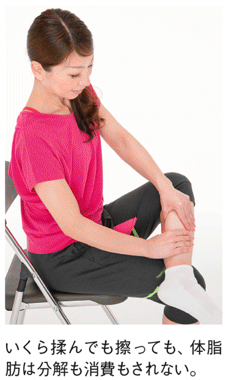
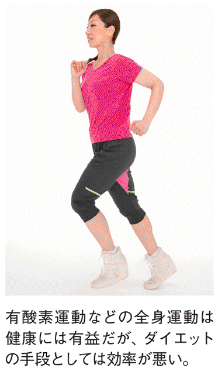
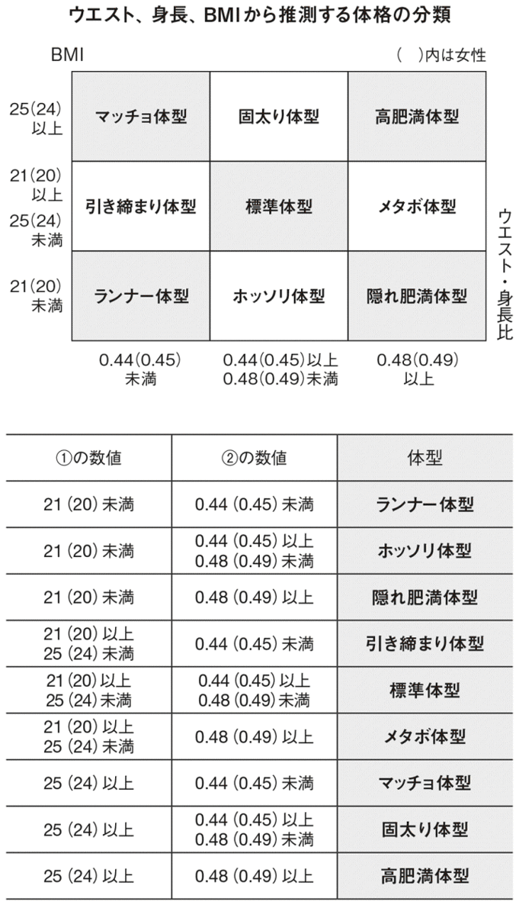
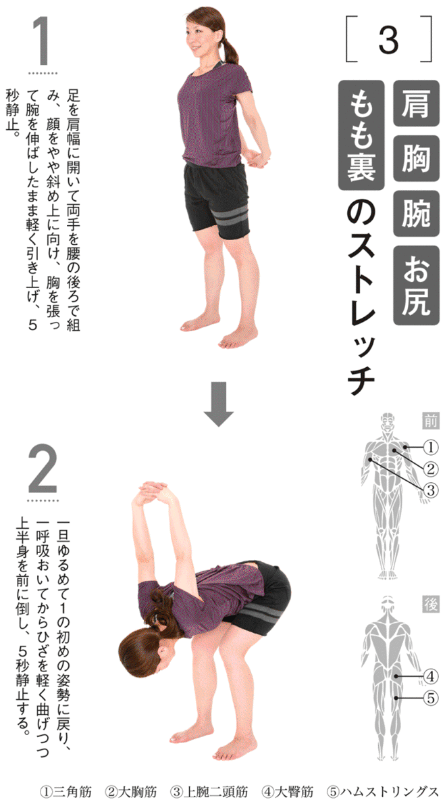
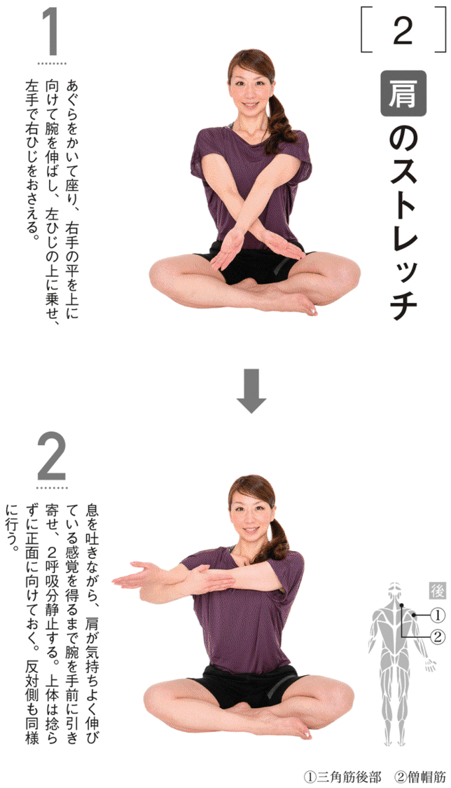

| やってはいけないダイエット (光文社新書) | |
| 坂詰 真二 | |
| (2015) | |
「元本保証で高利回りの金融商品がある」「在宅でたった10分作業するだけで、月15万円稼げる」。こういった「乗ってはいけない儲け話」につい引っかかり、儲けるどころか大金を失ってしまう人たちがいます。
同じように、「これを食べるだけで、グングン痩せる」「腰を回すだけの簡単な運動でスグに痩せる」といった「やってはいけないダイエット」に手を出し、効果が得られないだけでなく、貴重なお金と時間を失う人たちもいます。いえ、こちらの人数のほうが圧倒的に多いでしょう。
金融詐欺や悪徳商法であれば、いずれ行政による業務停止命令が下ったり、刑事あるいは民事で訴えられることになりますが、ダイエットの場合、よほどの健康被害が起こらない限り野放し。
テレビや有名雑誌では怪しい儲け話の広告を出したり、記事として扱ったりすることはほとんどありませんが、ダイエットの場合はむしろマスメディアが積極的に発信し、火付け役になることも少なくありません。残念ながら、効果がないダイエットを過度の演出、すなわち「やらせ」によってさも効果があるかのように見せるケースさえあります。
それでも、テレビや雑誌の場合はまだ内外のチェック機能が働いていますが、怖いのはそれが機能しにくいメディアであるインターネット。ブログやＳＮＳ、掲示板などには、効果がない、あるいは危険な「やってはいけないダイエット」が満載です。
ねつ造のダイエット商品で金儲けを企む詐欺集団、表では「〇〇で痩せた」と言いながら裏では他の薬を使用している自称ダイエット研究家、自身が病的に痩せていることに気づかぬまま不健康なダイエット法を宣伝し続けている人......そういったグレーあるいはブラックな集団や個人が、ネットの世界で間違った情報を流し、痩せたい人たちを惑わし続けているのです。
怪しい儲け話で損をしても、健康でさえいれば地道に働いてやり直すことができます。しかし、「やってはいけないダイエット」の場合はそうではありません。
お金や時間だけでなく、人生の基盤である健康自体を失ってしまうこともあるからです。激しい運動でひざや腰を痛めた、というのはまだマシなほう。水分を極度に制限して脱水症状となったり、糖質を極端に制限して低血糖となれば死に至ることさえあるのです。
体の不調なら本人が気づけることが多いですが、心の不調は本人でも分からないことがあります。その典型が拒食症、過食症といった摂食障害。摂食障害には遺伝的な素因も関わっていると言われますが、大半の方は様々なダイエット法を試し、その中で徐々に食生活や日常生活の内容が崩れ、摂食障害に至るという順序をたどります。
ですから、巷に溢れる様々な「やってはいけないダイエット」が、摂食障害を生み出していると言っても過言ではないのです。
ウソの儲け話であれダイエットであれ、もちろん元凶は甘い言葉をかけてくる側です。彼らは、「楽をして結果を出したいという心理」と「知識の不足や誤り」に付け込んできます。ですから、それから身を守り、本当に「結果を得る」ためには、考え方を一度リセットし、基本的な知識の習得から始めることが大切です。
そのために本書の前半の第１～３章では、これまで世に出てきた数々のダイエットが、いかに間違っているのかを明らかにしていきます。命を落とす可能性さえある危険なダイエット、リスクは低いものの実際に体脂肪を減らす効果がほとんどないダイエットを取り上げ、ダイエットについての誤った知識、誤解を正していきます。
ここまで読んでいただければ、世の中に楽をして痩せるおいしいダイエットなどないことに気づいていただけることでしょう。この時点で生活習慣が徐々に変わっていき、体脂肪が減り始める人もいるはずです。
後半の第４章以降は前半部分を下敷きに、安全で効果的なダイエット法をお伝えします。その理論は極めてシンプル。それは太った原因を直視し、そこに直接アプローチするだけです。
体脂肪が多い人というのは、そうでない人と比べて、特に骨盤が歪んでいるわけでも、リンパの流れが悪いわけでも、体幹が衰えているわけでもありません。その主要な違いは、単に食べ過ぎていることにあるのです。そして、過食の背景には多くの場合ストレスがあります。
ですから、まずストレスを軽減し、次に食事を適正に戻していきます。ただし、食事を減らすと体脂肪と一緒に筋肉も減ってしまうので、これを補うために全身の筋トレもバランスよく行います。
この「ストレス軽減」「食事制限」「筋トレ」の組み合わせによって、問題は根本的に解決されます。不要な体脂肪だけが減り、体型と体調が整い、リバウンドしにくい体に変わるのです。
トレーナーとして活動を続けること25年。現場での指導や指導者の育成と並行して、より多くの方に情報をお伝えする手段として、私は積極的に健康、ダイエット関連の雑誌記事の監修や執筆を行ってきました。
現場でもメディアでも私は終始一貫、当たり前のこと言い続けてきました。それは、当たり前ではないことが横行し、多くの人を惑わし、時間とお金を浪費させ、健康を害し続ける限り、当たり前のことをしつこく言い続けるべきだという強固な信念に基づいています。
しかし、当たり前の主張というのはいかんせん地味なものですから、インパクトに欠け、正直なところドン・キホーテのような虚しさを感じることもしばしばありました。しかし、２０１２年に筋トレに関する誤った知識を正す『やってはいけない筋トレ』、２０１３年にストレッチの正しい方法を示す『やってはいけないストレッチ』を上梓したところ、思いもよらず大きな反響をいただきました。
やはり間違った情報にうんざりしている方、地味でも本当に正しい知識を身につけて結果を出したいという方が増えているのだと確信し、強い手応えと大きなやりがいを感じました。そして、筋トレやストレッチ以上に、騙されたり悩んだりしている方がたくさんいるダイエットについても、同様に一冊にまとめて世に出したいと考えていました。
そんな折、光文社様からお声掛けをいただき、本書を刊行する機会を得ました。ダイエットに関して多岐にわたる話を一冊に凝縮するため、執筆は難航しましたが、担当の古川様には粘り強くお付き合いいただきました。また、本書の校正においては、元生徒であり現在はトレーナーとして活躍している佐藤基貴君にサポートいただきました。
末筆ながら光文社様、古川様、ならびに佐藤君にこの場を借りて感謝の意を表させていただきます。
読者の皆様が本書によって、健康的で若々しい体を手に入れていただくことを願い、結びの言葉とさせていただきます。
２０１５年４月末日 スポーツ＆サイエンス 坂詰真二
〈注〉
本書に紹介する食事制限、
運動を行う前に必ずお読みください。
①下記に該当する疾患を持つ方、また安静時や運動時に胸や腰など体の一部に違和感、痛みを感じる方は、かかりつけの医師に相談の上、指示内の範囲で運動、食事制限を行いましょう。
「狭心症や動脈硬化などの循環器疾患、喘息や慢性閉塞性肺疾患などの呼吸器疾患、リウマチや椎間板ヘルニアなど整形外科系の疾患、甲状腺機能亢進症やクッシング病などの内分泌疾患、月経困難症や無月経などの婦人科疾患、うつ病や摂食障害などの精神疾患」
②上記①に該当しない場合でも、60歳以上の方、また60歳未満でも極度の運動不足の方、BMIが20未満の方、女性で妊娠中またはその兆候がある方、その他健康上の問題や不安がある方は医師と相談の上、指示内の範囲で運動、食事制限を行いましょう。
③食事制限は本書のガイドラインに従い、無理せず行ってください。食事抜き、糖質制限などの偏った食事、水分の制限などは決して行わないでください。
④かぜ、睡眠不足、欠食などで体調が悪い場合、また飲酒をしている場合は運動を行わないでください。また運動中に体調の不具合を感じた場合は中止してください。
⑤運動は決して無理をせず、個人の体力に合わせて、できる種目、できる回数（秒数）、頻度で行いましょう。
⑥運動中に滑ったり、転倒したり、手足を周囲にぶつけないように留意してください。バランスを崩した場合を考慮して、壁やソファの近くで行いましょう。
⑦筋肉や関節の痛み、不快感のない範囲で行ってください。運動翌日から１〜３日間ほど感じる筋肉痛は、筋肉が発達する過程で起こる自然なものですが、痛みが強い、４日以上続く場合は医師の診察を受けてください。
⑧運動中には、呼吸を止めないように注意しましょう。各種目に記載してある呼吸の仕方にしたがってください。
⑨運動の前後には、コップ１杯程度の水分を補給しましょう。30分以上行う場合は運動中にも同程度の水を摂りましょう。夏季、冬でも部屋が暑く汗の量が多い場合は多めに水分を摂ってください。
⑩食後４時間を経過した空腹時、また食事直後１時間以内の運動は控えましょう。
帯デザイン／華本達哉
ストレッチ・筋トレモデル／飯塚万希子
第１章
筋肉が減って命も危険！
間違いだらけのダイエット
水を控える水分制限ダイエットは、命を危険にさらす間違いダイエットの典型です。
昭和のスポーツ根性マンガの代表作、『あしたのジョー』では、主人公矢吹丈のライバル力石徹が水分を極限まで制限する減量シーンが描かれます。彼は水道の蛇口を捻れないように固定したり、トイレの水を飲もうとして苦悩したりしながら減量に成功し、試合には勝利したものの、過酷な減量が原因となって試合後に亡くなってしまいます。
これはマンガの話ですが、実際にボクシングなど体重制の競技の世界では、伝統的にこれに近い減量法が行われていて、それはいまだに根強く残っています。そして、一般の方の中でも、ダイエットをしようと水を制限する人は少なくありません。
しかし、このような水分摂取の制限は大変危険な自殺行為！ むしろダイエットでは、水を積極的に飲むべきです。その理由をご説明します。
私たち人間に限らず、生物が生きるために最も必要なものは「水」です。そのため、人間は水さえ飲んでいれば最長10日～２週間程度生存することができますが、水を全く飲まなければ３日程度で命を失うと言われています。
生物にとって水の最も重要な役割の１つは、酸素や栄養素などの運搬。酸素や栄養素は血液によって各臓器、器官、組織に運ばれ、細胞間にある水（細胞間質液）を通して各細胞に行き渡り、水で満たされた細胞内を移動します。ですから、水分が不足すると全身の細胞に栄養を運ぶことができなくなり、細胞は死んでしまうのです。さらに、血液がドロドロになって血栓もできやすくなります。
もう１つは尿と一緒にアンモニアなどの老廃物を排泄すること。水分が不足した脱水状態で尿がうまく出なくなってしまうと、体内に有害な物質が蓄積し、やはり生命の危機が訪れます。
それから発汗などで体温を下げるのも重要な水の役割。脱水して体温が上昇すれば、私たちの細胞は正常に機能することができなくなります。
このように体、生命にとって不可欠なものですから、私たちは水に対する強い欲求を持っています。実際、減量をするボクサーは一様に「空腹よりも喉の渇きが圧倒的に耐えがたい」と言います。
確かに水を飲まなければ、体重は急激に落ちます。
それは、体内にたくさんの水分が存在するからです。私たちの体内水分量は体重のおよそ60％（体重70㎏ならば42ℓ）。私たちはその６～７％にあたる２・５ℓ＝２・５㎏の水を日々体に取り込み、それと同量の汗や尿を排出しています。取り込む水分の半分にあたる１・２５ℓ程度は水やお茶などの飲料から摂っていますから、単純に水分を全く摂らなければ、１日で１・２５㎏、２日で２・５㎏、３日で３・７５㎏も体重が減ります。
しかし、これは脱水状態ですから、先ほど説明したように徐々に体調は悪化し、激しい喉の渇きに苦しみ、満足に眠ることもできないでしょう。
さらに虚しいことに、このように命を危険にさらして我慢をしても、体に必要な水が不足するだけで、体脂肪量は全く減りません。水と体脂肪とは全く別物ですから、体脂肪を減らそうとして水を制限するのはナンセンスなのです。
時折、「私は水を飲むと太る」と言う方がいますが、水をいくら飲んでも体脂肪には変わりませんし、水が必要以上に体内に蓄積することもありません。私たちの体内水分量は、一定になるように保たれています。たくさん水を飲めば、尿や汗による排泄量は増え、水が不足すれば尿や汗の量は抑えられるのです。
逆に言うと、私たちの体は必要以上に水を取り込むことはできませんから、水太りの心配をして、水を制限する必要は全くありません（心不全や高度の腎機能障害などの持病がある場合を除きます）。詳細は第５章で述べますが、ダイエットするならば、むしろ水を積極的に飲むべきなのです。
水太りをする！ という方の栄養チェックをしてみると、実際は水を飲んでいるのではなく、スポーツドリンクなどの清涼飲料水や甘い缶コーヒーなどを多く摂っているということが多いのです。水は０㎉ですが、清涼飲料水は多いもので１００㎖あたり50㎉もの熱量を含んでいます。５００㎖のドリンクを３本飲めば、７５０㎉となって食事１食分に相当します。ちなみに７５０㎉はこってりラーメン１杯分、あるいは幕の内弁当１つ分に相当します。
つまり、水太りの正体は多くの場合、「水分中に隠れた糖類（砂糖や果糖）の摂り過ぎ」による体重増加なのです。
汗をかいて痩せる、これもまた昔からある危険なダイエット法です。
中高年男性にはサウナ好きの方が多くいますし、また女性には岩盤浴が好評です。サウナスーツはいまだ根強い人気があり、10年ほど前、元プロボクシング世界チャンピオンの方がプロデュースしたサウナスーツが大ヒットしたのは記憶に新しいことでしょう。
こういった発汗促進型ダイエットも、本質的には水分制限型ダイエットと同じ。体に必要な水を失うわけですから、健康上、非常に危険なダイエット法です。
サウナや岩盤浴、サウナスーツなどで体を温めると、体温を下げるために通常以上に発汗量が増え、単純にその分だけ体重は減ります。高温のサウナに長時間入れば、体重が１～２㎏減ることもあります。
しかし、汗をかくことと体脂肪の減少には、直接的な関係はありません。汗にも微量の油脂が含まれてはいますが、その重量は汗全体の０・１％以下。３ℓの汗をかいても、失われる油脂は多く見積もってもたったの３ｇです。
ボクサーがサウナスーツを着て、ストーブを焚いたジム内で激しい練習をすると２～３時間で５㎏もの体重が減ることがあります。しかし、どんなに激しく運動をしても２～３時間で消費することができる体脂肪は、多く見積もっても０・５㎏というところ。ですから、残りの４・５㎏は汗で失った水分です。
それでも、「汗をかけば体脂肪が減る」とイメージしてしまうのはなぜでしょう？
ランニングやスポーツなどの運動をすると、体温を下げるために「発汗」が促されます。と同時に、脂肪をエネルギー源として消費します。ここで頭の中で論理の飛躍が起こり、直接因果関係のない「発汗」と「脂肪燃焼」を結びつけてしまうのです。
「鳥は二本足で歩く、鳥は飛べる、だから二本足で歩く動物は飛べる」、こう言ったら誰でも論理が飛躍していることに気づくでしょう。発汗と体脂肪燃焼を結びつけるのも、同じように飛躍した考え方なのです。
それから、近年聞かれる「体温を上げると基礎代謝が上がる、だから痩せる」、この理論も明らかな誤りです。筋肉には熱発生装置としての役割があり、生命維持に必要な体温を生み出しています。このため、筋肉量が多いと体を動かしていなくても普通の人より多くのエネルギーを消費し、体温が上昇します。かといって、逆に外部から体温を上げても基礎代謝量は増えません。
例えばパソコンは、無数の配線を電気が通る過程で熱を発生します。しかし、パソコンをいくら外側から温めたところで電力を消費しないのと同じ理屈です。
体を温めて、発汗をすること自体が悪いと言っているわけではありません。現代のように、夏でも屋内でクーラーが効いた環境にいると汗腺が衰えて汗をかきにくくなり、その結果、暑い環境下で熱中症にかかりやすくなります。これを防ぐには、クーラーに頼り過ぎないようにしつつ、入浴などで汗をかいて汗腺を機能させることが役立ちます。
また、詳細は後で解説しますが、適切な入浴は間接的にダイエットに役立ちます。
ただし、どのような方法であれ、汗をかいたら体は水分を失っているわけですから、それと同量の水とミネラルを補給しなければなりません。それを怠れば体に様々な不具合が生じることになります。
先ほど、発汗促進ダイエットも水制限ダイエットも本質的には同じと言いましたが、発汗ダイエットは汗と一緒にナトリウム、カリウムなどのミネラルも失われますし、短時間で急激な体温上昇を起こすため、より危険性は高いと言えます。
水分が不足することで最も怖いのは、血液が濃くなることです。血液がドロドロになって流れにくくなると、ポンプである心臓に負担がかかります。さらに、血栓も起きやすくなり、最悪の場合は心筋梗塞や脳梗塞などが起こって、死の危険性があります。
また、水分補給なしにサウナや入浴、運動で大量に汗を出すのは、自ら熱中症を引き起こしているようなもので、頭痛や吐き気、筋痙攣などが起こり、進行すると意識が薄れたり、場合によっては臓器の障害が起こって死に至ることさえあります。
２０１０年８月、サウナ発祥の地フィンランドで開催された世界サウナ選手権（サウナ内での我慢大会）では、大会常連者が亡くなる事故が起きました。死に至らなくとも、日本国内でもサウナで気分が悪くなったり体調を崩してしまう事故は少なくないのです。
厳しい絶食、断食も古くからあるダイエット法。近年では若い女性に受け入れられやすいプチ断食、ファスティングなどという言葉も使われていますが、中身は同じです。
水分制限型ダイエット、発汗促進型ダイエットと異なり、絶食型ダイエットでは実際に体脂肪が減ります。ですが、これは筋肉を激減させて代謝を下げ、体調を崩し、場合によっては死に至る危険なダイエット法です。その理由を詳しくお話ししましょう。
体重70㎏の人が、１日に消費するエネルギー、すなわち必要とするエネルギーは２８００㎉。この方が、水分をたっぷり摂りつつ１日に３００㎉だけ摂取する絶食型ダイエットを行った場合、体内のエネルギー（カロリー）収支は２５００㎉の赤字、３日間続けるとマイナス７５００㎉となります。体脂肪は１㎏あたり約７０００㎉の熱量を持つので、計算上たった３日間で約１㎏の体脂肪が減る計算になります。
しかし、残念ながらこの計算は「誤り」。実は、食事を減らせば減らすほど、体脂肪だけでなく筋肉も減ってしまうからです。これが起こるしくみについてご説明しましょう。
食べる量が減るか、運動量が増えるか、あるいはその両方によって、エネルギー収支が赤字状態になると、「血液中の糖の量≒血糖値」が低下します。これを解消するために、血糖値を上げる複数のホルモン（血糖上昇ホルモン）が分泌されます。この中には、体内に貯蔵エネルギーとして蓄えられた糖や体脂肪を分解するホルモンだけでなく、筋肉のタンパク質を取り出す糖質コルチコイドというホルモンがあるのです。筋肉から取り出されたタンパク質は肝臓で糖に変えられた後、エネルギーとして利用されます。
体脂肪は空腹時に減り、食事をすると増え、１日のうちに量が増減するのですが、これに対してタンパク質を主成分とする筋肉は通常、空腹時に減るのみで食事をしても増えることはありません。ですから、私たちが普通に毎日３食の食事をしていても筋肉は少しずつ減っていきますが、絶食型ダイエットのように激しい空腹が長期間続くと、筋肉は加速度的に落ちていくのです。
「体重が減るなら筋肉が落ちても構わない」、という人がいますがこれは大きな誤り。
筋肉は生きる上で必要な体温をつくり出すため、常時エネルギーを消費しています。ですから、筋肉が減ればエネルギーを使わない「省エネ体質」になってしまいます。自動車や電気機器であれば省エネは喜ばしいことですが、人の体が省エネになるということは、つまり太りやすい体になるということ。
ですから絶食型ダイエットを行った後、実施前と同じ食事量に戻しても、エネルギー収支は黒字になるので体重が少しずつ増えていくことになります。筋肉が減れば体力は落ちて疲れやすくなり、体のラインもメリハリがなくなります。
さらに、糖質コルチコイドが分泌されると、筋肉以外の組織でもタンパク質が取り出されて分解されるため、貧血、骨密度の低下、免疫力の低下など、様々な不調も起こります。
絶食型ダイエットでそれ以上に怖いのは、脱水と低血糖を引き起こし、命の危険を招くことです。
なぜ脱水になりやすいかと言えば、食品の半分以上が水でできているから。野菜や果物、海藻などにいたっては90％以上が水です。実際、私たちが摂取する水分の30％は食品由来。そして、脱水の恐ろしさはこれまで述べたとおりです。仮に絶食型ダイエットをするのであれば、不足する分の水分量を十分に補わないと大変危険です。
脱水の次に怖いのは低血糖。低血糖とは、血液を流れるブドウ糖が不足した状態です。ブドウ糖は食事で摂った糖質を分解した最少単位で、体に吸収された後、血液を通って各細胞に運ばれ、エネルギーとして使われるか、または貯蔵されます。
神経細胞は他の組織と異なり、ブドウ糖しかエネルギー源として使うことができません。そのため血糖値が低下すると、まず１００億以上もの神経細胞が集まる脳がダメージを受け、思考や判断能力が低下します。放置すると、脱力感、冷や汗、手足の震えなどの様々な神経症状が現れます。さらに進行すると意識がぼやけてきて、最悪昏睡に陥り、死に至ることになるのです。
加えて、体脂肪が分解されて血中の脂肪（遊離脂肪酸）が多くなると、不整脈が起きやすくなります。
また、絶食型ダイエットでは体の問題だけでなく、心の問題も生じます。食欲は動物の最大の欲求の１つですから、これを極端に制限されるのは大きな心理的ストレスとなり、その結果、ストレス性の脱毛や、不眠など、様々な体調不良を招きます。さらに後々、過食症あるいは拒食症という恐ろしい摂食障害にも陥りかねません。
絶食型ダイエットは、このように非常にリスクが高いダイエット法です。例外として、過食が習慣になってしまった人が、自分の食生活を見直したり胃袋を小さくする機会として２～３日程度だけ行うというならば意味もあるでしょう。ただし、栄養士がプログラムし、医療関係者が管理する安全性が確保された環境で行うのが前提です。
そうでない絶食型ダイエットは大変危険です。ゆるやかな自殺行為といっても、言い過ぎではないでしょう。
ここ数年流行しているダイエット法の一つが糖質制限型、炭水化物制限型ダイエットです。炭水化物のうち、エネルギー（カロリー）が０の繊維質を除いたものを糖質と呼びますから、糖質制限のほうがより正確な言い方です。
いずれにしても、糖質を多く含む主食を極端に制限するこの方法は、やはり危険なダイエット法です。
栄養素のうちエネルギーを持っているのはタンパク質（Protein）、脂質（Fat）、そして糖質（Carbohydrate）。これらの摂取量のバランスをＰＦＣバランスと言いますが、一般的な日本人のＰＦＣバランスは、「タンパク質15％：脂質25％：糖質60％」程度。実際、ご自身の食事を振り返ってもらえれば、ご飯、麺類、パン、いも類、コーンなど糖質を多く含む食品が、食事全体の半分近くを占めるのはお分かりになることでしょう。
ですから、糖質制限型ダイエットを行えば確実に、すぐに体重が減ります。主食を半分に減らすだけでも、摂取エネルギー量は20～30％程度も減少します。
「糖質を摂ってはダメ、タンパク質と脂質はいくら摂ってもいい」という場合でも、必ず摂取エネルギー量そのものは少なくなります。糖質の供給源であり、食事のメインである主食を摂らず、おかず（主菜、副菜）となる肉や魚、野菜、乳製品などはいくら食べてもいいと言っても、そう多く摂れるものではないからです。
私たちの脳にある食欲中枢（間脳の視床下部）は血液中のブドウ糖の量を感知し、足りなければ空腹を感じて食欲を増し、多くなれば満腹を感じて食欲を落とします。食欲中枢は、脂質やタンパク質の量を感じることはできません。ですから、食欲とはすなわち「糖質≒主食」を求める欲求であり、「タンパク質や脂質≒おかず類」に対する欲求は少ないのです。このため、おかず類はどれだけ食べてもいいという場合でも、食欲が湧かず、結果的には摂取エネルギー量が少なくなるのです。
そもそも、私たちの身の回りの食事を、脂質とタンパク質主体の食品だけで構成するのは困難です。お弁当を２つ頼んで、ご飯を丸々残し、おかずだけを２つ分食べることを想像してみてください。物理的にも金銭的にも簡単ではありません。結果、食べ物の選択肢が狭まり、摂取エネルギー量は減ることになります。
その結果、体重は減ります。しかし、これは心身にとって非常に大きなストレスとなり、健康を害するリスク、極端な方法によっては死に至るリスクさえあります。
地球に生物が誕生して以来、太陽エネルギーを吸収する光合成によって、植物がつくった糖（デンプン）を草食動物が食べ、さらに肉食動物がそれを取り込むことで生命をつないできました。
ですから、肉食のイヌイットなどを除き、世界中ほとんどどの国でも、ＰＦＣバランスで最も多いのは糖質です。欧米人は肉食のイメージがありますが、パン、オートミール、じゃがいもなどをたくさん摂っており、ＰＦＣバランスにおける糖質の割合は55％程度です。
糖質を摂らなければ、血糖値が下がって空腹を感じます。血糖値が下がると筋肉の分解、脳のダメージ、強い心理的ストレスなどを受けるのは前述したとおりです。
糖質制限型ダイエットの怖いところは、数日程度行う絶食型ダイエットよりも実施期間が長いことです。血糖値が低い状態が続くほど、それだけ脳はダメージを受け続け、筋肉は減ります。最も欲求の強い糖質が制限され続ければ、心理的ストレスはどんどん積み重なっていきます。
食欲が満たされないストレスに加え、糖質制限では別の心理的問題も起きます。
先ほど血糖上昇ホルモンのお話しをしましたが、血糖値が下がると脳（間脳）は自律神経の交感神経の働きを強めて、血糖上昇ホルモンの分泌を促し、血糖値を上げます。
交感神経は、闘争か逃避を強いられる状況のストレス下で働く自律神経で、心身の興奮を高めます。ですから、糖質制限によって交感神経が優位な状態が続くと、心理的にイライラ、ピリピリした状態に陥ります。つまり、心身が休まらないのです。糖質制限では痩せるというより、やつれる、といったほうが正確でしょう。
実際、ブームに乗って糖質制限を行っている人の中には、常にイライラしている人、思考力や集中力が低下してボーっとしている人、元気がない人が少なくありません。糖質制限を提唱するある方は、実際に主食を全く摂らない一方で、昼間から一日中、毎日アルコールを飲んでいるそうです。私から見ると、糖質制限という理論の破たんを体現しているとしか思えません。
食事や間食で糖質を多く摂り過ぎていて肥満の状態にある人であれば、必要量まで糖質を制限することは必要です。そうではない、不必要で極端な糖質制限型ダイエットは、生物の基本的なメカニズムを無視した危険なダイエット法と言わざるをえません。
米国では糖質制限は１９９０年前後にブームとなりました。しかし、その直後「糖質制限は死亡のリスクを高める」という複数の研究、論文が発表され、主要な提唱者の一人が歩行中に転倒して死亡するという事故の後、ブームは終息しました（死後、彼が実は重度の肥満者で、心臓病も患っていたことが明らかになっており、信望者にさらにショックと失望を与えました）。
日本でも近年、糖質制限が心身に悪いという医学的な発言や研究発表も出てきており、間もなく終息することでしょう。
糖質制限型ダイエットが登場して注目を集めるようになるまで、最も一般的だったのは脂質制限型ダイエット。
糖質やタンパク質が１ｇあたり４㎉であるのに対し、脂質は１ｇあたり９㎉と倍以上のエネルギーがあり、日本人の中には「脂質＝太る」や「脂質＝不健康」というイメージが定着してしまいました。しかし当然、物事はそう単純ではなく、むやみに脂質を制限すれば体調が崩れやすくなるのみならず、長期的にみるとダイエットにとってもマイナスになります。
確かに、現代の日本で肥満と動脈硬化などの生活習慣病が増えた一因は、脂質の摂取量が増えたことにあります。
戦後、日本の食糧事情が飛躍的に豊かになるとともに食生活が欧米化し、脂質を多く含む肉や乳製品などの食品、また調理油やドレッシングなどを摂る量が増えたことが、摂取エネルギー量を押し上げたことは疑いようがありません。
ですが、脂質は摂らなければ摂らないほどいい、というわけではありません。脂質は私たちが成長し、生命を維持するために欠かせない栄養素だからです。
脂質制限型ダイエットにみられるのは、ボディービルダーが減量期に摂るような超低脂肪高タンパク食。例えば、「玄米、鶏肉のささ身、調理油を使わず茹でたブロッコリーなどの野菜、無脂肪牛乳で溶いたプロテインパウダー」といった献立です。
しかし、彼らがここまで極端に食事制限をするのはコンテスト直前の２～４週間程度です。それは、こうした脂質抜きがコンディションを崩し、筋肉づくりにおいてもマイナスなことを、彼らは理論的、経験的に知っているからです。
脂質がいかに大切か、ご説明しましょう。脂質の主な役割は、エネルギー源、あるいは貯蔵エネルギー源（体脂肪＝中性脂肪）になることですが、それらと同程度に重要なのは体の一部になることです。
人体を構成する全ての細胞の細胞膜、神経細胞、核酸（ＤＮＡおよびＲＮＡ）は主に脂質でできています。このため脂質が不足すると、細胞の合成、成長がうまくいかなくなったり、血管が弱くなって出血しやすくなったりします。特に成長著しい乳幼児から青年期にかけて、不足すれば体だけでなく脳の成長、発達も阻害することになる一大事です。
また脂質は、体内の情報伝達物質であるホルモンのうち、副腎皮質ホルモン、性ホルモンのいくつかの材料にもなります。副腎皮質ホルモンには炎症を抑える糖質コルチコイド、体内水分量を調節する鉱質コルチコイドなど、私たちの健康維持にとって欠かせないホルモンです。
性ホルモンはよく知られているように、男性らしさ、女性らしさを発現させるホルモンです。このため、脂質が不足すると性ホルモンの正常な合成、分泌が阻害されます。
男性ホルモンは筋肉、骨、赤血球などの合成（成長）を促す作用があるので、不足すれば筋肉量の減少、骨密度の低下、貧血などが起こります。健康上はもちろん、体型づくりにとってもマイナスです。
女性ホルモンが不足すると月経不順、骨密度の低下、脱毛や肌の乾燥など様々なトラブルが起こりますから、健康上だけでなく、美容上も大きな問題です。
加えて、脂質にはビタミンＡ・Ｄなどのビタミン（脂溶性ビタミン）が含まれていますから、脂質が不足すればビタミン欠乏症を起こしやすくなります。例えばビタミンＡが不足すると、暗い所での視力が低下したり、皮膚疾患が起こりやすくなります。
さらに、脂質は糖質に比べて消化吸収が遅いため、腹持ちをよくする働きがありますから、過度に制限するとお腹がすきやすくなるというデメリットもあります。
「脂質は体内で糖質から合成もされるから、摂らなくてもいい」という極論を耳にすることがありますが、これも間違い。脂質を構成する脂肪酸の中には、体内で合成できるものもありますが、アラキドン酸、α-リノレン酸、ＤＨＡなどの多価不飽和脂肪酸は必須脂肪酸と言われ、食品からしか摂取できません。しかも、これらの脂肪酸には動脈硬化を防いだり、脳の発達に関与する重要な働きもあります。
また、飽和脂肪酸の一種ですが、ココナッツ油、パーム油などに含まれる中鎖脂肪酸（カプリル酸、カプリン酸など）は、ダイエットを助ける働きがあると考えられています。一般的な脂肪酸に比べて分子が短く、そのためすぐにエネルギーとして使われやすいからです。
脂質がエネルギーとして使われれば、体内にある糖質の使用が抑えられますから、血糖値が下がりにくくなり、その結果お腹がすきにくくなります。かと言って、これを拡大解釈してココナッツ油やパーム油をどんどん摂って摂取エネルギーが増えれば、かえって体脂肪は増えることになるのは当然です。

そもそも、体脂肪の増減は食事で摂る脂質の割合や脂肪酸の種類ではなく、エネルギー収支によって決まるからです。脂質を全く摂らなくても、エネルギー収支が黒字なら体脂肪は増えていきますし、逆にエネルギー収支が赤字であれば、脂質の割合がどれだけ多くても体脂肪が増えることはありません。
健康のためにもダイエットのためにも、脂質を必要以上に摂らないことは大切ですが、逆に極端な脂質抜きも避けるべきなのです。
昔も今もダイエット法に多いふれこみは、「１週間でマイナス５㎏」、「１か月でマイナス15㎏」といった短期間で急激に減量するというものです。
痩せたい人にとっては魅力的な言葉で、信じたくなるのももっともですが、これらは決して現実的ではありません。「嘘」と言ってもいいでしょう。もしそんなことを実現すれば、明らかに心身の健康を損ねることになります。その根拠を、「１週間でマイナス５㎏」を例にとってご説明しましょう。
体脂肪は１㎏でおよそ７０００㎉の熱量を持ちます。ですから、５㎏の体脂肪を減らそうとすれば、１週間でマイナス３５０００㎉、１日でマイナス５０００㎉のエネルギー収支の赤字をつくらなければなりません。
食事量が多い80㎏の大柄な男性でも、１日の摂取エネルギー量はせいぜい４０００㎉。ということは、この方が１日でマイナス５０００㎉を実現しようとすれば、一日中何も食べない上に、１０００㎉分の運動をしなければならないのです。
１０００㎉をジョギングで消費しようとすれば２時間はかかります。何も食べずに２時間のジョギングをすることを想像してみてください。１週間どころか２日ともたないことでしょう。仮にものすごく強い精神力で３日継続できたとしても、必ず低血糖に陥ります。低血糖の恐ろしさは前で述べたとおりです。
食事制限や運動以外では水分を抜く方法があります。私たちは毎日１・２５ℓの水分を飲料で摂取していますから、これを半分に減らせば、計算上１週間で体重は約４・４㎏減ります。
しかし、「１ 水を制限するダイエットをやってはいけない」でご説明したように水は生きるために最も必要なもの。摂取する水を半分にしたら２日もすれば喉の渇きに耐えられず、眠るのも辛くなります。そして、３日も経つと体は脱水状態となるでしょう。
ですから、「１週間でマイナス５㎏」は非現実的であり、もし実現しようとすれば間違いなく健康を損ねてしまうのです。ダイエットの宣伝に「１週間でマイナス５㎏」、「１か月でマイナス15㎏」といったキャッチがついていたら、まず疑ってかかるべきです。
そこまで極端ではない「１週間でマイナス３㎏」「１か月でマイナス10㎏」といったダイエットでも、心身に相当にストレスがかかります。体脂肪が減る一方で、筋肉は大幅に減少し、骨密度も低下、体調も崩れることになるでしょう。
そもそも過食を引き起こす最大の原因はストレスです。ストレスによる過食で太ってしまった人が、ダイエットでさらに厳しいストレスをかけていいはずがありません。厳しい食事制限や激しい運動を行う間に強いストレスが加わり、毎日毎日食べ物に対する欲求が募っていき、ダイエット終了後には間違いなく過食が再発して、リバウンドすることになるでしょう（リバウンドの怖さは〈コラム：頭のダイエット⑦〉で述べます）。
なぜ、このような非現実的で不健康な数字がまかり通るのか？ それは、視聴率、販売数が見込めるというメディア側の事情があるからです。実際、私もこれまでテレビ番組などから「短期間でタレントの〇〇を痩せさせて欲しい」「モニター（エキストラ）数名を１週間で劇的に痩せさせて欲しい」というダイエット指導の依頼を受けましたが、前述のような内容を説明し、お断りしてきました。
私がお断りした番組で、他のトレーナーの方々が激しいダイエット指導をし、タレントさんがその後大幅にリバウンドした、あるいはエキストラの方が体を壊してしまった、といったこともありました。
それでは、ダイエットを行う適正なペースとは一体どの程度のものでしょうか。安全と健康に配慮し、心身のストレスを最小限に抑え、筋肉量を維持し、体脂肪だけを減らすダイエットのペースは１週間で体重の１％程度。体重70㎏であれば０・７㎏です。医療関係者や栄養士、あるいはトレーナーによるマンツーマンの指導で、日々安全を確認しながら行った場合でも、１週間に体重の２％、体重70㎏で１・４㎏が限界です。
１週間でマイナス０・７㎏というと少なく感じるかもしれませんが、それは早計です。２か月で６㎏、４か月で12㎏もの減量になります。
耳触りのいい言葉に乗って、健康と体型を崩し、結局リバウンドしてしまうダイエットと、ゆるやかでも確実に体脂肪を減らし、体調と体型をずっとキープできるダイエット。あなたはどちらを選びますか？
日本のダイエットサプリメントを含めたダイエット市場は、６兆円を超えていると言われています。中にはダイエットに役立つものもありますが、効果がないもの、命を落としかねない危険なものも存在します。
ダイエット食品、サプリメントは大きく分けると、「カロリーオフ食品」「低カロリー代替食品」「満腹系食品」「燃焼系サプリメント」「エネルギーカット系サプリメント」の５つがあります。
カロリーオフ食品は、従来の食品に使用する油脂、砂糖などを減らすことで、エネルギー量を抑えたものです。カロリーハーフのマヨネーズ、糖質カットのビール、ノンシュガーの飴などがこれです。これについては、うまく取り入れれば、ストレスなくダイエットを行うためのいいサポートになります。
低カロリー代替食品は食事や間食と置き換えるもの。タンパク質やビタミン、ミネラル類を強化しつつ、エネルギー量を抑えてあります。食事の代わりに牛乳で溶いたプロテインパウダーを摂る、プロテインダイエットもその一つです。
満腹系食品は、繊維質を多く含むおからなどを原料とした間食（おやつ）で、水と一緒に摂ることで胃腸の中で膨張し、満腹感を出すというものです。
低カロリー代替食品、満腹系食品とも１日１食、それぞれ食事や間食として一定期間摂るのであれば摂取エネルギー量を抑え、ダイエットに有効だと言えます。ただし、食べることは人の最大の欲求の１つですから、舌、鼻、目で感じ、味わうことができない無味乾燥な食品やサプリメントでは欲求が満たされず、知らぬ間にストレスになります。あくまでも一定期間にとどめるべきです。
燃焼系はカプサイシンやカフェインなどの刺激物を含んでいて、摂取すると交感神経を刺激して代謝を高め、エネルギー消費を促す働きを持つものです。確かに刺激物を摂ると、その直後一時的に心拍数が上がり、汗が出てきます。しかし、これによる消費エネルギーの増加は微々たるもので、散歩にも及びません。そもそも交感神経が優位な状態になると、その後は反動で副交感神経が優位となり、代謝が下がるようになっていますからプラスマイナス０。
一日中、交感神経を優位にさせておくためには、絶え間なく刺激物を摂取しなければなりませんが、これでは心身の疲労がたまり、筋肉の分解も進んでしまいます。こんなことを続ければ、やがて刺激物によって胃腸が炎症を起こして消化吸収能力が落ち、やつれていってしまうでしょう。
最後のエネルギーカット系は食事の前後に摂ることで、食事で摂ったエネルギー量の一部をカットするという食品です。これらは腸からの糖の吸収を抑えると言われるギムネマ酸（アジアに分布する植物の葉から抽出した成分）、コレステロールの吸収を抑えると言われるキチン（節足動物の外骨格などの成分）などを含んでいます。しかし、これが摂取した糖や脂肪を「なかったこと」にするほど、カットしてくれるとは思えません。もし宣伝文句どおりの効果があるなら、副作用のほうが心配です。
これら５つの分類以外の食品もありますが、その成分や効果などは説明書を読んでも理解できないものがほとんど。中にはいかにも怪しい商品やインチキなものも存在します。
２０１４年６月、「寝ている間に勝手にダイエット」と謳い、テレビや雑誌などでタレントを使って宣伝していたダイエットサプリメント「夜スリム トマ美ちゃん」に、消費者庁によって景品表示法違反の措置命令が下されました。特定の食品を摂ることによるダイエット効果の宣伝は、科学的根拠がないことから違法とされているのです。現在、科学的に体重、体脂肪を減らす効果が認められているのは食事制限と運動しかないのです。
ダイエットサプリについて危惧すべきは、効果以上に安全性です。大手の食品メーカーでさえ、製造ラインの汚染、日付の偽装などの問題を起こしているのですから、実態が把握できないメーカーのサプリメントを安易に信用できるものではありません。どんなものを原材料にしているか定かではありませんし、成分の抽出、精製過程で成分が変化したり、異物が混入しているかもしれません。
それでもドラッグストアやスーパーで手に入るものであれば、その流通過程でいくつかの自主的な審査や判断というスクリーニングを経ていますが、怖いのはインターネット通販、特に海外からの個人輸入で手に入るものです。実際、これまでも様々な健康被害が起きています。
２００２年７月、厚生労働省医薬局は、中国製のダイエット用健康食品「御芝堂減肥こう嚢」と「せん之素こう嚢」の服用者のうち12名が肝障害となり、１人が急性肝不全で死亡したため、強い因果関係が疑われるとして、ホームページなどを通じて２品の服用の中止と医療機関への受診を呼びかけました。
２０１１年７月、東京都福祉保健局は「ＭＤクリニックダイエット」というダイエットサプリメントを個人輸入して服用していた女性が亡くなった疑いがあるとして、やはり同様に服用の中止と医療機関への受診を呼びかけました。
スマホ時代でネット通販がますます手軽になり、個人輸入も簡単になった今、「楽に痩せたい」心理につけ込み、「楽に儲けたい業者」はどんどん増えていくでしょう。効果もない、危険なサプリや食品に手を出し、お金だけでなく、貴重な健康や命を失うことのないよう、くれぐれもご注意ください。
〈コラム：頭のダイエット①〉
おかしなダイエットに騙されないために１
毎年毎年、いろいろなダイエット法が流行しては消えていきます。「○○を食べれば痩せる」「△△を巻くだけで引き締まる」「息を吐くだけの簡単エクササイズ」等々。そういったダイエットはインパクトがありますから人々の興味を引き、一時的なブームにはなりますが、やがて効果に対する疑問の声が上がったり、健康被害が出るなどして終息し、決して定着はしません。
なぜそういったインパクトがあっても、効果がない、心身に悪いダイエット法が次々に世の中に出てくるのでしょう？ その原因は大きく２つあると考えられます。
１つ目はダイエットが「医療分野」ではないことにあります。巷には無資格で医療類似行為をする人たちがいますが、表に出れば必ず医師法あるいは薬事法によって裁かれます。ところが、ダイエットは医療の手前の健康法、養生法の一種であるため、明らかな健康被害が出ない限り、法によって厳しく精査されることはありません。
これを良いことに、楽をして痩せたい人たちの心理につけ込み、心ない個人や業者が何の根拠も実証もないまま、間違ったダイエットを世の中に垂れ流すのです。
２つ目は視聴率や販売部数最優先の一部メディアの姿勢にあります。そのダイエットに効果や根拠がないこと、時には体に悪いのを承知の上で、ブームに乗っかったり、煽ったりするのです。
これがお笑いやファッションであれば、流行をつくることに問題はありません。面白くないお笑いタレントを押したり、カッコよくないファッションを喧伝しても、いずれ視聴者は気づきますし、心身に影響することがないからです。しかし、間違ったダイエットを実行すれば貴重なお金や時間を失うだけでなく、心身の健康を損ねます。最悪の場合、死に至ることさえあります。
特に、今はテレビや雑誌などのマスメディアだけでなく、ＳＮＳなどを通じ、誰もが情報の発信源になれる時代。検索エンジンで「ダイエット ブログ」と打ち込めば、５０００万件以上ヒットします。
その中では医師や栄養士、トレーナーなどの専門家が正しい情報を提供している一方で、詐欺的な業者によるダイエット商品や、ダイエットに関する研究結果を誇張した情報、自身の摂食障害に気づかないまま流してしまっている危険なダイエット法なども多数混在し、ダイエットをしたい人、実践している人たちをかく乱しています。
二度とダイエットで失敗しないため、そして心身の健康を失わないために、一旦これまでのダイエット情報は忘れて、どうぞ本書で正しい知識と方法を身につけてください。
第２章
そのダイエットで
体脂肪は減りません
体の歪み、特に骨盤周辺の歪みを直すことでダイエット効果を謳う「整体型ダイエット」も、昔から名を変え、形を変えながら数多く存在するダイエット法です。
以前、あるクライアントの方からこんな相談を受けたことがあります。「うちの妻が骨盤の歪みを直すダイエットの施設に２か月通っていて、もう20万円以上を支払っているのに、体型も体重も全く変わらない。その施設の責任者は『効果が出るのは個人差があり、あと一か月続ければ必ず効果が出る』と言うのですが、続けるべきでしょうか？」と。
私は、その価格の高さに驚きながら、「やめたほうがいいと思いますよ」と即答しました。歪みを直して痩せるか否か以前に、その施設の良識を疑ったからです。もし、始めの１～２か月では効果が出ないことがあるとしたら、真っ当な人間なら入会時にそれをお客様に口頭か書面で伝え、了解を得ておくべきだからです。
では、歪みを直す整体型ダイエットで体重、体脂肪が減るかと言えば、答えはハッキリ言って「ＮＯ」です。骨盤を含めた骨格の歪みと、体重あるいは体脂肪の増減には直接的な関係はありません。
「太る最大の原因が骨盤などの歪みである」と主張する施術者、指導者の皆さんは、飢餓地帯の住人の骨盤に歪みを与えて、飢えから救って欲しいものです。彼らの主張が正しいならば、世界の食糧危機は即解決です。
しかし、そんなことはありえません。これまでも述べてきたとおり、体脂肪が増える最大の原因はまず食べ過ぎ。その次が運動不足。そして、食べ過ぎの背景にはストレスがあります。ですから、痩せるためには食べ過ぎと運動不足を改善し、それとともにストレスを解消することが不可欠です。
「私が太ったのは食べ過ぎたからじゃない、骨盤が悪いからだ」と責任転嫁すれば、気持ちは楽かもしれません。しかし、原因を直視しない的外れな対策をいくら行っても、問題は一向に解決しません。
歪みを放置せよ！ と言っているわけではありません。私は歪みという言葉は使いませんが、体が前後左右に傾いた悪い姿勢は改善すべきだと考えています。極端な悪い姿勢は、立ったり歩いたりという日常の動作で、腰や股関節、ひざなどに負担をかけて痛みや炎症を起こすからです。
その意味で、いわゆる歪みを修正することによって痛みから解放され、日常での運動量が増えた結果ある程度体脂肪が減る、ということは言えるかもしれません。
また、過度に骨盤が後傾している人はお尻のトップが下がって見えるので、骨盤を前傾させることで、お尻の形をキレイに見せることはできるでしょう。背中が丸まった猫背を直せば、バストのボリュームが上がったように演出し、形もキレイに見せることができます（姿勢を改善することで部位別の悩みを解決する方法は、巻末の付録でご説明します）。
しかし、「骨盤の歪みが体内にすき間をつくってそこに脂肪がついてしまう」とか、「骨盤が開くとヒップが大きくなる」といった、生理学、医学的にありえない話を信じさせ、高額な施術費用をとって、なんらクライアントの悩みを解決しないのは大問題です。騙された皆さんは、「効果には個人差があります」などと言う曖昧な対応にごまかされず、返金を求めるべきです。
そもそも、いわゆる歪みには修正すべきものとそうでないものがあります。私たちの骨は、生まれつき左右で長さや大きさが多少違うものです。試しに、手や足指の長さを比べてみてください。全く同じではないはずです。そのような左右差を埋めるための一種の機能として獲得している歪み（＝姿勢のアンバランス）もあるのです。
ですから、左右対称に腕や脚を使うマラソン選手でも、首が左右に傾いていたり、左右の肩の高さが違っているなど、左右バランスが崩れている人はたくさんいます。こういった方々は、左右のバランスを整えてしまうと、かえって走り方がおかしくなってパフォーマンスが下がるだけでなく、傷害を起こしやすくなる場合もあります。
健康上、疲労や痛みを引き起こすような悪い姿勢は改善すべきですが、それと体脂肪を減らすこととは、また別の話です。魔法のような言葉に乗って、大金を失わないようにご注意ください。
痩せたい部分を揉んだり擦ったりする「マッサージ型ダイエット」。外側からの物理的刺激で体脂肪が分解されたり消費されたりするなら、とても簡単で便利ですが、もちろんそんな都合がいいことが起こるはずはありません。これも「整体型ダイエット」同様、危険性はありませんが、効果の出ないダイエットです。
脂肪細胞の分解は、物理的刺激とは無関係で、体内のホルモンの指令によって化学的に起こります。食事量が不足したり、運動を行うことで血糖値が低下すると、血糖上昇ホルモンが分泌されるのは第１章で述べたとおりです。
そのうちの１つ、アドレナリンは全身の脂肪細胞に働きかけ、蓄えられていた中性脂肪の一部を分解して、遊離脂肪酸という形にして血中に放出するのを促進します。そして血中に入った遊離脂肪酸は、筋肉や心臓などに到達して、エネルギー源として使われることになります。
百歩も千歩も譲って、マッサージの物理的刺激で体脂肪が分解されるとしても、体内でエネルギーが不足しているわけではありませんから、遊離脂肪酸は余ったエネルギーとして再び脂肪細胞に取り込まれます。
もし物理的な刺激で体脂肪が減るなら、椅子に座って圧迫され続けているお尻の脂肪はどんどんなくなっていくはずですが、もちろんそんなことはありませんよね。
さて、マッサージなどの物理的刺激による痩身を標榜するエステティックサロンなどでは、「脂肪細胞を移動させる」「リンパの流れをよくして老廃物を流すことで細くする」「セルライトを分解して痩せる」といった宣伝文句が使われています。もっともらしい台詞ですが、どれも非科学的で、ありえないことです。
まず、脂肪細胞は決して移動しません。脂肪細胞同士がつながっているのはもちろん、血管や神経も周囲に通っていますから、万が一、物理的刺激で脂肪細胞が剥がれたら内出血を起こしてしまいます。マッサージによって一時的にその部位が細くなるのは、脂肪ではなく水分が移動するからです。
細胞の間は、血液から滲み出た細胞間質液という水分で満たされているのですが、水は比重が重いため、重力に引っ張られて下にたまりやすくなります。ですから、立ったり椅子に座ったりして生活していれば、ふくらはぎなどの足の水分量が増えます。これが、むくみの原因です。
したがって、マッサージによるサイズダウンはふくらはぎで顕著に起こります。もちろん、それはあくまでも一時的なもの。脂肪の減少とは全く関係ありませんから、その後また普通の生活をすれば、再び水分が重力によって下半身に下りてきて、１時間程度で元に戻ってしまいます。
このように、むくみは重力が起こすものであって、キャッチコピーで言われるように老廃物が滞ることが原因ではありません。リンパ管のリンパ液が、体の各組織の老廃物を水分とともに体の中心部に運ぶことは間違いありませんが、「老廃物が滞るからむくむ」というのは順序が逆です。むくむほど水分の循環が悪いと、老廃物の排泄がうまくいかなくなる、というのが事実です。
しかも、水分の循環について言うと、リンパ管を通るリンパ液の量は、血管を通る血液量に比べると微々たるもの。体の末端の各組織や器官でリンパ管が吸収する水分は、血管が吸収するそれのわずか10％程度しかないのです。したがって、仮にリンパの流れがよくなったところで、老廃物の滞留が劇的に改善されるわけではありません。水分の循環をよくしたいなら、軽い運動やマッサージ、入浴などで血行をよくすることが効果的です。
次に、いわゆるセルライトについてお話しします。体脂肪率が増え、ＢＭＩ25以上の過体重あるいは肥満の状態になると、脂肪の多い尻や太もも、お腹の皮膚の表面がボコボコして見えます。この現象は、主に女性に見られます。それは、男性の場合は体脂肪が増えても、皮下脂肪よりも内臓脂肪の増える割合が大きいからです。男性でもＢＭＩ30を超える肥満状態になると、これが見られる人がいます。
このセルライトは、エステなどの説明によると「体脂肪と水分や老廃物が固まったもの」だそうです。しかし、医学的にそのような組織は確認されていません。外科医や整形外科医に診察を受ける機会があれば、ぜひ尋ねてみてください。
では、なぜ皮膚の表面に凹凸が見られるのでしょう。１つの理由は、単なる「シワ」の問題。平たく滑らかな紙でも布でも、両手で包むように寄せていけば、シワになります。そして、そのシワは整然と並ぶことはなく、不規則な凹凸を生みます。皮膚および皮膚の下にある体脂肪についても同じことが言えるわけです。
もう１つの理由は、もともと同じ部位にある脂肪細胞でも、大きさ（体積）の変化に多少のバラつきがあることです。
体脂肪量が増えるときには、全身の脂肪細胞が血液を介してホルモンの指令を受け、血液から運ばれる脂肪（遊離脂肪酸）を受け取って少しずつ大きくなるのですが、同じ部位でも各脂肪細胞の増え方に多少の偏りがあります。
それは皮下脂肪内を通る血管の数が少なく、このため血管に近い脂肪細胞ほどホルモンの指令が届きやすく、かつ脂肪（遊離脂肪酸）を受け取りやすい一方、遠い細胞は逆に指令も脂肪も届きにくいからだと考えられます。
その結果、脂肪細胞の多いお腹、お尻、太ももなどの部位で体脂肪量が多くなるほど、凹凸が少しずつ顕著になっていくのです。ですから、逆に体脂肪量を減らせば、大きくなりやすい脂肪細胞は小さくもなりやすいので、マッサージなど全く行わなくても、皮膚は元に戻って自然と滑らかになります。

これまでお話ししたように、マッサージ型ダイエットには体脂肪を減らす効果はありません。しかしながら例外として、自分自身で揉むセルフマッサージの場合、実際にわずかに体脂肪が減ることもあります。１９９０年代中頃、スリミングローションや痩せる石鹸が大流行しました。このときには実際に数キロほど体重、体脂肪が減ったという人たちが現れました。
ある雑誌の企画で、当事者の方々の話を聞く機会があったのですが、なんと１日１時間も２時間も、長い人ではそれ以上もセルフマッサージをしていたのです。マッサージをすること自体、一種の運動でエネルギーを消費しますから、その結果痩せたということなのです。
ただし、セルフマッサージは大きな下半身の筋肉を使わず、主に上半身を使って行いますから、エネルギー消費という点で効率が悪く、また手や肩などに相当な負担がかかりますから、決しておすすめできるものではありません。
マッサージの最大の効果は心身に対するリラクセーション効果であり、これはダイエットにとって有効に働きます。ストレスと過食には深い関係があり、マッサージによってストレスが軽減されれば、必要以上の食欲を抑え、体脂肪を減らす手助けとなりえるからです。過食を抑えるストレスマネジメントについては第４章で詳しく解説します。
ひと昔前、銭湯やクアハウスなどに行くと、必ずと言っていいほど脱衣所には電動でウエスト周囲をブルブルと振動させるベルトマッサージ機がありました。数年前には、これと似たような器具で、腰に装着する電動ブルブルマシンが流行しました。ほかにも電動式バイク、金魚運動マシンなど、機械が体を揺らしたり動かしたりする「受動運動ダイエット」には様々なものがありますが、残念ながらどれも体脂肪を減らす効果はありません。
例えば自動車やバイクは、アイドリングをしている間もエンジンがガソリンを燃焼して回転し、ボディーを震わせます。しかし、それらのマシンに外側から振動を与えたところでガソリンの消費が増えるわけではありません。
また、貨物列車で自動車やバイクを運んだところで、エネルギーを使うのは列車であり、自動車やバイクは全くガソリンを消費しません。
それと全く同じ理由で、受動運動マシンの動力で体を震わせたり運動させたりしたところで、人間の消費エネルギー量は全く増えません。見かけ上は体が動いていても、エネルギーを消費するのは機械ですから増えるのは電気消費量のみ。心理的興奮や寒冷に対する防御といった例外はありますが、基本的に人間が自分の筋力を使って体を動かさない限り、エネルギー消費量、体脂肪の燃焼量が増えることなどありえないのです。
もちろん、筋肉や関節を他動的に動かすことに全くメリットがないわけではありません。血行をよくしたり、筋肉をほぐしたり、関節の動きをよくしたりといった、マッサージやストレッチとしての効果は期待できます。足がむくむ人は電動式バイクに乗れば改善するでしょうし、腰の筋肉が張っている人は金魚運動マシンを使えばほぐれることでしょう。しかし、それと体脂肪を減らすこととは全く別物です。
念のためですが、血行がよくなったからといってエネルギー消費量が増えるわけではありません。血液の循環がよくなり、酸素や栄養が運ばれやすくはあるものの、体を実際に動かさない限り、エネルギー消費量が増えることはありませんから、エネルギーを生み出すために必要な酸素や栄養の消費量は増えません。
受動運動マシンの一つに、ＥＭＳ（electrical muscle stimulation）という、電気を流して筋肉を収縮させる器具があり、古くから根強い人気があります。かつて理科の授業で、電気を通したらカエルの筋肉が動く、そんな実験を経験したことがある人もいるでしょう。これが証明するように、筋肉はそもそも電気刺激で収縮しますから、ＥＭＳを使った場合、受動運動ではありますが実際に筋肉は収縮し、エネルギーを使います。
とはいえ、家庭用のＥＭＳは低周波という微弱な電流しか発生しないので、当然筋肉の収縮もごく弱いもの。しかも、機械で刺激できるのは全身に４００以上もある筋肉の一部、せいぜい数個ですから、当然消費するエネルギーもごく少量です。
実際、ＥＭＳを使用しても筋肉の疲れは感じませんし、心拍数や呼吸数が上がることもありません。もしＥＭＳが、筋トレと同じ負荷で筋肉を収縮させるなら、仰向けに寝てお腹に装着して電気を通せば、上体が腹筋運動のように自動的に起き上がってしまうはずです。もちろん、そんなことは起きません。ですから、ＥＭＳには消費エネルギーを増やす効果も、筋肉を鍛えて基礎代謝量をアップさせる効果も期待できません。ＥＭＳに期待できるのは、やはり他の受動運動マシンと同じく、マッサージ効果程度です。
それでも、エステ関係の方などは「実際に、ＥＭＳを使うと30分でウエストがサイズダウンします！」と断言し、モニターのデータを提示しています。しかし、これにはちょっとしたトリックがあります。
私たちが立つか座っているときには、内臓が重力に引っ張られて下がるためお腹を押し出し、ウエストサイズ、特に下腹回りのサイズはアップします。しかし、仰向けに寝ると内臓はダラッと全体に広がるため、ウエストサイズは減ります。
ＥＭＳをつけてもつけなくても、日常生活で立ったり座ったりしている人が30分も仰向けになれば、自ずとウエストサイズは減るのです。仰向けのまま、さらにお腹にゆるく力を入れ続けると、その後も無意識のうちにお腹に力が入りやすくなるため、ＥＭＳをつけたときと同様にウエストサイズの減少が起こります。
もちろんこれは一時的なもの。皮下脂肪も内臓脂肪も減りませんし、筋肉の収縮も長くは続きませんから、その後普段どおりの生活に戻れば、ウエストは自然と元通りになります。
受動運動マシンの中で、実際にエネルギー消費量を増やしたり、筋肉を鍛えたりする効果がある程度期待できるのは乗馬型マシンです。乗馬マシンに乗ってスイッチを入れると、前後左右に上半身が振られますから、これをこらえたり、元の姿勢を保とうとして、反射的に体幹やお尻、内腿周辺などの筋肉が使われます。
ただ、実際の乗馬のように足で体重を支える必要がないため、使われる筋肉の数も、消費するエネルギーの量も通常の筋トレ、有酸素運動には及びません。日頃、全く運動をしていない人が、運動を開始するきっかけとして使ったり、運動前のウォーミングアップとして使うならいいでしょう。
「便秘を直せば痩せられる！」「宿便を出したら３㎏、５㎏痩せる!!」などと謳う、便通促進型ダイエットも古くから存在します。比較的最近の例では、腸内洗浄が流行しました。
便や宿便なるものが体重を増やす原因になり、それを解消すれば体重、体脂肪は減るのでしょうか？ 提唱者や推奨者たちによると、たまった便を出すと３～５㎏も体重が落ちるというのですが、これはかなり大げさな数字です。
というのも、成人の一回あたりの大便の量は１００～２００ｇ程度しかないからです。試しに、排便前と排便後にご自身の体重を比べてみてください。体重計に現れるほどの変化は見られないはずです。
便が大腸にある間、大腸は便から水分を吸収していくので便は徐々に軽くなりますし、便秘だと腹部（腹腔）の内圧が上がって胃腸が圧迫されるので、食欲と食事量が落ちます。このため、３日分の便でも５００ｇに満たない程度、仮に10日便通が滞ったとしてもせいぜい１㎏程度でしょう。数キロ単位で体重が落ちる、というのが随分大げさだということが分かるはずです。もちろん、便を排出すればその重さ分だけ体重は落ちますが、体脂肪が減ることはありえません。
次に、便とは違ったニュアンスを持つ「宿便」なるものは本当に存在するのでしょうか？ 提唱者、推奨者たちによると、「宿便とは、排出されずに残った便が腸壁のヒダにこびりついて固まってしまったもの」で、これが肥満の原因になるそうです。
宿便というと確立された専門用語のように聞こえますが、実は西洋医学では使われない言葉であり、私がこれまで外科医を含め、様々な医療関係者に聞く限り、大腸内に宿便の存在を認めた方はいません。これは東洋医学的な「概念」のようです。西洋医学の医師の一部にも宿便という言葉を使う方もいますが、あくまでも大腸内に滞っている便を指す、便宜上の言葉として使っているようです。
毎日排便のある人であっても、大腸内に便があるのは普通のことです。食べ物は大腸内を15～20時間程度かけてゆっくり移動し、その間に大腸に水分を吸収され、徐々に便になっていきます。１日３食を摂る普通の人であれば、次々と食べ物が大腸に送られてくるわけですから、大腸が空っぽになることがないのです。
内視鏡検査や手術のためなら、下剤を飲んで腸内を空っぽにする必要はありますが、それ以外の目的で下剤や浣腸を使うことは健康上決していいことではありません。排便を促そうとして下剤や浣腸を日常的に使用すれば、自力での排便力が衰えます。下剤や浣腸なしでうまく排便されなくなったり、下痢をしやすくなったり、肛門周辺の括約筋が衰えて便が漏れやすくなったりする恐れもあります。
肛門からハーブや薬品などを含む生理的食塩水を入れて、それと一緒に便を無理やり出す腸内洗浄も一種の浣腸であり、やるべきではありません。そもそも、腸内洗浄を含め、浣腸は基本的に医師により行われるべき医療行為です。
国内外には、医師が指導、監督する医療機関以外で腸内洗浄を行う施設がありますが、これは違法であって大変危険なこと。肛門から挿入するチューブや器具が肛門や大腸を傷つけ、場合によっては死に至る危険性すらあります。実際、日本国内でも２０１０年にコーヒー浣腸という名の腸内洗浄を行っていた、自称治療師が医師法違反容疑で逮捕されました。
医師によって浣腸が行われるにしても、あくまでも医師が健康上必要と判断した場合のみ。自己判断で行う、日常的な浣腸や下剤の使用による便通促進は、過食症の典型的特徴でもあります。体脂肪が多く、減らしたいという人に対し、便通促進型ダイエットをすすめるのは、問題を解決しないどころか、過食症を引き起こしかねないのです。
もちろん、１日１回程度の自然な便通があるのは大切なことです。単純に便が数日たまれば、膨満感、不快感、腹痛が起こりますし、下腹が少しポッコリします。また、便秘が日常化すると悪玉菌（腐敗菌）が増えて腸内環境が悪くなり、肌荒れや口臭の原因になりますし、それが長期間続けば大腸がんのリスクを高めることにもなるからです。
しかし、単に便秘を解消すると言っても、原因が異なれば自ずと対処法は異なります。
便秘の代表的なものに、ストレスなどによって直腸が緊張して起こる緊張性便秘と、大腸の働きが鈍って起こる弛緩性便秘があります。前者であれば、リラクセーションが有効ですし、水分を多く摂って便を柔らかくする必要があります。しかし、それは後者にはあまり有効ではありません。後者の場合は、リズミカルな歩行などの運動で大腸を刺激しながら、食物繊維を多く摂って便の「かさ」を増す必要があります。
日常的に便秘に悩んでいるのであれば、自己判断せずに、医師による診断を受けて適切な治療、指導を受けるべきです。もちろん、繰り返しになりますが、便秘を解消しても体脂肪が減るわけではありません。
次に腹筋、二の腕、お尻など、痩せたい部位を筋トレで鍛えて細くするという「部位別筋トレ型ダイエット」についてご説明します。受動運動型ダイエットと比べると、実際に体を主体的に動かすので、効果が出そうな印象があるにはあるのですが......。
気になる部分だけ痩せたい気持ちは分かります。特に「お腹を凹ませるのに最適なのは腹筋運動」と思い込んでいる人は多く、こういったニーズを受けて、これまで腹直筋や腹斜筋など、いわゆる「腹筋＝フッキン」を鍛える家庭用器具が数多く発売されています。古くは「スタイリー」、十数年前には「腹筋ローラー」が流行りましたし、近年では「ワンダーコア」という商品が話題になっています。
また、腹筋を鍛えるダイエット法も脈々と続いています。近年では「ドローイン」といって意図的にお腹を凹ませるメソッドや、「コア（体の中心の意）トレーニング」「体幹トレーニング」がブームとなったのは記憶に新しいことでしょう。
「腹筋＝フッキン」という言葉が「コア」や「体幹」に置き換わっても、意味する部位も目的も同じ。いずれも「お腹周りの筋肉を鍛えれば、お腹の脂肪が減って凹んでくる」という考えに基づいたダイエット法です。
しかし、筋肉は部位別に鍛えることはできますが、残念ながら体脂肪を部位別に減らすことはできません。
その第一の理由として、「体脂肪は部分的に分解、消費されない」ことが挙げられます。前述したとおり、エネルギー収支が赤字になると、血糖上昇ホルモンの１つ、アドレナリンの作用で脂肪細胞の脂肪が分解され、エネルギー源になります。他の多くのホルモンがそうであるように、アドレナリンも血液に運ばれて全身の脂肪細胞に到達しますから、特定の部位の脂肪細胞だけに働きかけるということはありません。
アドレナリンの指令が届くと、全ての脂肪細胞ではほぼ均等にその一部が分解され、遊離脂肪酸となって血液中に放出されます。運動をするとき、筋肉はこの遊離脂肪酸をエネルギーとして利用するのです。筋肉が収縮する際に、そのすぐ近くにある体脂肪を直接取り込むことなど、生理学的にありえない話なのです。
第二の理由として、筋トレ（ウエイトトレーニング）のエネルギー消費量は非常に少ないということが挙げられます。そもそも、筋トレは全身の筋肉の一部だけを使って行う運動ですし、ランニングなどと違って短時間で行うものです。通常、１つの部位の筋トレは10回×３セット、つまり30回の動作が基本になります。
ですから、筋トレをやっている最中は、該当部分の筋肉が「辛い、痛い」という感覚はあるものの、消費するエネルギー量は微々たるものです。全身運動であるウォーキングなら、１時間やれば少なくとも２００㎉は消費しますが、例えば高強度な腹筋運動を行っても、消費するのは10㎉がいいところで、体脂肪に換算するとわずか１・５ｇ弱です。
それでも腹筋運動、コア、体幹トレーニングをして痩せた、お腹が凹んだ、という提唱者や賛同者がいます。一時期、エクササイズの指導者としても活躍されたある女優さんは、１日に腹筋運動を１０００回以上、それも毎日行うそうです。
実際にその方のエクササイズについて詳しく話を聞く機会があったのですが、実は腹筋以外にも様々な筋肉を使った一種の全身運動を行っていたのです。それを１０００回もやるなら90分以上は確実にかかり、３００㎉程度を消費するでしょう。これを毎日行えば、１か月で体脂肪は１・３㎏程度減る計算になります。
とはいえ、お腹回りの筋肉を使った全身運動は、ハッキリ言って非効率です。それは、腹筋群が他と比べると小さくて弱い筋肉で、あまり多くのエネルギーを消費できないからです。
一見、体積が大きい体幹ですが、肺や心臓、胃腸などの内臓が大半を占めていて、体幹には全身の筋肉の15％程度しかありません。これに対し、下半身は大半が筋肉で、全身の60％が集中しています。ですから、ウォーキングやエアロバイク、ダンスなど下半身の筋肉を中心とした全身運動のほうが、効率よくエネルギー消費量を増やし、体脂肪を減らすことができます。
一方、小さくて弱い体幹を使う全身運動は非効率なばかりではなく、体幹にある筋肉やそれが付着する骨に負担がかかるため炎症、障害が発生しやすくなります。
実際、先ほどの女優さんは、腹筋が付着する肋骨を疲労骨折してしまいました。もちろん、継続的に運動をして見事な体型を維持されているのは素晴らしいことですが、下半身を中心とした有酸素運動に切り替えることができれば、もっと心身の負担を減らして体型をキープできるはずです。
ダイエットにおいて、筋トレが不必要、無意味と言っているわけではありません。むしろ、体脂肪だけを減らし、メリハリのある体型を維持し、体力を落とさないためには不可欠です。
というのも、食事制限をすると体脂肪とともに筋肉量が減ってしまうため、この筋肉の減少分を補うために、筋トレが不可欠だからです。ただし、必要なのは一部位の筋トレではなく、全身をバランスよく鍛えること。
本書の第５章で紹介する「食事制限＋筋トレ」を正しく行えば、必ず体脂肪だけが減り、若々しい理想的なプロポーションに近づきます。
ストレッチ、あるいはその原型であるヨガなどの「ストレッチ型ダイエット」も、直接的には体脂肪を減らす効果は期待できません。
筋トレなら、後ほどで解説するように全身まんべんなく行えば、筋肉を増やし、基礎代謝量の維持や向上に役立ちます。また、有酸素運動には直接的に消費エネルギー量を増やし、体脂肪を減らす効果があります。他方、ストレッチには、基本的に筋肉を大きくする効果も、消費エネルギー量を増やす働きもないからです。
「ストレッチで痩せる」と提唱する方の中には、二の腕をストレッチすると二の腕が細くなる、内腿をストレッチすると内腿が引き締まる、と言う方もいますが、やはり前節で述べたように部分痩せは不可能。筋トレ同様、ストレッチにもそのような効果はありません。
基本的な言葉の説明になりますが、ストレッチには筋肉を伸ばしたまま静止ポーズを保つ「静的ストレッチ」と、筋肉の伸び縮みを繰り返す「動的ストレッチ」があります。一般的なストレッチやヨガは前者で、一昨年、再ブームとなったラジオ体操は後者です。
静的ストレッチよりも動的ストレッチのほうが比較的消費エネルギー量は多いのですが、ラジオ体操は時間が短いこともありますし、下半身の形をほとんど変えずに行うため体重（重心）の移動が少なく、消費エネルギー量は決して多くはありません。手足の動きを最大限に大きくして１回分（３分強）行ったとしても、多く見積もって20㎉程度です。
ですから、ラジオ体操を毎日行っても１年間で消費するエネルギー量は７３００㎉。体脂肪に換算するとわずか１㎏程度ですから、ダイエットに効果的だとは言えません。
また、ラジオ体操は股関節や膝関節を伸ばしたまま、下半身の形をほとんど変えずに行うため、大きな下半身の筋肉を鍛えることができず、したがって基礎代謝量を向上させる効果もあまり期待できません。
念のためですが、ストレッチが悪いと言っているわけではありません。何もしないで一日寝ているよりは筋肉は使われますし、エネルギーも消費します。しかし、直接的なダイエット効果はないということです。
ストレッチの直接的な目的や効果は、「筋肉の緊張を和らげる」こと、そして筋肉の柔軟性を高めて関節の動き（関節可動域）を大きくすることです。
このような効果のあるストレッチを、うまく行えば間接的にダイエットに繋げることはできます。
まず、ストレッチが間接的にダイエットに役立つのは、そのリラクセーション効果によるものです。楽な姿勢のまま、全身の筋肉をストレッチすることで「心地よい」感覚が続けば、マッサージ同様に心理的な緊張も和らぐのです。
過食の最大の原因はストレスですから、継続的にストレッチを行うことでストレスを和らげ、過食が抑えられれば、体重減につながります。この場合、ストレッチは通常よりも弱めに行い、座るか寝るか、リラックスしたポジションで行うことが大切です。具体的なストレッチの方法は第４章の後半（７節〜８節）でご紹介します。
また、筋肉の緊張が和らげば疲労が軽減します。そして関節の可動域が広がれば、疲れにくくもなります。筋肉が硬いと動きの妨げとなってしまい、無駄なエネルギーを使うので疲れやすいからです。このため、ストレッチを継続することで、移動や家事など、日常生活での運動量（ＮＥＡＴ）が増える可能性があります。
さらに、筋トレや有酸素運動などの運動前に適切なストレッチを行うことは、筋肉の出力を大きくして運動効果を上げる働きもあります。
加えて、体脂肪を減らすわけではありませんが、姿勢が悪いために体型が崩れて見えたり太って見えたりする場合、ストレッチはすぐに効果を発揮します。
例えば猫背になると胸の内部（胸腔）が狭くなるので、その分内臓が圧迫されて前にせり出し、お腹が出ている印象になります。胸やお腹の筋肉が硬くなることで猫背になるので、ここを継続的にストレッチして柔らかくすれば猫背姿勢は正され、胸を大きく見せると同時にお腹を小さく見せることができます（ストレッチで姿勢を改善し、体型を美しく見せる方法については巻末の付録で詳しくご紹介します）。
このように、ストレッチには間接的にダイエットを助け、体型をよく見せる効果はありますが、「ストレッチで体脂肪を減らす」、とまでは言えないのです。
ストレッチの原型であるヨガの先生、あるいはヨガを日常的に行っている女性、通称「ヨギーニ」にはとても美しい体型の方が多くいらっしゃいます。
その一つの要因は、たしかにヨガそのものにあります。ヨガのポーズでも上級者が行うような難易度の高いものには、かなり筋力を要するものがあり、また上級者はその形を長時間キープします。このため、上級者が行うヨガでは筋トレや有酸素運動に近い効果を得ることができるのです。
ですが、実はそれ以上に大きい要因は彼女たちの「生き方」にあります。ヨガは一種の宗教的な修行ですから、これを突き詰めていくと、食事や睡眠など生活習慣自体が大きく変わっていきます。
美しい体型を持つヨガの先生やヨギーニの方々の多くは、毎日のヨガはもちろんのこと、早寝早起きをし、アルコールを控え、何よりも食事を節制し、その結果として体脂肪の少ない美しい体型をキープしているのです。
これまでご説明してきたように、世の中には様々なダイエット法がありますが、実際に体脂肪を減らす効果があるダイエットは基本的に２つしかありません。
１つは食事量、つまり摂取エネルギー量を減らす「食事制限型ダイエット」。もう１つは、有酸素運動やダンス、スポーツなどで消費エネルギー量を増やす「全身運動型ダイエット」です。
私は主に運動指導を行っているトレーナーではありますが、こと体脂肪を減らす「ダイエット」に関しては、実は圧倒的に食事制限型ダイエットを推奨しています。
その理由は３つあります。１つは太る根本的な理由が「食事」にあるからです。
体脂肪が増える原因はこれまで繰り返してきた通り、消費するエネルギー量よりも摂取するエネルギー量が多い、エネルギー収支の黒字状態が続くことにあります。多くの人の場合、エネルギー収支が黒字になるのは、運動不足で消費エネルギー量が減少するよりも、過食によって摂取エネルギー量が増加したために起こります。
体重が増える典型例は中年太りですが、これは若い頃よりも大幅に運動量が不足するからではなく、経済的な余裕が生まれるなどして食生活が豊かになることが主な原因で起こるものです。
例外として、スポーツ選手が引退したり、ランニングなどの運動を趣味としていた人がそれをパタッとやめたりした場合は、運動不足が主な原因になります。でも、それは少数派です。ほとんどの人は過食によって太ったわけですから、その原因を取り除かない限り、問題解決はできないのです。
２つ目の理由は、安全面です。体脂肪が多い方には高血圧、動脈硬化、高血糖値など、生活習慣病あるいはその危険因子を抱えている方が少なくありません。こうした方が運動をすると体調不良が起こりやすく、最悪の場合、急性心筋梗塞を起こすリスクがあります。
また、体脂肪は体を動かす際に「重り」になりますから、全身運動を行うと下肢、特にひざへの負担が大きく、スポーツ外傷（急激な強い負荷による疾患）やスポーツ障害（蓄積疲労による疾患）が起こりやすいのです。
そして３つ目の理由は、運動量を増やすよりも食事量を減らすことのほうが容易だからです。体重70㎏で一般的な生活をしている男性が一日あたり４００㎉分、エネルギー収支を赤字にするというケースで考えてみましょう。
まずは運動量を増やす場合。この方が運動で４００㎉のエネルギーを消費するには、ウォーキング（時速４㎞）なら２時間近く、ランニング（時速８㎞）では40分強を要します。
次に食事量を減らす場合。この方の１日の摂取エネルギー量はおよそ２８００㎉なので、15％程度食事量を減らせば４００㎉の赤字をつくることができます。
さて、皆さんはどちらが楽で現実的に感じますか？ 大多数の皆さんにとって、食事を減らすほうが簡単だと感じることでしょう。

もちろん、有酸素運動などの全身運動は健康のために重要です。私たち人間は、数百万年前に地球に誕生してからつい最近まで、労働、家事、移動などで体を動かして多くのエネルギーを消費し、それに適応した肉体にデザインされていますから、運動不足は様々な弊害を引き起こします。
運動量が低下すると筋肉が減って基礎代謝量が下がり、太りやすくなるだけでなく、体温が低下して免疫力が下がったりします。運動の刺激が減れば骨密度も低下します。汗腺が退化して暑さに弱くなったりもします。血液の循環が悪くなって筋肉がコリやすくなったり、むくみや動脈硬化も起こりやすくなります。
このようにダイエットという目的以外でも全身運動は有益ですから、運動が好きで続けることが可能なら、全身運動型ダイエットを選択するのはいいことです。有酸素運動を含めた全身運動については第６章で触れます。
本書で推奨する食事制限型ダイエットを行う皆さんも、目的を達成して心身の状態がよくなり、体が軽くなったら、健康のため全身運動を始めることも検討してみてください。
最後に繰り返しとなりますが、食事制限型ダイエットを行う際には、筋肉量の減少を防ぎ、体脂肪だけを減らすために、全身の筋トレを並行することが不可欠です。また、食欲を抑えるにはストレスのコントロールも重要です。その具体的な方法については、後ほど第５章で詳しくご説明していきます。
〈コラム：頭のダイエット②〉
おかしなダイエットに騙されないために２
効果のないダイエットが流行するのは、ダイエットを実践する側にも問題があります。ダイエットする側の「無知」がそれを受け入れ、結果として拡散の一端を担う形になっているのです。
そんなことを言う私も、健康、ダイエット、運動に関しては判断することができますが、それ以外のことは無知な人間です。例えばどのパソコンが優れているのか、不動産を買うときの決め手は何か、医療保険はどれに入ればいいのかなど、自分の専門外のことについては全く判断のしようがありません。
専門外の事柄について良し悪しを判断するために必要なのは、専門家のアドバイスを受けたり、入門的な書籍を読んで、基本的な知識を得ることです。
ダイエットの場合は、最も基本的かつ肝心な、体脂肪と体重が増減するメカニズムを理解することです。このメカニズムを無視して、「痩せる」「体脂肪が減る」と謳っていれば、それは効果の出ない間違ったダイエットと判断ができます。
メカニズムとはいえ難しいことではなく、体脂肪、体重が増減する仕組みはとてもシンプルです。
本文でも繰り返していますが、摂取したエネルギー量（いわゆるカロリー）が消費したエネルギー量を上回り、エネルギー収支が黒字状態になれば、余剰分を体脂肪として貯蔵し、その結果体重は増加します。
逆に摂取エネルギー量を減らすか、消費エネルギー量を増やすかしてエネルギー収支を赤字にすれば、貯蔵エネルギーである体脂肪が使われ、体重は減少していくのです。
水を１ℓ一気に飲めば体重は１㎏増え、逆にサウナに入って汗を１ℓかけば体重は１㎏減ります。しかし、これは一時的な体重の増減に過ぎず、体脂肪量の増減とは無関係です。
シンプルに言えば、たくさん食べて動かないから脂肪が増え、食べる量を減らすか運動すれば脂肪が減る――これだけです。これがダイエットにおける唯一、絶対的な真理です。
全てにおいてそうですが、原因を叩かなければものごとは解決しません。骨盤を整えても、脂肪を揉んでも、リンパの流れをよくしても、そこには原因がないのですから、問題は解決しません。
しかし実は多くの方が、うすうすこの事実に気づいているのではないでしょうか？ 食べ過ぎ、運動不足を自覚しながらも直視することを避け、「別のところに理由があればいいのに」と願う。そのため、的外れなダイエットが目の前に提示されると、つい手を出してしまう。
その心理と行動は、効果の出ない自己啓発セミナーを渡り歩く人、損をする投資話や儲け話にはまり続ける人たちに近いかもしれません。
インチキダイエットのいいカモになるのはもうやめましょう。この書籍でダイエットの真贋を見抜く目を養い、これまでためこんでしまった体脂肪を清算しましょう。
第３章
ダイエットを
やってはいけない人もいる
１９８９年、昭和の大スターの一人、美空ひばりさんが52歳の若さでお亡くなりになりました。公式ＨＰによれば、直接の死因は肺炎による呼吸不全ということですが、それ以前に美空さんは慢性肝炎などで入退院の繰り返しをしており、そのため肺炎を起こしやすく、重症化したのだと考えられます。
慢性肝炎は、肝硬変や肝臓がんに移行しやすい重篤な疾患であり、適切な治療が必要です。しかし、美空さんは病院での治療と同時に、ある自称治療家の外国人男性Ａによる民間療法を受けていたと言います。当時、雑誌やテレビにも大きく取り上げられたので記憶に残っている方もいらっしゃるでしょう。
Ａの施術は、どんな症状の患者に対しても基本的に「センナ茶を主体とした特性茶の服用、極度の食事制限、マッサージ」の３つを行うという、実に怪しいものでしたが、当時、口コミで財界や芸能界などに広まっていました。
この施術には健康上、そして法律上大きな問題がありました。
まずセンナ茶ですが、これに含まれるセンノシドという成分は排便を促す作用があり、便秘薬に使用されています。しかし、日本では当時も今も、センナの葉や実、あるいは抽出した成分を食品やサプリメントに使用することは薬事法で禁じられているのです。
また食事制限も、少量の玄米おにぎりだけを食べるというもので、こんなことを続けると摂取エネルギー量が極度に減少し、タンパク質や脂質などが大幅に不足し、栄養失調に陥ります。
さらに、このような食事制限は、特に肝臓に対して大きなダメージを与えます。肝臓はエネルギーの貯蔵と供給、アンモニアの解毒、胆汁酸の生成など様々な働きをする重要な臓器。肝炎などで肝機能が低下しているときには、必要十分な栄養を摂らなければ新しい肝細胞がつくられないため、臓器は回復しません。
ですから、排便を促し、栄養を極度に制限するＡによる施術は、美空さんにとって治癒、回復の妨げでしかなかったのです。
もし、美空さんがＡの施術を受けておらず、医師団の適切な治療のみを受けていたならば、もっと長く生きられたかもしれません。存命であれば今年（２０１５年）の５月で78歳、もしかしたら今もなお、彼女の素晴らしい生の歌声を聴くことができていたかもしれません。
食事制限をしてはいけない疾患は、肝臓の疾患だけではありません。
例えば糖尿病。糖尿病と言うと、太っていて痩せることが必須と思われがちですが、それは予防や初期の段階。糖尿病が発症すると糖を体に取り込むことができなくなるため、体脂肪だけでなく筋肉も減り、体重が減少する傾向があります。
糖尿病の人にとって過食は禁忌ですが、自己判断による誤ったダイエットもまた禁忌。必要なエネルギー量を確保し、栄養バランスを保たなければなりません。
更年期の女性も安易なダイエットは禁忌です。更年期障害は、閉経に伴って女性ホルモンの一つであるエストロゲンの分泌量が低下することで、自律神経のバランスが崩れ、その結果、情緒不安定になったり、顔のほてりや発汗、疲労感などの身体症状が表れるものです。エストロゲンは骨にカルシウムを取り込む働きがありますから、更年期の女性は骨密度の低下も起こります。
この時期に安易にダイエットをすると、ますます女性ホルモンの分泌量が減って症状が悪化し、骨密度の低下を加速させることになります。
次節でもお話ししますが、摂食障害（過食症と拒食症）の人もダイエットはかえって病状を悪化させることになります。
生活習慣病の一歩手前にあるメタボ、あるいは生活習慣病である糖尿病、高血圧、高脂血症、動脈硬化などは、食事制限や適切な運動が効果的であることは間違いありません。しかし、既に疾患のある人は、ダイエットをする前に必ずかかりつけの医師にご相談し、指示に従ってください。
疾患を持つ人が独自の判断でダイエットをするのは危険です。
日本のダイエット市場は、６兆円とも７兆円とも言われています。これは東京都の予算に匹敵するほどの金額ですから、それだけ今の日本には「痩せたい」と思う方がたくさんいることを物語っています。
ダイエットを望む方の中には、健康上ダイエットをする必要がある、あるいはダイエットしてもいいという人がいる一方、既に痩せていてダイエットをする必要がない人、つまりダイエットをやってはいけない人たちも少なくありません。
それでは、「痩せている、太っている」の境界値はどこにあるのでしょう。
太っているということは必要以上に体脂肪がついている、ということですから本来は体脂肪率で判定すべきなのです。しかし、自宅に体脂肪計がない方も多く、また体脂肪計の計算式が各メーカーで異なることから、一般的には身長に対する体重の比率などから算出する「体格指数」が用いられます。
体格指数を用いた場合、スポーツ選手で特別に筋肉量が多い人が肥満と判定されてしまったり、極度の運動不足で非常に筋肉量が少なく脂肪が多い人が標準と判定されてしまうデメリットはあります。しかし、このような人たちは例外と言えるので、身長と体重の関係から判断することは概ね問題ないのです。
現在、最も広く一般的に用いられている体格指数はＢＭＩ（Ｂｏｄｙ Ｍａｓｓ Ｉｎｄｅｘ）という数値で、これは体重（㎏）を身長（ｍ）の２乗で割ることで求められます。例えば、身長１７５㎝、体重80㎏の人のＢＭＩは「80÷１・７５÷１・７５≒26・１２２...」で、26・１となります。
ＢＭＩでは18・５以上25未満が普通体重。22が最も標準的とされ、逆算をして22に身長（ｍ）の２乗をかけると標準体重が導き出されます。身長１７５㎝であれば「22×１・７５×１・７５＝67・３７５」で、67～68㎏です。
普通体重の方は健康上ダイエットの必要はありませんが、中には美容上の理由から体脂肪、体重を減らしたいと思う方がいます。18・５～25の範囲内で減らすのであれば、健康上のリスクは最小限に抑えられます。
ＢＭＩが25以上だと肥満と判定され、高血圧や動脈硬化、糖尿病など生活習慣病のリスクが高くなるので、医療機関でも標準体重まで体重を減らすことがすすめられます。
逆にＢＭＩが18・５未満の人は低体重、つまり痩せ過ぎと判定されます。このように判定された人は栄養不足状態にあり、貧血や骨粗鬆症、低体温、女性の場合は無月経など健康上、様々な問題あるいはそのリスクを抱えている可能性が大です。
しかし、ＢＭＩで低体重と判定される方でも、「自分は太っている」「痩せなければいけない」と思い込んでダイエットをしたがる方がいます。こういった方々は、心理的（精神的）疾患である摂食障害の疑いがあります。
摂食障害（中枢性摂食異常症）には、過食症（神経性大食症）と拒食症（神経性食欲不振症）の２種類あり、前者では食べ過ぎと、その後悔からくるダイエットを繰り返すことで体重が定期的に増減します。後者は食べることを持続的に拒否し続けるため、体重が減り続けます。
摂食障害になると、貧血、便秘、月経不順あるいは無月経（３か月以上月経がみられない状態）、情緒不安定など様々なコンディションの悪化を招き、特に多くの栄養素が不足する拒食症は死に至る可能性があります。
摂食障害は若い女性に多くみられ、特に職業上、容姿の美しさ、細さを求められるモデルやタレント、フィギュアスケートや新体操の選手の中には、摂食障害に陥ってしまう方、その疑いが強い方がたくさんいて、悲しいことにその結果亡くなってしまう方もいます。
２００６年、ブラジル出身の人気女性モデル、アナ・カロリナ・レストンが激しいダイエットの末拒食症に陥り、病死したというニュースをご記憶の方もいらっしゃるでしょう。
繰り返しになりますが、摂食障害は心の病です。世の中にある様々なダイエット法を試していく中で食習慣が乱れ、やがて摂食障害に陥っていく、というケースがほとんどです。
ですから、摂食障害が疑われる方にダイエット法を提示することは、多くの場合、むしろ病状を悪化させることになります。必要なのはダイエットではなく専門的な治療なのです。
ダイエットを始める前に一度、ＢＭＩを計算いただき、低体重であるのに、ダイエットしなければならないと思い込んでいる方は、専門の医療機関にご相談ください。
摂食障害が疑われる方々から相談を受けるとき、私はいつもトレーナーとしては直接何もすることができず、無力感にさいなまれます。私にできることは、摂食障害を生み出す元凶である世の中のおかしなダイエットの数々の誤りを指摘し、正しい方法を広める努力をすることです。本書の最大の目的の一つはここにあります。
生活習慣病はかつて成人病と呼ばれていました。しかし、「高血圧、動脈硬化、糖尿病、心筋梗塞」などの原因は、単なる加齢ではなく、喫煙や過食、運動不足など、誤った生活習慣にあり、子どもでもかかりうる疾患。
そこで、１９９６年、厚生省（厚生労働省の前身）が、成人病を生活習慣病と改称することを提唱したのです。
この生活習慣病ですが、初期は自覚症状が乏しいものがほとんどで、周囲の人間も本人の外見などから判断することは困難です。しかし唯一、それが疑われる外見的な特徴となるのが肥満です。
肥満そのものが原因で、直接体調が悪くなったり死に至るということはありません。しかし、体脂肪が多いということは、それだけ体内にエネルギー、つまり脂肪や糖がたくさん余っていることの表れ。血液中に脂肪や糖がたくさんあれば、動脈硬化や高血圧、糖尿病などが起こりやすくなります。
ですから、肥満であれば密かに体内で生活習慣病が進行しつつある、あるいは近い将来発症することが疑われるわけです。
このように肥満を予防、解消することは健康上とても大切なことで、それは子どもにとっても同様です。
先ほど肥満度、標準体重の出し方について説明しましたが、成長段階にある子どもの場合は計算方法が異なります。子どもの標準体重は「身長（ｍ）の３乗×13」、肥満度（％）は「（体重（㎏）－標準体重（㎏））÷標準体重（㎏）×１００」で計算され、肥満度が20％を超えると肥満と判定されます。
例えば身長１４０㎝、体重40㎏の子どもであれば、標準体重は35・７㎏、肥満度は12・０％となります。
もしこの式に当てはめて子どもが肥満と判定された場合、医師による検査を受けさせ、実際に肥満で健康上問題ありと判定されれば、そこで処方された、食事療法なり運動療法なりを行わせるべきです。決して、素人判断で親や教師が安易なダイエットをさせてはいけません。
なぜなら、子どもは脳、骨、筋肉、内臓、あらゆる組織や器官、そして心も未熟であり、発達の過程途上にあるからです。成長期にあるにもかかわらず、本人、あるいは周囲の素人判断で安易にダイエットをすると、必要な栄養素が不足して体の成長を阻害したり、摂食障害など心の問題が生じることになりかねません。
まして肥満でもない、標準体重の子どもがダイエットをするのはさらに危険です。美しさを表現するバレエなどの芸術や、フィギュアスケートなどの競技、階級制があるレスリングやボクシングでは、往々にして肥満ではない標準体重の子どもに対し、指導者が減量を強いることがあります。ですが、目先の成功や勝利ではなく、本当にその子の健全な発育を願うなら、減量は行わせるべきではありません。
アスリートであってもそうでなくても、成長期の女子は特にダイエットに対して慎重になるべきです。というのも、女子はこの時期に女性ホルモン（エストロゲン）の分泌が盛んになり、卵巣や子宮などが発達し、それを包む骨盤が大きくなるなど、将来体内で赤ちゃんを授かり、育むための体づくりが行われるからです。
ですから、この時期に安易なダイエットをしてしまうと、子宮の発育不全などが起こる可能性があります。赤ちゃんが育つ子宮が未熟であれば、将来不妊症になったり、妊娠しても流産してしまったり、赤ちゃんに先天的な障害が生じることになりかねないのです。
逆に栄養が充足し過ぎていても、成長に問題が生じる可能性があります。
一般的に身長が急激に伸びる第二次性徴期は、女児で10～12歳前後、男児で12～14歳前後ですが、それ以前の幼少期～児童期に肥満状態にあると、第二次伸長期が早めに訪れてしまい、その結果、身長が伸び悩んでしまうことがあると指摘されています。
このように、子どもにとって、標準より過度に太っていることも、過度に痩せていることも、ともに成長にとってマイナスとなりえますから、素人判断で対処するのはとても危険なことなのです。
ご自身のお子様や周囲の子どもの肥満が疑われる場合、あるいは美容や競技のためにダイエットを試みていて痩せ過ぎが疑われる場合は、小児科や内科などで検査と適切な指導を受けさせるようにしましょう。
第二次性徴期にあたる小学校高学年～高校生の女子がダイエットをするべきでないのは、先ほど述べたとおりです。そして、この時期を過ぎて子宮が発達した成人女性についても、安易なダイエットはリスクを伴います。
栄養バランスが悪いダイエット、急激なダイエットなどで女性ホルモンの分泌が不足すれば、無月経、月経不順が起きて妊娠しにくくなったり、最悪の場合、生涯妊娠不可能な状態になる可能性さえあるからです。
女性ホルモンの分泌を適切にするには、最低限16％以上の体脂肪率を保つ必要があると言われています。ＢＭＩで言えば、18・５未満の低体重にならないように注意するべきです。
体脂肪率が過度に低下し、女性としての機能に悪影響が及ぶ典型は女性アスリートです。特にマラソンなどの長距離選手の中には、何年も体脂肪率が低い状態が続き、月経が不規則であったり、３か月以上月経がみられない無月経を頻繁に繰り返している方が少なくありません。
彼女たちの中には、現役あるいは引退後、幸運にも元気な赤ちゃんを出産している方ももちろんいますが、不妊や流産、赤ちゃんの先天的障害で辛い思いをされている方の話も耳にします。
女性アスリートに限らず、妊娠を希望、あるいは妊娠している女性が、糖質や脂質を極端に制限したり、１週間でマイナス３㎏といったハイペースのダイエットを行うことは、たとえ痩せた本人が不調を感じていなくとも、母体としての適切な環境を損ない、赤ちゃんの健康を奪ってしまう危険があるのです。
将来、赤ちゃんを持ちたいと願う女性、妊活中の女性がダイエットをする場合は、産婦人科などで本人の体脂肪率や栄養状態を調べ、それに合わせた適切なダイエット指導を受けることが理想です。自己判断で行う場合でも、体脂肪率の変化をチェックしながら、無理のない範囲で食事量のコントロールや運動を行い、ゆるやかに体脂肪を減らしていくことが肝心です。もちろん、標準体重の範囲内に抑えなければなりません。
妊娠前よりも、妊娠後はダイエットに関してさらに慎重になるべきです。
一昔前まで、結婚後は引退、という女性タレントが多かったものですが、近年は結婚後も妊娠するまで活動を続けたり、出産後もママタレントとして活躍する方が増えてきました。中には産後すぐに、妊娠前と同じ体型で画面や誌面を飾る方も少なくありません。
こういったタレントさんの影響でしょうか、今は妊娠中もなるべく太らないようにダイエットする方が少なくないといいます。
受精後、赤ちゃんの細胞（受精卵）は子宮の中で、１つが２つ、２つが４つと倍々ペースで細胞分裂しながら急速に成長していきます。それが正常に行われるには、赤ちゃんのエネルギー源である糖質、細胞の素になるタンパク質や脂質、その他の栄養素が十分にあることが不可欠。お母さんが栄養不足では当然、赤ちゃんに栄養は行きわたりません。
日本では、２５００ｇを下回る、いわゆる低体重児が増えていて、今や生まれる赤ちゃんの10人に１人が低体重児であるという状態です。これは晩婚化に伴う、高齢出産の増加に加え、妊婦の行き過ぎた体重管理、つまりダイエットが原因であると言われています。
出産直前の母体が、妊娠前より７～10㎏程度増えているのは自然なこと。妊娠中に過度に体重が増えてしまうと妊娠中毒症や妊娠性糖尿病のリスクが高まるのはたしかですが、決して妊婦さん個人の判断でダイエットに手を出してはいけません。かかりつけの産婦人科医や助産師さんの指導に従うべきです。
それは食事制限だけでなく、運動についても同様。妊娠中の適切な運動は、母体の健康を保ち、赤ちゃんの健やかな成長を促して安全な出産を手助けすることになります。しかし、妊娠中にはやってはいけない運動も数多く存在します。
まず妊娠したら、他者との強いコンタクトや転倒の恐れがある運動は禁忌です。球技などの対人スポーツ、スケート、動きが複雑なダンスなどの運動は行うべきではありません。特に妊娠後１～13週間の妊娠第１期はまだ胎盤が不安定な状態で、激しい接触や転倒の衝撃で胎盤がはがれて出血し、流産をしてしまう危険性が高いので、運動の種類は慎重に選び、運動中も細心の注意を払うべきです。
妊娠中は体重が重くなるとともに、女性ホルモンの影響で関節がゆるくなるので、通常よりも転倒したり、捻挫や脱臼を起こしやすくなります。14週以降で胎盤が安定してきても、やはりコンタクトスポーツや転倒の恐れがある運動は避けるべきです。
また、息を止めて踏ん張らなければならない運動も同様です。息をこらえて力を出しやすくすることを怒責と言いますが、これによってお腹の中の圧力（腹圧）が上がり、子宮が圧迫され、やはり流産や早産につながる恐れがあるからです。このため、筋力トレーニングやストレッチをする際には、通常以上に意識的に呼吸をするよう、十分に配慮する必要があります。
妊娠中はかかりつけの産婦人科医と相談しながら、必要に応じて適切な食事制限を行ったり、ウォーキングやマタニティービクスなど、安全性の高い運動を行いましょう。
「中年」の定義はいくつかありますが、40～60歳あるいは45～65歳とされることが一般的です。ご存じのとおり、この年代は高血圧や糖尿病、脂肪肝などの生活習慣病、その一歩手前のメタボリックシンドロームを抱える人の数が徐々に増えていきます。
中年期は最も肥満の多い世代です。先に述べたように、肥満は生活習慣病、メタボリックシンドロームを疑わせる外見的特徴ですし、最大の危険因子の１つに挙げられています。このため、特定健康診査、いわゆるメタボ検診で肥満（内臓脂肪型肥満）に該当した人は、医師や栄養士による指導を受けることになります。
しかしこの年代、特に中年後期の50代後半～60代は安易なダイエットが、むしろ後々の、つまり高齢期の健康にとってマイナスになる場合があります。それは、この年代に間違ったダイエットをすることによって、体脂肪量だけでなく筋肉量や骨密度まで減らしてしまうと、メタボリックシンドロームが解消される一方、「ロコモティブシンドローム」のリスクが上がってしまうからです。
「ロコモティブシンドローム＝運動器症候群」、略称ロコモとは「運動器」と呼ばれる筋肉や骨、関節などの衰えや障害により、要介護・要支援になるリスクが高まっている状態を指します。事実、日本では「関節の疾患や骨折」は、「加齢による衰弱」「認知症」「脳血管疾患（脳卒中）」と並び、要介護・要支援に至る大きな原因の１つになっています。
現在、ロコモおよびその予備軍は日本人の実に40％程度、約４７００万人もおり、40歳以上の男性では84％、女性は79％が該当すると言われています。
つまり、日本は世界有数の長寿国ですが、筋肉や骨など運動器の健康が長寿化に追いついていないのです。長生きをするため、体に余分なエネルギーをため込まない努力も大切ですが、それと同程度で、筋肉や骨を衰えさせず、いつまでも自分の足で歩き、好きなところへ行って好きなことができるように努力することも大切です。
ここまで述べてきたように、肥満は体内に余分なエネルギーが蓄積している表れであり、生活習慣病の危険因子です。当然、不必要な体脂肪は減らすべきです。
しかし、ダイエットをすると、体脂肪がエネルギーとして消費されるとともに除脂肪活性組織も減少することになります。除脂肪活性組織とは、体脂肪以外の全ての組織や器官のことを指し、筋肉、骨、関節などの運動器も含まれます。
食事制限が急激であるほど、そして栄養バランスが悪いほど、ダイエット中に起こる筋肉量の減少や骨密度の低下が顕著になります。
筋肉が減ると、体を支え、動かす力が衰えます。極端に筋力が低下してしまうと、歩くことさえ困難になります。
また、体の構造の基礎となる骨が脆くなれば、ちょっとした衝撃で折れてしまいます。進行すれば背骨が小さな骨折を繰り返して背中が丸くなったり、転倒時に普通なら折れにくい丈夫なはずの太ももの大きな骨（大腿骨）が折れてしまう場合もあります。
大腿部を骨折すると、ベッドに寝たり車椅子に座ったりする状態が長くなり、その結果、さらに筋肉量が減少します。極度に骨密度が低下している場合は、骨折が完全に治癒しなかったり、治癒しても歩行が不可能となることさえあります。
説明が長くなりましたが、このような理由から、中年期に安易にダイエットをすると、メタボのリスクを下げる一方でロコモのリスクを上げることになりかねないのです。
体重が重い人はそうでない人に比べ、その分、重りを抱えているようなものですから、筋肉量が多い傾向にあります。骨密度は体にかかる負荷が強いほど低下しにくいものなので、太っている人のほうが骨密度も高い傾向があります。
その意味で、中年期にある程度体重が重いということは、ロコモ予防の点でメリットがあります。他方、関節にかかる負担はそれだけ大きくなり、軟骨を擦り減らして痛みや関節の変形を招くというデメリットもあります。
ですから、中年期の体重、体型管理で大事なことは、体脂肪だけを減らしつつ、筋肉量や骨密度をできる限り落とさないように努力してロコモとメタボを同時に予防することです。本書で紹介する〈食事制限＋筋トレ〉を実行できれば、それが可能になるのです。
〈コラム：頭のダイエット③〉
過食と運動不足以外の太る要因
コラム②や本文で述べてきたように、基本的に体脂肪が増える原因は食べ過ぎと運動不足ですが、遺伝的要因、いわゆる体質も少し影響します。典型的な例として、筋肉がつきにくい人は基礎代謝量が低くなるので、筋肉がつきやすい人よりも太りやすいと言えます。この遺伝的な筋肉のつきにくさ（つきやすさ）について簡単に解説します。
筋肉には、収縮力が強くて持久力に劣る速筋線維と、逆に収縮力は弱いものの持久力に優れる遅筋線維がありますが、太さが変化しやすいのは速筋線維です。
速筋線維と遅筋線維の割合を筋組成と呼びますが、これは遺伝的に決まっていて、ヨーロッパ系のアングロサクソンは速筋線維の割合が私たちアジア系のモンゴロイドよりも多い傾向にあります。長距離走では多数の日本人が活躍する一方で、短距離走で日本人がなかなか勝てない理由の一つがここにあります。
同じモンゴロイドの日本人であっても筋組成には遺伝的な個人差があり、そういった意味では生まれながら筋肉がつきやすい人、つきにくい人はいるわけです（筋組成以外にも、消化器系の能力、骨格、ホルモン分泌量などが影響します）。
だからといって、自分が太っていることを遺伝、体質のせいにするのは早計です。遺伝的な差異は、トレーニング効果を妨げるほど大きくはありません。適切な筋トレをして、適切な栄養と休養をとれば、誰でもちゃんと効果は出ます。
その証拠に、筋骨隆々な人が多いイメージのあるアメリカ人にしても、40～50年前の西部劇などを見てみると、出演者の多くが日本人とあまり変わらない筋肉量であることが分かります。彼らの筋肉量が急激に増えたのは、70年代のアスレチックブーム以降です。
筋肉のつきやすさと同じく、体脂肪のつきやすさにも遺伝、体質的な差はありますが、やはり後天的な影響、つまり食事量や運動の影響には及びません。
例外として「太りやすい病気」は存在します。例えば甲状腺機能障害。喉仏の近くにある甲状腺という内分泌腺からは、基礎代謝量を上げるチロキシンというホルモンが分泌されているのですが、甲状腺が障害を受けると基礎代謝量が下がり、太りやすくなるのです。
クッシング病もその一つです。副腎皮質から分泌される糖質コルチコイドというホルモンはタンパク質を分解して糖に変え、血糖値を上げるホルモンですが、クッシング病にかかるとこのホルモンの分泌が高まります。その結果、筋肉が減って脂肪が増え、顔と胴体がふくらんでいきます（満月様顔貌、中心性肥満）。
治療薬によって太るケースもあり、その典型はステロイド薬や抗うつ剤です。
食生活や運動習慣に変わりがないのに、急に太ったりむくんだりし、体調にも変化が表れるようであれば、一度病院で検査を受けたり、薬について相談することをお勧めします。
ただし、病気や薬で太るというのはごく一部のケース。大部分の人が太る原因は、やはり食べ過ぎと運動不足。したがって、必要なのは適切な食事制限と運動です。
第４章
ダイエットを成功に導く
準備期間
本書を手にした皆さんの中には、これまで様々なダイエットにトライし、失敗した経験を持つ人も多いことでしょう。ダイエットがうまくいかない最大の原因は「間違った方法を選択している」ことですが、それに次ぐのが「準備不足」です。
正しいルートを把握して登山をしていても、装備が不十分、事前の練習も不十分なままであれば、途中で寒くなったり、バテてしまうなどして登頂は困難になります。ダイエットでも同様に、いくら正しい方法であっても事前準備が不十分だと、うまく進捗せず、挫折しやすいのです。
ダイエットの準備期間に行うべきことは３つあります。
１つは、「ダイエットについて間違った認識を捨て、正しい知識を得る」こと。これは第１～３章、また各章末にある７つのコラム「頭のダイエット」を読んでいただければ十分にカバーができます。
もう１つは「現状把握と目標設定」。皆さんも普段ビジネスでプロジェクトを実行する前には、現状を客観的に把握し、実現可能なゴールを設定されていることでしょう。これはダイエットを成功に導くためにも必要不可欠なことです。
最後はストレスマネジメント。これまでも何度か述べてきましたが、太る最大の原因は摂取エネルギー量の摂り過ぎで、多くの場合、それはストレスによって引き起こされるからです。
かつて人間が受けるストレスは、「戦うか逃げるか」して体を動かすことで解消されていました。ストレスを受けると、体を闘争可能な状態に導く「アドレナリン」というホルモンが急激かつ大量に分泌されますが、それは体を激しく動かすことで消費されます。その結果、心身の興奮は鎮まり、ストレスは解消されていました。
しかし、現代人が抱えるストレスは仕事や人間関係などの心理的・社会的ストレスが大部分であるため、体を動かしたからといって解消されるものではありません。たとえ目の前の問題自体が解決したとしてもアドレナリンは消費されず、いつまでも不安やイライラが続きます。したがって、それを鎮めるために、一時的な快感をもたらす「代償行為」を取りがちです。その代償行為として最も多いものが、「食べる」あるいは「（お酒を）飲む」です。
まず食べるという行為については、食欲は人間が生命を維持するための根源的欲求であり、最大の快楽をもたらすものです。実際、食事をして血糖値が上がると、脳内に感情を安定させる働きを持つセロトニンという物質が増え、一時的にイライラが収まります。
次に飲酒については、お酒を飲むと脳が麻痺するのに加えて脳内にドーパミンという快感をもたらす物質が増え、やはり一時的ですがストレスが和らぎます。
このように食べたり飲んだりすれば、ストレスから一時的に逃れられますが、一方で摂取エネルギー量が増えてしまいます。ですから、ダイエットにおいてストレスマネジメントは必要不可欠なのです。食事制限をしなくても、ストレスに対処するだけで過食が収まり、その結果少しずつ体重が落ちていく人は少なくありません。
実際、本書でおすすめしている「食事制限＋筋トレ」（第５章で詳述）をすれば、やはり心身はそれなりのストレスを受けます。ですから、ダイエットを実行する前に、ストレスを自覚している人もそうでない人も、ストレスマネジメントを先行して開始し、余裕を持ってダイエットに取り組める準備をしておきましょう。
ダイエットで理想的な体型をつくり、リバウンドしないためには、繰り返しになりますが、「筋肉を維持しつつ、体脂肪だけを減らす」ことが肝心です。そして、これを実現するには体重だけでなく体脂肪率の推移を把握しなければなりません。そのために、準備期間中に「体脂肪計（体組成計）」をあらかじめ用意することをおすすめします。
体脂肪計では、「体脂肪率」と「体脂肪量」、そして減らしてはならない筋肉や骨など体脂肪以外の「除脂肪体重率」と「除脂肪体重」も分かります。体重計だけでは、それらの数値は分からないため、体脂肪だけでなく筋肉が減ってしまっていても気がつきません。
どうしても体脂肪計を用意できない場合、第３章「２ 標準体重未満の人がダイエットをやってはいけない」でご説明したＢＭＩを用いるのも１つの方法ですが、やはりＢＭＩでは体組成、つまり体脂肪と除脂肪の割合を把握することができません。
ここで、体脂肪計を使わずにある程度の体組成を推定し、自分の体型を客観的に把握する方法をご紹介します。「身長、ウエストサイズ、ＢＭＩ」の３つの数値から計算するので、体重計とメジャーがあれば測定可能です。以下、順序立ててご説明します。
ＢＭＩは、「体重（㎏）÷身長（ｍ）÷身長（ｍ）」から導きます。このとき身長をｍ（メートル）に変えることを忘れないでください。この数値の大小によって、身長に対する体重の重さ、軽さが分かります。
まずウエストを測り、「ウエストサイズ（㎝）÷身長（㎝）」を計算します。ウエストは、立った姿勢でおヘソ回りを、床と水平にメジャーを巻いて測ってください。
お腹回りは内臓脂肪に加え皮下脂肪がつきやすい場所なので、この数値が高いほど、体脂肪率が高いことが推測できます。
体型は、ＢＭＩとウエスト・身長比から左図のように９つの体型に分類できます。
算出した①②の数値を当てはめていただくと、皆さんのほとんどが「隠れ肥満体型」「メタボ体型」「固太り体型」あるいは「高肥満体型」に属しているのではないでしょうか。いずれにしても、第５章で紹介する「食事制限＋筋トレ」を実行することで①②の数字とも少しずつ改善され、適度な筋肉量があり、体脂肪の少ない若々しい「引き締まり体型」に近づいていきます。

現状を把握したら、次にすべきことは具体的な目標設定です。ダイエットの目標は「いつまでに体重を〇㎏にする」ということになりますが、その期間が短すぎたり、目標体重が低すぎると、挫折しやすいだけでなく、目標達成後に心身の健康を損なうことになってしまいます。
まず目標とする体重については、現状の全体重から脂肪量を除いた除脂肪体重（筋肉、骨、血液など）を落とさないことが大前提です。除脂肪体重が落ちれば、基礎代謝量が低下して太りやすい体質になるだけでなく、骨密度の低下や貧血など様々な問題が生じるからです。
また、体脂肪も減らせば減らすほどいいというわけではありません。体脂肪には体を衝撃から保護したり体温を保つなどの働きがあり、体にとって一定量は必要です。一般の方が良好な健康を保つためには、男性の場合８％、女性は16％以上の体脂肪率が必要とされています。これを下回ると、免疫力の低下、貧血、女性の場合は無月経など様々な健康上の問題が生じます。
ですから、ダイエットにおける目標体重は、「現状の除脂肪体重を減らさず、前述の体脂肪率の範囲内におさめる」、この２つの条件を満たしていなければなりません。
現在の大部分の体脂肪計では、現状の「体脂肪率」「体脂肪量」「除脂肪率」「除脂肪体重」の４つが自動的に計算されます（古いタイプの体脂肪計で、体脂肪率しか出ない場合、１００から体脂肪率を引くと除脂肪率が分かります。また、体重に体脂肪率をかけて１００で割れば体脂肪量が分かり、体重から体脂肪量を引けば除脂肪量が計算できます）。
次に目標達成までの期間ですが、１週間に２㎏も３㎏も体重が落ちるハイペースなダイエットは激しい空腹というストレスに苦しむのに加え、脱水や低血糖などが起こりやすく危険です。
本書でご紹介する健康と安全性を考慮したダイエットでは、１週間に減らす体脂肪量を体重の１・２５％前後に設定しています。ですから、「体重×０・０１２５」で算出される値が、１週間の減量ペースの目安になります。
ただし、ダイエット開始時は体重が重いので減量ペースは速く、体重が減るにしたがってそれは徐々にゆるやかになります。このため、先の式の「体重」に代入するのは現状の体重と目標体重の平均値にする必要があります。
目標体重と現状の体重との差、つまり減らすべき体重を一週間減量ペースで割れば、自ずと目標達成までの期間が分かります。
これまで述べた内容を踏まえ、次の表にダイエットの目標設定と計画づくりの方法をまとめました。上から順番に１つ１つ計算しながら、自分に合った目標体重とダイエットに要する期間を設定してください。
ここで断っておきたいのが、実行する中で必ずしも計画どおりにはいかないこともあるということです。ダイエット中は、あくまでも心身の健康と安全が最優先ですし、辛く感じながら無理をするとリバウンドにつながってしまいます。食事制限が辛く感じる場合は、ペースを落として決して無理をしないでください。
逆に楽に感じる場合は、食事制限を厳しくしたり、第６章でご紹介する有酸素運動を取り入れてペースを上げることは可能です。ただし、１週間あたり２％以上の体重を減らさないように心がけましょう。
除脂肪率の上限は、先に挙げた必要最低限の体脂肪率を除くと、男性が「１００－８＝92％」、女性が「１００－16＝84％」なので、「現状の除脂肪体重÷体重の下限＝０・９２（女性０・８４）」となることから、体重の下限は表の上部の式で計算できます。
①で計算した体重の下限と、現在の体重の間の範囲で、任意に目標体重を設定します。その目標体重と現状の体重の差が、減らすべき体重であり体脂肪量です。また目標体重と現在の体重を足して２で割ると、ダイエット期間中の平均的な体重が算出されます。
本書でご紹介するダイエットのペースは１週間で体重の１・２５％前後なので、ダイエット中の平均体重に０・０１２５をかけることで、１週間の減脂肪量が算出できます。
また、減らすべき体脂肪量を１週間の減脂肪量で割ると、目標達成期間も算出ができます。
前述しましたが、過度のストレス、長期間のストレスは代償としての過食や飲酒の引き金となるため、太る原因となります。それだけでなく、ストレスは免疫力の低下、過敏性腸症候群、うつ状態などの症状を引き起こすため、心身の健康にとって大敵と言えます。
ダイエット自体が一種のストレスになることもあるので、準備期間のうちから少しずつストレスをコントロールする方法を身につけましょう。
ストレスの一番の解決法は、原因である「ストレス源＝ストレッサー」をなくす、あるいは減らすことです。とはいえ、ストレッサーは仕事内容にあったり、身近な人間関係にあったりするため、対処することが難しいものです。
そこで、ここでは別の方法でストレスを予防したり、ストレス反応を軽減する７つの方策をご紹介します。自分にあったものを少しずつ取り入れてみてください。
まずはストレスに対する心の持ち方を変えること。同じストレスが加わっても、その捉え方によってストレス反応は大きく変わるからです。
心の持ち方で何より重要なのはストレスのマイナス面、デメリットばかりに囚われず、プラス面、メリットにも着目すること。例えば仕事でミスをした場合にそれをいつまでもクヨクヨ悩むのではなく、「もっと大きなミスを起こさないようにする練習」と捉える、という具合です。
また、トラブルに直面した場合はどうしても視野が狭くなり、それを過剰に捉えてしまいがちですが、自分の置かれている状況を客観的に見たり、あるいは俯瞰してみることが大切です。世の中にはもっと大きな問題があるし、自分だけが大変ではないことに気がつけば心は楽になります。「命に関わること以外は、取り返しや修正がきく」というくらいに、大らかな気持ちでいられるようにしましょう。
そのほか、他人の評価を過剰に気にすることなくいい意味で開き直ること、自分で対処不能なことについては悩みすぎず、コントロール可能なことに目を向け、その対処に力を注ぐことも大切です。
２つ目は自分の行動を見直すこと。目標に向かって精力的に活動したり、効率を追求して急いで行動する、といった特性を「タイプＡ行動特性」と言います。これは短期間に目標を達成するにはいいのですが、長い目で見るとストレスをためやすく、心身のコンディションを崩しやすい行動パターンです。表の項目に４つ以上当てはまる人は、自分の言動を見直し、少しずつ改善してみてください。
３つ目はネットワークを持つこと。気軽に愚痴を言ったり悩みを打ち明けられる人が周囲にいることは心理的な強い支えになります。悩みそのものについては語らなくとも、単に人と話をし、交流するだけでもストレスを和らげる効果があります。
それは直接会って行うコミュニケーションでなくても、手紙やＳＮＳなどを通じたものでもいいのです。ただし見ず知らずの人とネット上で交流するのは、リスクもあるので避けるべきでしょう。
４つ目は趣味を持つこと。好きな趣味や遊びに熱中すると、脳内で鎮痛作用のある「オピオイド」や、高揚感をもたらす「ドーパミン」などのホルモンが分泌されストレスが軽減します（表）。散歩、アウトドアスポーツなど身体活動を伴うものならば、なおダイエットには有効ですが、最も大切なのは「自分が苦にならずに楽しめる」ということです。
ただし、ギャンブルは依存しやすく、逆に大きなストレスを抱え込む可能性があります。また、飲酒や美食も当然避けるべきです。
５つ目は運動。前で触れましたが、ストレスを感じたときには体を動かすことでアドレナリンが消費され、心身が落ち着きます。もちろん、その勢いを利用して筋トレをするのもいい方法です。
また、歩行などリズミカルな運動を20分程度続けて行うと、脳内で気持ちを落ち着かせる「セロトニン」の分泌量が増えます。帰り道は一駅手前で降りて歩いたり、ランチはあらかじめ予約した上で少し遠いお店に行くなどして、できるだけ１日20分程度歩く時間を持ちましょう。
６つ目は栄養。ストレスを感じるとアドレナリンの作用で「副腎皮質ホルモン」というストレスホルモンが分泌されます。この生成にパントテン酸やビタミンＣが必要なため、これを補う必要があります。
また、ストレスを受けると体内に「活性酸素」という酸化作用のある物質が増え、これが細胞を傷つけるなどして体調を崩す原因となるので、抗酸化作用のあるビタミンＡ・Ｅ、ポリフェノールなども必要になります。そのほか、カルシウムとマグネシウム、ビタミンＢ群もストレスと関連の高い栄養素です。
こういった各種の栄養素は野菜に多く含まれますから、今から毎食、１品は野菜料理を摂るようにしましょう。
とはいえ、これらの栄養素は互いに補完し合いながら体内で効果を発揮するので、野菜だけを摂ればいいというわけではありません。第５章で述べるバランスのいい食生活を実践すれば、自ずとストレスに強い体内環境が整ってきます。
７つ目は休養です。記載は最後になりましたが、実は休養はストレスを和らげる最も効果的な方法です。休養の中でも特に重要なのは睡眠で、これに次ぐのが入浴、そしてストレッチです。この３つの休養法についてここから詳しく解説します。
心身のストレス、言い換えれば疲労を和らげる休養法として、「積極（能動）的休養」と「受動（消極）的休養」の２種類があります。
前者は、軽く体を動かすことで疲労物質や栄養を運ぶ血液の循環を促すとともに、心をリフレッシュする方法。具体的にはストレッチやウォーキング、強度を低く抑えて行うスポーツ（卓球やバドミントンなど）などです。後者は、文字どおり安静にして体の活動を低下させることで、細胞の修復や成長を図る方法。具体的にはゴロ寝、入浴、マッサージなどがあります。
これらの中で、最も効果的な休養は睡眠です。睡眠不足の状態ではほかのどんな休養法をとっても、十分なストレス解消、疲労回復は望めません。
睡眠がストレスを和らげる理由の１つは、その「忘却作用」にあります。睡眠時に脳は記憶を整理するのですが、私たちにとって都合のいいことに、その中で嫌な出来事やそれに伴う感情を少しずつ忘れさせてくれるのです。
睡眠は心理的なストレスだけでなく、生理的なストレスも和らげてくれます。睡眠時には脳、筋肉、内臓など体の様々な器官、組織の活動が最も低下し、細胞の修復や成長が促されるからです。
また、睡眠は直接的に肥満を軽減する効果もあります。しっかり睡眠をとると、食欲増進作用がある「グレリン」というホルモンの働きが弱まり、逆に食欲抑制作用がある「レプチン」の働きが強まるからです。
では、私たちはどれくらいの睡眠時間が必要なのでしょうか？
寝ている間は「脳を休ませる深い睡眠＝ノンレム睡眠」と、「体を休ませる浅い睡眠＝レム睡眠」が交互に現れます。このノンレム睡眠とレム睡眠は90分１セットとなっているため、この倍数、つまり90分、１８０分、２７０分......というタイミングで起きるとスッキリした目覚めを感じることができます。
脳と体を十分に回復させて、かつストレスを和らげ、過食を抑えるには少なくとも「４セット＝６時間」、できれば「５セット＝７・５時間」の睡眠時間が必要です。
睡眠では、「時間・量」と同じかそれ以上に、「質・深さ」が大切な要素となります。この睡眠の質を高める鍵は「体内時計」にあります。
私たちの心身の「活動と安静」のリズムは、日光周期に基づいた「体内時計」によって支配されています。本来は夜明けとともに目が覚め、日没とともに徐々に眠くなるものですが、電気が普及し、社会が夜型化した現代、どうしても体内時計は狂いがちです。以下体内時計を正常に戻す方法を記します。
体内時計を日々調整、リセットする働きがあるのは日光です。朝、日差しを浴びると、およそ14時間後に睡眠を誘導する「メラトニン」というホルモンの分泌が盛んになり、自然と眠気が訪れます。
私たちは意識的に眠ることはできなくとも、意識的に早く起きることは可能です。最初は少し辛いかもしれませんが、毎日一定の時間に起きて部屋に日差しを入れ、朝食を摂り、そして電車で居眠りをせず、午前中からしっかり活動しましょう。
休日は長めに寝たいという場合は、一旦いつもと同じ時間に朝食を摂り、読書やＤＶＤ鑑賞などをしてのんびり過ごし、昼食後に昼寝をしましょう。昼寝は20～30分がベスト。あまり長くなると、やはり体内時計が狂って夜の寝つきが悪くなります。
夕食を摂った後の夜は穏やかに過ごし、部屋の明かり、音などの刺激を弱くして心身を徐々にリラックスさせていきましょう。一定の時間にパジャマに着替えたら歯を磨くなどの寝る準備をして布団、ベッドに横になりましょう。
このような生活を続けていくと、徐々に体内時計は修正されるので、少しずつ寝つきがよくなって睡眠の質も高まります。
睡眠に次いで効果的な休養法が入浴です。
入浴には様々な効果がありますが、ストレス反応を和らげてくれるのは、何と言っても「その温かな心地よさ」にあります。自分自身が心地いいと感じる適温が、ストレス時に働く交感神経の興奮を鎮め、リラックス時に働く副交感神経を優位に導くのです。
入浴にはその他、水の圧力で血行が促進される、水の浮力により筋肉が重力から解放される、といった疲労回復効果があります。
近年はシャワーだけを浴びて湯船に浸からない人が増えていますが、ストレス解消のためにも、疲労回復のためにも、可能な限り毎日入浴をしてみてください。入浴のリラクセーション効果を利用してベッドに入れば、寝つきがよくなり睡眠の質も高まるので、ストレス解消、疲労回復効果はさらに高まります。
とはいえ、入浴もとり方を間違えるとかえって疲労を招いたり、健康にマイナスになる場合もありますので、以下に、より心身をリラックスさせるための入浴時のポイントを４点あげます。
１つ目は快適な温度設定。熱過ぎたり、冷たく感じるお湯に入ると交感神経の働きが強くなってしまいます。体温よりやや高い程度の38～39度くらいに設定した「微温浴」が最も心身をリラックスさせ、血行を促進して疲労を軽減する効果が高いと言われています。ただし、自分が心地いいと感じるならば、それより少し低くても高くても構いません。
２つ目は半身浴と全身浴を併用すること。近年は水圧による心臓や肺への負担が少ない半身浴が奨励されていますが、半身浴は筋肉の疲労を和らげる意味では不十分です。
一方、肩まで入る全身浴は受ける水圧が大きくなる反面、全身の筋肉が浮力を受けるため緊張を和らげる効果は高くなります。特に疲れやすい首、肩、腰のコリや痛みを軽減、予防するには全身浴が欠かせません。
このように両者にはそれぞれいい面とそうでない面があるので、半身浴と全身浴を併用するようにしましょう。湯船に椅子を入れるなどして半身浴をした後、全身浴をする。これを繰り返します。時間については、それぞれ５～10分程度。トータルでは、脱水、熱中症を予防するために１時間を目安としましょう。
３つ目は入浴剤を利用すること。お湯は体内のカリウムやナトリウムなどのミネラルを皮膚から奪いますが、入浴剤はお湯の濃度（浸透圧）を高めて、これを防ぐ働きがあります。また、入浴剤に含まれるローズやラベンダーなどの香りには心身をリラックスさせる働きがあります。
４つ目は安全の確保です。入浴が心身の健康にいいのは前述のとおりですが、一方で浴室や脱衣場は家庭内の事故（転倒、体調不良、死亡事故）が多い場所でもあります。ですから、快適に入浴をするためには、安全の確保が大切です。
夏期は熱中症予防に留意します。ただでさえ汗が失われやすい夏期は、入浴でさらに多くの水分が失われるためです。これを防ぐために、入浴前と入浴後にコップ１杯程度の水かスポーツドリンクを補給します。入浴時間が30分を超える場合は、入浴中も水分を摂りましょう。また、換気をよくして浴室の温度が上がり過ぎないように配慮してください。
寒い冬は、「ヒートショック」予防に留意します。ヒートショックとは、暖かい部屋から寒い脱衣所、あるいはその逆と、温度差がある場所を移動することで起こる、急激な血圧の変化とそれに伴う体調不良のことです。
暖かいところから寒いところに行くと交感神経が急に亢進して血圧が上がり、脳梗塞や心筋梗塞が起こりやすく、逆に寒いところから暖かい浴室、浴槽に入ると急に血圧が下がって脳貧血を起こして転倒による事故が起こりやすくなります。
冬場は事前に脱衣所を暖めておき、入浴する際は「かけ湯→足湯→半身浴→全身浴」と、段階的にゆっくりと浸かるようにしてください。
文字どおり「筋肉を伸ばす」運動がストレッチです。基本的にストレッチでは、寝るか座るかの楽な姿勢で、筋肉を１つ１つ10～20秒程度じっくり伸ばしていきます。そうすることで、筋肉の緊張を和らげるだけでなく、心理的なリラクセーション効果も得ることができます。
ただし、ストレッチを運動前のウォーミングアップ、あるいは仕事や家事の合間のリフレッシュの手段として行う場合は少し工夫が必要です。通常のストレッチを行うと心身がリラックスし過ぎてしまい、運動の効率を下げたり、仕事や家事に対する意欲を低下させてしまうからです。
運動前あるいはリフレッシュとして行う場合は、立ったままの姿勢で複数の筋肉を同時に、かつ短時間で伸ばす「複合静的ストレッチ」が適しています。
仕事や家事で疲れたとき、日中眠気を感じるとき、そして運動前には次に紹介する「複合静的ストレッチ」を行ってください。
・心と体を「安静・リラックスモード」から「運動・緊張モード」へ切り換えて力を出しやすくする。
・痛みや怪我を防ぐので運動時にはウォーミングアップに適している。
・フォーム――写真に従って、自分の柔軟性に応じて筋肉を伸ばす。
・強さ――痛みが気持ちいい程度で、筋肉に少し強めの刺激を与える。
・呼吸――筋肉を伸ばしている間、呼吸は止めずに意識して行う。
・時間――長過ぎるとリラックスしてしまうので、１つの動作は５～10秒程度。


続いて通常のストレッチを紹介します。入浴後かつ就寝前に行えば心身のリラクセーション効果は高まり、深い睡眠が得られます。ストレッチには疲労を和らげる効果がありますから、それ以外の時間に何回行っても構いません。
・心と体を「運動・緊張モード」から「安静・リラックスモード」へ切り換え、ストレスを軽減する。
・疲労回復を促進するので、運動時にはクールダウンに適している。
・フォーム――写真に従い、自分の柔軟性に合わせて筋肉を伸ばす。
・強さ――痛みを感じない程度に、心地よい強さで筋肉を伸ばす。
・呼吸――鼻から２～４秒かけて吸い、口から４～８秒かけて吐いて意識的にゆったりと呼吸をする。
・時間――２呼吸分（12～24秒程度）静止する。時間に余裕があれば、次に少しだけ強めに筋肉を伸ばしてさらに１～２セット行う。


〈コラム：頭のダイエット④〉
「食べてないのに太ってしまう」のわけ
「過食をしているわけでもないし、運動もしているのに体重、体脂肪が減らない」という方がいます。こういった方々はおおよそ３つのパターンに当てはまります。
最も多いのは「記憶」違いをしている人。「食べてないのに太る」という方に、数日間の食事を振り返ってメニューを書き出していただくと、確かにあまり食べていないのです。しかし、尋ねる方法を変えて、口にする全ての食事と飲料を写真に収めるようにお願いすると、やはりたくさん飲食しているというケースが実に多いのです。
人間の記憶というのは曖昧で、都合よくできています。体重が重い人は日常的にほかの人よりもたくさん食べていますが、それはいつものことですからあまり記憶にとどめないのです。間食をほぼ無意識のうちに摂っている場合もありますし、罪の意識から食べたことを忘れてしまうケースもあります。
一方で、食事を控えた日、頑張って食べなかった日は「特別な日」ですから、鮮明に記憶に残りやすいのです。そして「自分は食べてないのに太る」と思い込んでしまうわけです。
２つ目のパターンは「高エネルギー食品」を摂っている人。エネルギーの高い食品を摂っていれば、食事の「かさ」は少なくても太ってしまうのは当然のことです。
例えばピーナッツやカシューナッツ、ヒマワリの種などの植物の種子。種は植物の卵ですから栄養が豊富です。ピーナッツは１粒で４～５㎉程度。50粒食べれば２００〜２５０㎉で、ご飯茶わん一杯分になります。
そのほか、たらこやイクラなどの魚卵、果物から水分を抜いたドライフルーツ、砂糖を多く使ったチョコレートなどの菓子類、油脂を多く使ったマヨネーズやポテトフライなどの揚げ物も高エネルギー食品です。
こういった食品を嗜好している場合、本人には「たくさん食べている」自覚はなくても、実際は「たくさんのエネルギーを摂っている」わけですから太るのも当然のこと。痩せるためにはまず、その嗜好を見直すことが必須です。
それからもう一つ、基礎代謝量が低い場合。基礎代謝量が低い最大の原因は運動不足で筋肉量が少ないことにありますが、強いストレスが原因となることもあります。
人はストレスを受けると、当初はこれに対処するために自律神経の交感神経が優位となり、心拍数が上がって筋肉の血流量が増え、体温が上がるのですが、ストレスが長期にわたると、その働きが低下して基礎代謝量が下がる場合があるのです。
ですから、ダイエットにおいてストレスマネジメントは非常に大切な要素。本書でも食事制限、筋トレと並び、ストレス軽減に重点を置いています。
特に過食でもなく運動不足でもないのに体重が増えてきた、という方で、さらに心理的な落ち込みが自覚できるようであれば、ダイエットの前に心療内科などで相談することをおすすめします。
第５章
筋肉はキープして脂肪だけ減らす
食事法と筋トレ
これまでご説明してきたように、体脂肪を減らすには摂取エネルギー量を減らす「食事制限型ダイエット」をするか、消費エネルギー量を増やす「全身運動型ダイエット」を行う、またはその両方を行ってエネルギー収支を赤字にするしかありません。
第２章で述べましたが、「太る根本的な理由が食事にある」「安全性が高い」「実行が容易である」という理由から、本書では食事制限型ダイエットを推奨しています。
ただし、食事制限型ダイエットを実施する場合、必ず並行して全身の筋トレを行う必要があります。その理由も繰り返しになりますが、食事制限によって起こる筋肉の減少、基礎代謝量の減少を防ぐためです。
ここで基礎代謝についておさらいします。１日中寝ていてもお腹がすくことから、我々は脳や心臓、肺などを動かして生命を維持するためだけでもたくさんのエネルギーが必要です。この必要不可欠なエネルギー消費のことを基礎代謝と言います。
１日の消費エネルギー量の主な内訳は、「基礎代謝量」「運動時代謝量（日常生活動作を含む）」「食事に伴う代謝量（ＤＩＴ）」の３つ。このうち最も大きいのが基礎代謝量で、全体のおよそ60％程度になります。
筋肉には動力源としての働き以前に、生きていくために必要な体温をつくる熱発生装置としての役割があり、安静にしていても常時たくさんのエネルギーを消費しています。安静時でも筋肉１㎏あたり15～30㎉のエネルギーを消費していて、筋肉全体で消費するエネルギー量は基礎代謝量の20～40％を占めています。
このため食事制限だけのダイエットで全身の筋肉が減ってしまうと、基礎代謝量が低下して燃費の悪い、太りやすい体質になってしまうのです。
さらに、筋肉が減ると体力が低下するので日常生活での運動量が落ち、やはり消費エネルギー量が低下しやすくなります。また、筋肉は紡錘形のメリハリのある形をしているので、減少するとプロポーションが崩れてしまいます。
食事制限と並行して全身の筋トレを行えば、筋肉の減少分を相殺することができるので、体脂肪だけを減らしてメリハリのある若々しい体型をつくることができます。また、筋トレには細胞の修復や成長を促す成長ホルモンの分泌を促す効果があるので、ダイエットで起こりやすい骨密度の低下や貧血などの問題も防ぐことができます。
このように、「食事制限＋筋トレ」は最も安全で効果的なダイエットですが、急激に食事量を減らしたり、筋トレをたくさん行うのは心身ともにストレスとなって、継続が難しくなってしまいます。そこで、４つのステップに分けて徐々に食事量を減らしていき、筋トレも徐々に種目数を増やしていきます。各ステップは基本的に各１～２週間、計４～８週間をかけて進めていきます。そして目標達成まで最後のステップ４を継続してください。
それでも、「食事を減らしたくない、運動を増やすほうがいい」という方は、第６章の「全身運動型ダイエット」にお進みください。
食事制限では、摂取エネルギー量を減らすことが必須ですが、ただ単に減らせばいいというわけではありません。心身の健康状態を保ちながら、体脂肪だけを減らし、かつリバウンドしないためには次の３つのことに留意する必要があります。
まず１つ目は、栄養のバランスを保った健康的な食事にすること。体重が減っても、栄養素が不足したりバランスが崩れて、筋肉の減少、貧血や骨粗鬆症、免疫力低下などの問題が起きては元も子もありません。そもそも体脂肪が増えるのは「不健康な食生活を続けた結果」ですから、栄養バランスを整えた健康的な食事に戻すだけでも、自然と体脂肪は減っていきます。
もう１つは空腹を感じにくくし、満腹感を高めること。食事制限中に強い空腹を感じ続けるとストレスになり、後々、過食によるリバウンドを起こしやすいので、できるだけ一度の食事における満腹感を高め、空腹感をできるだけ長く抑えることが必要です。
満腹、空腹を感じるセンサーには、「脳、胃、目（心）」の３つがあります。中でも最も重要なのは脳（間脳の視床下部という部分）で、血糖値を感じ取り、高ければ満腹、低ければ空腹であると判断します。ですから、毎食適量の糖質は摂るべきなのです。
胃は食べたもののカサ（体積）が大きく、滞留する時間が長いほど満腹を感じます。水分を多く摂れば、それだけ胃は満たされます。野菜などに多く含まれる食物繊維は炭水化物の一種ですが、人体ではほとんど消化吸収することができず、満腹感を高めてくれます。また、糖質に比べ、タンパク質と脂質は胃の滞留時間が長いため、腹持ちをよくします。満腹感を高めるという意味でも、様々な栄養素をバランスよく摂ることは大切なのです。
満腹感は、脳と胃で感じる生理的なものだけでなく、目で感じる心理的なものもあります。忙しくて仕事をしながら急いで食事をした日に、何を食べたか覚えていない、あるいはそもそも食事をしたかどうかさえ考えてしまった、という経験はないでしょうか？
食事で満足感を得るには、単に生理的に満たされるだけでなく、気持ち的にも満たされることが大切です。味気ないサプリメントではなく、主菜・副菜をしっかり摂って、目、鼻などの五感でゆっくりと楽しむべきなのです。
最後の１つは血糖値の上下動をなるべく抑えること。血糖値の振れ幅が大きいと体脂肪が増えやすく、筋肉が減りやすいからです。この仕組みを簡単にご説明しましょう。
食事をして血糖値が上がると、インスリンというホルモンが分泌され、全身の細胞にブドウ糖を取り込んでエネルギーとして利用するように働きかけます。利用されずに余った分はグリコーゲンという形で肝臓と筋肉に貯蔵され、それでも余った分は体脂肪として体内に蓄積されます。
大量に食事を摂って急激に血糖値が上がると、これに合わせてインスリンも大量に分泌されるため、ブドウ糖を使いきることができないまま、体脂肪に回ることとなってしまいます。さらに、血糖値は急上昇した後、急下降するので、空腹を感じやすくもなります。
また、血糖値が下がった状態、つまり空腹が長く続くと、コルチゾールなどの血糖値を上げるホルモンが分泌されます。すると貯蔵されているグリコーゲンと体脂肪、そして全身の筋肉が分解され、エネルギーとして使われることになります。
食事をすればグリコーゲンと体脂肪は再び増えますが、筋肉がそれで増えることはなく、減る一方です。このため、食事間隔が長く空き、血糖値が低い状態が長く続くほど、筋肉が分解される量は増えてしまいます。
ですから、逆に血糖値の上下動の波をゆるやかにすると、「体脂肪の蓄積」と「筋肉の減少」の両方を抑えることができるのです。
以上を踏まえた、安全で効果的な食事制限を本書ではご紹介します。
食事法は段階的に４つのステップで構成していますが、今の食習慣で特に修正する必要がない場合は、先に進んでも構いません。しかし、そうではないのにいきなり全てを行おうとすると、心身への強いストレスとなるのでかえってマイナスです。無理をせず確実に１ステップずつ進んで、食習慣を整えていってください。
筋力トレーニングの目的と効果は、やり方によって「筋肥大」「筋持久力向上」「筋力向上」「筋パワー（瞬発力）向上」のいずれかに分かれます。
ここでの筋力トレーニングは、あくまで食事制限が起こす筋肉の減少を補うために行います。したがって、行うべきは筋肥大トレーニングです。
以下、筋肥大トレーニングのガイドラインについてご説明します。
血糖値の低下による筋肉の分解は全身で起こりますから、全ての筋肉をバランスよく鍛える必要があります。
筋肉には体の深部にあって主に姿勢の安定に働くインナーマッスルと、表層にあって大きな力を発揮するアウターマッスルがありますが、食事制限で減るのはほとんどがアウターマッスルです。ですから、アウターマッスルを鍛えることが肝心。アウターマッスルを鍛えているときには、同時にインナーマッスルもエクササイズの姿勢を維持するために働くので鍛えられます（その逆はありません）。
以上の条件を満たす筋トレを、本書では４つのステップで段階的に少しずつ増やしていきます。
反動を使ったり、ほかの筋肉の助けを借りるなどして行うトレーニングをチーティング法、鍛えたい筋肉だけを使うトレーニングをストリクト法と言います。ストリクト法のほうが、目的とする筋肉をピンポイントで効率よく鍛えることができます。
筋トレでは、自分の体や重りを重力に逆らいながら持ち上げて下ろします。筋肉の生理的な特性として、持ち上げるときのほうが出力は弱いので、力が出やすいように息を吐きます。反対に下ろすときの出力は強く余裕があるので息を吸います。
筋トレの動作を速く行うほど慣性が働いたり、フォームが崩れたりするなどの理由から、筋肥大の効果が下がるので速度をコントロールすることが大切です。先ほど触れたように、筋肉は上昇時よりも下降時のほうが強い力を発揮するという特徴があるので、上昇時は速めに１〜２秒で行い、下降時は２〜３秒かけてゆっくり下ろしてバランスをとります。
筋肥大に効果的なのは、８～12回程度持ち上げられる負荷で行うこと。これは持ち上げられる最大の重さ（最大挙上重量）の70～80％程度に相当します。感覚的にはやや重く感じる程度です。
本書ではそれを前提にエクササイズを解説していますが、きつく感じる場合は各エクササイズの動きを小さくして行ってください。逆に楽に感じるようであれば、速度を「上昇時に２～３秒、下降時に３～４秒」と、ゆっくり行ってください。
ダンベル（ペットボトル）を持つ場合はその重さで調節します。
回数については、あと２回できるくらいの余力が残るところで設定することが大切です。頑張って８回できる重さなら、６回にとどめておくこと。それで十分効果は出ます。毎回限界まで頑張っても、効果がそれほど変わらないにもかかわらず強い心理的なストレスになって挫折しやすく、強い疲労が残ったり、怪我のリスクも高くなってしまいます。まず６回から始め、慣れてきたら少しずつ回数を増やし、10回を目標としてください。
筋肉は線維の集まりで、これを全て刺激するには３セット行うことが理想です。ただし、開始当初、きつく感じる場合や時間がない日には１～２セットでも構いません。
筋肥大させるには、トレーニング中、筋肉にストレスをかけ続けることが大切。そのためセットとセットの間、種目と種目の間に挟む休息は30秒～１分程度に抑えます。ただし、慣れないうちは２分くらいのインターバルをとって構いません。
また、筋肥大には筋肉が十分回復する期間も必要です。その間に筋肉の疲労が取り除かれ、栄養が充填されて筋肉が肥大します。トレーニングは、「月、水、土」「火、木、日」というように、１～２日空けて週に２～３回行いましょう。
最も筋肉量が多い下半身を優先的に行い、エクササイズの姿勢維持に必要な体幹は最後に行います。本書では、この順番で実施できるようにプログラムを構成しています。
一日の中で筋トレをするタイミングは、有酸素運動やスポーツほど慎重になる必要はありません。消費エネルギーが小さく、また動きがシンプルなので怪我のリスクが低いからです。ただし、寝る直前は睡眠を浅くする可能性があるので避けるべきです。寝起きも、体温や体内水分量、血糖値ともに低いので避けたほうがいいでしょう。それ以外であれば、どの時間帯でも構いません。大事なのは生活の中にルーティーンとして組み込み、継続して実行することです。
ステップ１の食事では、まずは栄養バランスの整った健康的な食事に修正します。伝統的日本食は世界が認める健康食です。日本食の基本である「主食＋主菜＋副菜＋汁物」で構成された食事を摂れば、必要な栄養素を摂りながら摂取エネルギー量を抑え、かつ満腹感も得ることができます。次に説明する、それぞれの選び方のポイントを押さえて実践しましょう。
白米、パン、パスタ、うどん、シリアルなど、主食となる食品には糖質が多く含まれます。糖質は生きるエネルギーを供給する重要な栄養素。近年言われている糖質抜きダイエットが体によくないのは、第１章でご説明したとおりです。質と量を正しく摂取すれば、決して太ることはありません。
質については、なるべく粉食より粒食を選ぶようにします。粒食は粒のままの白米、玄米、雑穀米など。粉食とは小麦、コーン、米などを挽いた粉からなるパンや麺、シリアルなどです。細かく分解されている分、粉食は消化吸収が速く、粒食に比べて血糖値が急上昇します。すると、インスリンも多く分泌されるので体脂肪として取り込まれやすく、早期に血糖値が下がって空腹を感じることになります。
これに対して米などの粒食は消化吸収が遅いので体脂肪に変わりにくく、腹持ちがいいのです。玄米、雑穀米、古米などは白米よりさらに消化吸収がゆっくりで、かつミネラルやビタミンなどの微量栄養素も多くおすすめです。ただし、味の好き嫌いがあるので、苦手な場合は無理に摂る必要はありません。
主食は白米を主体にし、パンや麺類などは１日１食以内に抑えましょう。
次に主食の量について。最も大事なことは主食の二重摂りをしないこと。「ラーメン＋チャーハン」「定食＋うどん」「焼きそば＋お好み焼き」などは絶対に避けるべきです。副菜としても、糖質を多く含む食品は摂らないように注意しましょう。
食事制限中に１食で摂る主食の量の目安は、通常の食事で摂っているそれの２～３割減。具体的には「体重×４㎉」で、70㎏の人なら２８０㎉、80㎏の人の場合は３２０㎉です。
白米はご飯茶碗１杯（１５０ｇ）で約２５０㎉、どんぶり１杯（２４０ｇ）で約４００㎉。おにぎり１個の白米は約１６０㎉、寿司一カン分の白米はおよそ25ｇ（回転寿司では30ｇ程度白米を使っている店もある）で約40㎉です。ですから、体重80㎏の人はどんぶりご飯は２割ほど残し、おにぎりは２個、寿司は７～８カン、ということになります。
食パンは１斤が約１０００㎉程度ですから、８枚切り１枚で約１２５㎉、６枚切りなら１枚約１６５㎉、４枚切り１枚で２５０㎉です。
麺では、ラーメンの生めん、インスタントラーメン、カップ麺ともに１杯分が３５０～４５０㎉程度。パスタもほぼ同じです。同じ麺類でもそば、うどんのカロリーはやや低く、１食３００～３５０㎉程度になります。
〇玄米、雑穀米、古米などは白米よりさらに消化吸収がゆっくりで微量栄養素も豊富なのでおすすめ。ただし、味の好き嫌いがあるので、苦手な場合は無理に摂る必要はない。
〇食パンはバターやジャムなどと一緒に摂るのでそれがカロリーを上げがち。低脂肪バターや低糖のジャムを少量使う。また、パンはバターを多く使ったクロワッサンなどを避け、カロリーが低いベーグルなどを。菓子パンはあくまでも菓子と考え、主食にしない。
〇麺類は麺自体の量が多くなりがち。麺の量は少なくして、その分主菜、副菜のおかずをつける。外食の場合は、トッピングにチャーシュー、ほうれん草やもやしなどの野菜をつけてカロリーを抑え、栄養バランスを整える。
〇ラーメンはスープに含まれる油がカロリーを押し上げるので、外食ではスープの油脂を少なめに指定する。インスタント麺は同封されている油脂を半分残す。ベトナムのフォーは油脂が少ないのでおすすめ。
〇いも類、コーン類、パスタ類は副菜ではなく主食として考える。例えば肉じゃが、コーンソテー、マカロニサラダなどをつける場合は、その分主食の量を減らす。
〇カレーはルーに小麦粉が含まれ、さらにじゃがいもを使うので主食の三重摂りとなる。小麦を使わないスープカレーにして、じゃがいもをブロッコリーやこんにゃくに置き換える。
〇味の濃いフリカケ、イクラの醤油漬、明太子、佃煮など、いわゆる「ご飯のお供」は、摂る白米の量を増やしてしまうので、少量に抑える。
〇外食では白米が多い丼ものを避け、定食を選ぶ。牛丼を食べる場合はあらかじめご飯を少なめにするか残し、豚汁や浅漬け、あるいはサラダをつけて栄養バランスをとる。
肉、魚、大豆製品など主菜となる食品にはタンパク質が多く含まれます。私たちの筋肉、皮膚、骨、血液、髪など、全身の細胞は水とタンパク質でできていますから、主菜をしっかり摂らないと体の細胞がつくられません。特に食事制限中は、筋肉が減って基礎代謝や体力が低下するだけでなく、貧血や骨密度の低下などコンディションも崩れやすいので、意識的に摂る必要があります。
また、主菜をしっかり摂れば、主食の摂り過ぎを防ぐこともできます。タンパク質は糖質に比べて消化吸収がゆっくりで腹持ちがいいからです。
このように主菜は重要なメニューですが、タンパク質、脂質や糖質と違って体に貯蔵することができず、また体は一度に大量のタンパク質を吸収することもできません。したがって主菜として毎食、「肉料理」か「魚料理」を必ず１品摂ることが大切です。
大豆製品、鶏卵、牛乳・乳製品もタンパク質を多く含む食品ですが、単体だと不十分なので、主菜が仮に大豆製品なら、鶏卵と牛乳・乳製品を１品ずつ加えましょう。
主菜選びで気をつけなければならないのは、肉や魚はタンパク質だけでなく脂質も多く含むということ。前で触れたように脂質も体にとって必要な栄養素ですし、消化吸収がタンパク質以上に時間がかかるので、腹持ちを助けてくれるという役割があります。したがって、完全な「油抜き」は健康にとってもマイナスです。ただし、食事制限期間中は油脂を必要以上に摂らないように注意しましょう。
〇食品選びと調理法。肉類では「バラ肉、牛テール、牛舌、鶏手羽、ベーコン」など脂の多い部位や製品を避け、「もも肉、ヒレ肉、鶏のささ身、砂肝、プレスハム」などを選ぶ。
〇肉類の脂身の多い部分を使う場合は、調理前に脂を半分程度取り除く。
〇魚介類では、大トロや金目鯛など脂がのった魚、内臓や魚卵（数の子、イクラ、たらこなど）は避け、脂の少ない白身魚やイカ、タコ、貝類を選ぶ（※「イカ、タコ、貝類」はプリン体が多いので、尿酸値の高い方、通風のある方は医師と相談が必要）。
〇調理法としては、揚げ物を避け、焼くか蒸すかを選ぶ。肉料理は網焼きで脂を落とし、鉄板焼きでは余分な脂を適宜拭き取る。鍋料理なら、灰汁と一緒に脂を取る。すき焼きは脂を一緒に摂ってしまうので控える。
副菜を構成する野菜は90％以上が水でできているため、非常に低エネルギー。ですから、野菜をしっかり摂ると、摂取エネルギーを抑えつつ満腹感が高まります。
さらに、野菜、特に緑黄色野菜には水に溶けにくい不溶性食物繊維が多く含まれます。不溶性食物繊維は胃腸の中で水分を吸収して膨張するので、満腹感を高めます。歯ごたえがあるので噛む回数が増え、食事に要する時間が長くなることもダイエットにとっては大切な要素です。
不溶性食物繊維にはそのほか、腸内細菌のエサになるなどして腸内環境を整え、腸を刺激して便の排泄を促進、便の量を増やし、腸内の有害物質を取り込んで便と一緒に排泄、といった健康上の大きな役割もあります。
また、野菜には体内で調整役となるビタミン、ミネラルも豊富に含まれます。にんじん、ほうれん草、ブロッコリー、トマトなどの緑黄色野菜に多く含まれるβ-カロテンは、感染症から体を守り、様々な病気の原因となる活性酸素の働きを抑えてくれる重要な働きをします。
白菜、きゅうり、なす、長ねぎ、もやしなどの淡色野菜はビタミンＣを豊富に含んでいます。ビタミンＣには、「鉄の吸収率を高める」「ストレスに対抗するホルモンの合成を促す」、また「コラーゲンの合成を助ける」などの働きがあります。
厚生労働省の指標では野菜を一日３５０ｇ摂り、そのうち１／３にあたる１２０ｇを緑黄色野菜で摂るのが望ましいとされています。逐一、重さを測るのは現実的ではありませんが、毎食必ず野菜を主体とした副菜あるいは汁物を１～２品摂るようにしましょう。特に緑黄色野菜は不足しがちなので意識的に摂りましょう。
野菜自体も水分を多く含んでいますが、味噌汁やスープなどで食べると、さらに水分を多く摂ることができるので満腹感が高まります。果物も野菜同様大切な食品ですが、エネルギー量が多いので少量にしましょう。
〇緑黄色野菜の中ではかぼちゃ、にんじんは糖分が多く比較的高カロリーなのでダイエット中は少量に。
〇多忙で調理の時間がない場合は、手間がかからないトマトやキャベツなどを摂るか、冷凍のほうれん草やブロッコリー、フリーズドライの野菜を常備する。
〇時間のあるときに大量に野菜スープをつくって冷蔵庫に保存し、毎日小鍋で温めて摂る。コンソメベースでつくっておけば、カレー粉を入れたり、キムチを入れたり、トマトペーストを入れたりして味を変えて楽しむこともできる。
〇サラダには低カロリーのドレッシング、ノンオイルのドレッシング、ポン酢などをかける。外食で高カロリーのドレッシングしかない場合は、別添えにしてもらう。
〇副菜を先に食べると満腹感が出て全体の食事量が減りやすく、血糖値の上昇もゆるやかになる。ただし、ゆっくり食事をすることが前提。
食事制限中に行う筋トレは、全身をまんべんなく鍛えることが大切です。全身といってもわずか８種目でいいのですが、いきなり全てを行うのは心身ともにストレスになりかねません。そこでステップごとに２種目ずつ増やしていき、最終的に８種目を行うようにします。
ステップ１では、下半身の筋トレを２種目だけ行います。下半身の筋肉は全身の筋肉の60％（女性は65％）程度を占めるので、ここを鍛えるのが最も効率がいいからです。もし実際にやってみて余裕があれば、ステップ２のエクササイズを取り入れても構いません。
筋トレの前には、４つの複合静的ストレッチ、運動後には10の静的ストレッチも行ってください。
ステップ２の食事は、血糖値のコントロールに重点を置きます。血糖値の上下動の波を抑えるため、以下３つの点を押さえてください。
食事を抜いて空腹時間が長くなると、この間に筋肉の分解が促進されるだけでなく、食欲が高まり、後でドカ食いをしやすいのは既に述べたとおりです。
夜型化が進んでいる現代、特に疎かになりやすいのは朝食です。一人暮らしの人だけでなく一般家庭でも朝食を摂らない、あるいは少量しか食べない人が増えています。
しかし、朝食を摂らないと長時間、血糖値の低い時間が続くことになります。例えば20時に食事を終えて、翌日朝食を摂らずに昼食を摂るとすると、食事と食事の間隔は16時間にもなります。これだけ血糖値が低い状態が続くと、筋肉の分解が進み、その後のドカ食いと、栄養の体脂肪への取り込みにつながってしまいます。
したがって、血糖値の上下動の幅を抑えるには、朝食を摂ってまず一度、血糖値を上げておくことが不可欠なのです。
朝食を摂れない理由は、「ギリギリまで寝ていたい」「準備に忙しくて時間がない」などが典型です。これを解決するには、夜型の生活をできるだけ朝型にシフトすることが必要です。これまで夜型の生活で朝食を摂ってこなかった方は、徐々に朝型へ移していきながら、まず飲み物を摂ることから始めましょう。朝はコーヒーだけという方が少なくありませんが、コーヒーそのものにはエネルギーがありませんから、少なくとも砂糖を入れるか、できれば牛乳を入れましょう。そして朝食を少しずつ充実させていき、１日の食事量の20〜30％を朝食で摂ることを目標にします。
朝食を摂れないもう１つの大きな理由は、夜に食べ過ぎてしまうこと。夕食を食べ過ぎたり遅い時間に食べると、胃腸に負担がかかり、当然、朝の食欲は低下します。
夜間に胃腸を休めるためにも、就寝中の体脂肪の蓄積を防ぐためにも、最後の食事から就寝まで３時間程度、少なくとも２時間は空ける必要があります。逆に４時間以上空けてしまうと強い空腹を感じて寝つきにくくなったり、つい何かを食べたくなってしまいます。
もちろん、夕食も昼食も抜くのは厳禁です。どんなに忙しくても、少量でもいいので食事は必ず１日３食摂ってください。
〇朝食を摂る習慣がない場合、「ヨーグルトと野菜ジュース」「調理パンとカフェラテ」「卵かけご飯とフリーズドライの味噌汁」といった、手間がかからない軽いものから始めて、徐々に内容を充実させていく。
〇朝食をつくる時間が取れないならば、夜のうちに準備し、朝は温めるだけでいい状態にしておく。
〇休日も生活のリズムをできるだけ崩さず、朝食を摂るようにする。
〇夕食は就寝時間から逆算して摂り、終わったらなるべく早く歯を磨いて過度な食欲を抑える。
〇夕食後は水、麦茶、ハーブティーなど、ノンカロリーでノンカフェインの飲料を飲んで食欲を抑える。ただし、飲み過ぎると尿意で睡眠が浅くなるので、ほどほどに。
〇就寝前、空腹で寝つきが悪くなる場合は、キャンディーを１～２粒舐め、血糖値を少し上げる。それでも我慢できない場合は、こんにゃくでできたパスタやこんにゃくラーメンなど低カロリー食品を摂る。もちろんその後は必ず歯を磨く。
朝食を摂り、夜の食事量を抑えて１日３食をほぼ同量に摂る習慣がついたら、さらに食事回数を多くする「分食」を行います。
理想は３食＋補食で１日４食です。「食事回数を増やす＝たくさん食べる」という誤解をする方がいますが、そうではありません。今まで２食あるいは３食摂っていた総量は変えずに、４回または５回に分けて食べるのが分食です。
１日に食べる総量が同じでも、回数を分けるほど急激な血糖値の上昇と下降、また血糖値の低い時間が長時間続くのを避けることができますから、分食は「より脂肪がつきにくく、筋肉が分解されにくい食べ方」なのです。
通常、食事間隔が最も長くなるのは昼食と夕食の間です。13時に昼食を摂り終え、夕食を20時に摂る場合は食間が７時間も空くことになります。この間、筋肉の分解が進み、一方で食欲は増進することになります。
これを解消するには、16時前後に補食を摂るようにします。食事制限中に１食で摂る主食の量の目安は「体重×４㎉」ですが、この半分程度、つまり「体重×２㎉」が目安。体重70㎏の人なら、小さめのおにぎり１個分です。その分、夕食で摂る主食の量を半分に減らします。
〇補食として適しているのは主食になるおにぎりやパン、シリアルなど。あるいは果物もおすすめ。吸収が速くて血糖値が急激に上がる菓子パンやスナック菓子、甘いデザート類は避ける。
〇補食を摂る際には、必ず水分を一緒に摂る。ただし、水、麦茶、ハーブティーなど、ノンカロリーでノンカフェインの飲料に限る。
〇一日４回の分食が無理なく行える方は、さらに５回の分食にすると効果的。この場合は、朝食と昼食の間にも一回、「体重×１㎉」程度の補食を摂る。70㎏の人なら小さめのバナナ１本分。その分、お昼の主食の量を２～３割減らす。
血糖値の急激な上下動を抑えるためには、食事にかける時間にも気をつける必要があります。以前、食事はまず野菜などから食べ始めるという「食べ順ダイエット」が流行りました。確かに、糖質が少なく食物繊維の多い野菜を先に摂ると食物繊維が糖の吸収を抑えるため、血糖値の上昇がゆるやかになります。その結果インスリンの分泌も抑えられるので、食べたものが体脂肪になりにくいのは事実です。
しかし、それは野菜主体の前菜をゆっくり20分くらいかけて食べ、その後食事を摂る場合の話。トータル20〜30分の食事時間ではほとんど意味がありません。食事時間が短いと食べたものは全て胃の中で混ざってしまい食べた順番の意味はなくなりますので、血糖値の急上昇は抑えられません。この「食べ順ダイエット」は、少なくとも30分以上時間をかけて、ゆっくり食べることが前提です。
ゆっくり食べることは食事量そのものを減らす効果もあります。逆に言うと、早食いは食事量が増えて太りやすくなります。血糖値がピークになるのは食後30分～１時間後なので、20分以内の早食いでは、脳が満腹を感じることができないうちにたくさん食べてしまいやすいからです。
また、早食いは「記憶」に残りにくいのも大きな問題です。食欲は人間の最大の欲求であり、一番の楽しみの１つです。にもかかわらず早食いでは食べ物を味覚、嗅覚、触覚、視覚で十分楽しむことができません。そのため、心理的な食欲は満たされず、結果的に食事の量が増えやすいのです。
もう１つ、早食いでは食べ物を十分噛まずに飲み込みやすくなります。食べ物をよく噛むことは脳を刺激し、満腹感を高める効果があります。
できれば30分以上、最低でも20分は時間をかけて食べるようにしましょう。
〇主食、主菜、副菜を少しずつ順番に、いわゆる「三角食べ」をする。ゆっくり30分以上の時間がかけられるなら、副菜を10分くらいかけて摂り、その後主食、主菜、汁物を三角食べすれば、なお血糖値の上昇はゆるやかになり、満腹感も出る。
〇できるだけ品数を多くする。カレー、ラーメン、丼ものなど１品で食事となるものは避ける。カレーライスはカレーとルーを分け、箸休め的なピクルスなどの副菜をつける。丼物より定食を選ぶ。焼魚定食は特に時間がかかるのでおすすめ。
〇お茶漬け、中華粥などスープに入った主食は噛まずに飲み込んで早食いをしがちなので、意識してゆっくり食べる。ラーメンよりつけ麺、かけよりせいろ蕎麦を選ぶ。
〇しっかり噛むため、柔らかいものよりも歯ごたえのある固いものを選ぶ。
〇虫歯がある人は噛まずに飲み込んでしまいやすいので、治療を受ける。
〇口に食べ物が入った状態では水を飲まない。飲み込んだ後に水を飲む。
〇できるだけ、家族や同僚、同級生などと会話をしながら食事をする。
ステップ１で開始した下半身の２種目に加え、上半身の種目を１つ、体幹の種目を１つ加えて計４種目行います。最も効果的な実施順は、「（１）もも前→（２）臀部ともも裏→（３）胸、肩、腕→（４）腰部」です。
栄養バランスがとれて、血糖値のコントロールができるようになっただけでも、自然と摂取エネルギー量は抑えられ、体脂肪は減ってきているはずです。
ここで、さらにエネルギーの摂り過ぎの根本原因にアプローチします。エネルギーを摂り過ぎてしまう最大の原因は、「脂質（油脂）の摂り過ぎ」「甘いものの食べ過ぎ」「お酒の飲み過ぎ」の３つです。このうち１つだけ当てはまる人も、３つ全てが当てはまる人もいるかもしれません。自分が当てはまるものを少しずつ修正していきましょう。
日本人に肥満が増えた最大の原因は、食生活が西洋化して食品、調味料、調理油などでたくさんの「脂質」を摂るようになったためです。糖質とタンパク質は１ｇ当たり約４㎉ですが、脂質は１ｇあたり約９㎉と、倍以上のカロリーがあり、脂質を多く摂っている自覚はなくても、実は摂取エネルギー量が増えてしまうのです。
とはいえ、脂質を完全にカットするというのはやり過ぎ。脂質は、ホルモンや全身の細胞膜を構成するなど、体に欠かせない栄養素だからです。極端な脂質抜きは、ホルモンバランスを崩したり、細胞の合成を阻害してコンディションを崩す原因になります。また、脂質は消化吸収に時間がかかるので、腹持ちをよくすることにも役立っています。
問題は脂質そのものにあるのではなく、それを摂り過ぎることにあります。全摂取エネルギー量に占める、「タンパク質（Protein）、脂質（Fat）、糖質（Carbohydrate）」の理想的な割合、すなわちＰＦＣバランスは「15％：25％：60％」ですが、揚げ物やマヨネーズなどが好きで脂質を多く摂る人のそれは、「10％：50％：40％」程度ということも珍しくはありません。
まずは適正な数値に戻すため、脂質の量を少しずつ減らし、３～５割程度カットしましょう。
〇和食を中心にすること。和食は欧米の料理や中華料理と比べて油脂を使う量が大幅に少ない。
〇油脂の少ない食事、食品や部位を選ぶ。主菜とその調理法についてはステップ１の（２）主菜の選び方に記載したとおり。
〇主菜だけでなく、副菜も揚げ物はできるだけ避ける。それが難しい場合は、吸油率の高いテンプラやカツよりも、空揚げ、素揚げなど吸油率の低いものを選ぶ。
〇揚げ物がどうしても我慢できないならば、油を使わずに揚げ物をつくる「ノンフライヤー」や、レンジで温める際に油脂を取り除くプレートやシートを利用する。
〇焼き物の油を抑えるには、フライパンはフッ素樹脂加工の製品など、少量の油で調理が可能なものを使います。
〇ラーメンのスープ、中華料理のあん、パスタソースなどは油脂を大量に含むので、残す。
〇ゴマ、カシューナッツなどの種子、アボカドは油が多いので避ける。
〇ポテトチップスのような揚げ菓子は食事制限中には摂らない。
糖質には分子が１つだけでできている単糖類、分子が２つで構成される二糖類、そして分子が多数結合した多糖類があります。
単糖類の代表は果物に多く含まれる果糖、二糖類の代表は砂糖、多糖類の代表は米や麦などの穀物や、じゃがいもなどのいも類に多く含まれるでんぷんです。
単糖類と二糖類を合わせて糖類と言いますが、糖類は消化吸収にかかる時間が短いため、摂るとすぐに血糖値が上がり、その結果、インスリンが多量に出て、体脂肪として取り込まれやすくなります。また、吸収後はすぐに空腹を感じ、それによって食事量が増えがちです。
同じ糖質でも多糖類でできた米や麦などは消化吸収に時間がかかり、血糖値の上昇はゆるやかなので過剰に制限する必要はありませんが、糖類は摂らないに越したことはありません。
〇砂糖を多く含むお菓子、果糖を多く含む果物が好きな人は、それを摂る回数と量をそれぞれ半分にし、一週間で摂る総量を１／４に減らす。
〇甘いものを食べたい場合は、水分が多く低カロリーなゼリー、ナタデココ、杏仁豆腐、白玉、あんみつなどにする。自分でアスパルテームなど、安全性が認められた人工甘味料を利用してつくれば、さらにカロリーを大幅に抑えることができる。
〇できあいのお惣菜、お弁当は保存性を高めるために砂糖を多く使っているので、薄味のものを選ぶ。また、ソースやケチャップ、エビチリのソース、煮物の煮汁、焼き鳥のタレなども砂糖を多く含むので、残すようにする。
〇炭酸飲料、清涼飲料水は砂糖が多く入っているので高カロリー。近年流行しているエネルギー系ドリンクは、さらにそれを上回る量の砂糖が使われた超高カロリードリンク。ともにできるだけ摂らないようにする。
「アルコールは体に蓄積されず、すぐに消費されるから太らない」という人がいますが、これは大きな誤解。確かにアルコールは体内で蓄積されず、呼気や汗、尿から排出されるかエネルギーとして消費されます。このため、「アルコールはエンプティー（空っぽの）カロリー」とも言われます。
アルコールが体脂肪に変わらないのは事実です。しかし、アルコールは確実に太る原因となります。
私たちは動いていてもじっとしていても、常に生きるためにエネルギーを消費し続けています。このときに消費されるのは大部分が体内に貯蔵されている脂肪、つまり体脂肪です。ところがアルコールは、飲むとすぐにエネルギーとして使われてしまうため、本来使われるべき脂肪が使われずに体内に残ってしまうのです。
このため、直接アルコールが体内で脂肪に変わることはないものの、摂取エネルギー量が黒字であれば、アルコールで摂ったカロリー分だけ、やはり体脂肪が増えるというわけです。
またアルコールの大きな問題は、血糖値を急上昇させることです。ここでも一つ大きな誤解があります。日本酒、ビール、ワインなどと異なり、焼酎、ウイスキー、ブランデーなどの蒸留酒は糖質を含まないので、血糖値を上げないという説がありますが、実際にはどんなお酒を飲んでも血糖値は同じように急上昇します。アルコールには、肝臓に貯蔵している糖（グリコーゲン）をブドウ糖に分解する作用があるからです。
その上昇スピードは、砂糖などの糖類以上です。血糖値が急上昇すれば、一緒に摂った栄養は体脂肪として取り込まれやすく、またその後急激に血糖値が下がって強い空腹感に襲われることになります。
アルコールの持つエネルギーは１ｇ＝７㎉で、そのうち３割程度が肝臓で分解され、残りの７割程度の５㎉が実際にエネルギーとして使われると考えられています。それでも、１ｇ＝４㎉の糖質やタンパク質より高エネルギーです。
加えてアルコールには「食欲増進作用」があり、また欲求を抑えている理性が失われて食事量が増えやすいこと、つまみに油脂や砂糖を多く使った高カロリーなものが多いのも問題です。
このように体脂肪を増やしやすいアルコールですから、できるだけ頻度や量を減らすべきなのです。
〇アルコールが好きな人が全く飲まないとストレスになるので、半分の頻度と、半分の量、つまりトータルで１／４に抑えるように努力する。
〇飲酒の頻度と量を抑えられないならば、アルコールを薄くしてカロリーを下げる。
〇飲酒では一緒に摂る食べ物（つまみ）の内容と摂り方も重要。一番いいのは先に食事をしてから飲むこと。この際、主食の量はあらかじめ半分に減らす。難しい場合は、少なくとも食事をしながら飲む。
〇つまみは全体で１つの食事となるようにオーダーする。ただし、主食の量は半分以下に抑える。例えば「焼きおにぎり１つ、ホッケ、焼きなす、冷やしトマト、もずく酢、吸い物」「ピザ少量、グリルチキン、野菜スティック、ミネストローネスープ」という構成に。
〇揚げ物やソーセージ、魚の肝、チーズなど、高カロリーなつまみを避ける。
ステップ２で行った４つの筋トレに、さらに次に説明する２種目を加えます。実施する際、最も効果が出る順番は、「（１）もも前→（２）臀部ともも裏→（３）胸、肩、腕→（５）背中→（４）腰部→（６）腹部」となります。

ステップ３までを実践することで、自然と摂取エネルギー量は２～３割減って、徐々に体脂肪が減り、心身のコンディションが整ってきたことと思います。
２～３割のカットでも、それまでの食事量より減るわけですから空腹を感じやすくなります。強い空腹は生理的、心理的ストレスになりますから、できるだけ避けるべきです。そこで、最後のステップとして、食事量を減らしても満腹感を高められる食事法を実践します。
「水っ腹」という言葉があるように、水分を多く摂れば胃が満たされます。そもそも食べ物の半分以上は水でできているので、食事をする目的の半分は水を摂るということです。ですから、水を多く飲めば、食事量が減っても空腹を感じにくくなるのです。水を意識的に摂ることで、食事制限で起こりやすい脱水を防ぐこともできます。
まず、３度の食事の前後にコップ１杯（２００～２５０㎖）ずつ水を飲みます。ただし、食事中に水を飲むと、噛む前に飲み込んでしまったり、食事時間が短くなりがちなので、基本的には食事の前後に飲みましょう。
食事時間以外でも１日に３～４回、コップ１杯の水分を摂り、１日トータルで体重の３％に相当する水分を摂りましょう。体重60㎏なら１・８ℓ、体重80㎏なら２・４ℓです。
〇糖類を含んでカロリーがある飲み物はもちろん、カフェイン、アルコールを含む飲み物は水分量としてカウントしない。カフェインには利尿作用があり、水を体内に入れると同時に体から出すことになってしまうため。アルコールにはカロリーがあり、かつ利尿作用もある。お茶やコーヒーが嗜好品の場合、やめる必要はないが、１日に摂るべき水分としてはカウントしない。
〇摂るべきなのは水、ミネラルウォーターのほか、麦茶、ハーブティーなど。
〇ミネラルの含有量が少ない軟水に慣れている日本人の場合、硬水は下痢をしやすい。硬水が体に合う場合を除いて、軟水を摂るようにする。
〇水が飲みにくい場合は、レモンで味付けをする。
〇好みにもよるが夏は冷たいもの、冬は温かいものを飲む。
〇スパークリングウォーターは含まれる二酸化炭素が胃を満たし、満腹感を高めてくれるので特におすすめ。０カロリーで、ノンカフェインであれば清涼飲料水もいい。
水に次いで取り入れたいのはエネルギーをほとんど含まない超低カロリー食材。その１つはわかめ、昆布などの海藻です。海藻は90％以上が水で、残りの大部分は食物繊維です。海藻に含まれる食物繊維（アルギン酸など）は水に溶ける水溶性食物繊維と言って、胃腸の中で水分と一緒になって膨らんでドロドロのゼリーのようなかたまり（ゲル状）になります。
そのため胃腸を満たし、胃腸内の移動にも時間がかかるので満腹感が高まりますし、糖質や脂質の吸収をゆるやかにして血糖値の急激な上下動を抑え、体脂肪をつきにくくします。また、不溶性食物繊維と同様に、腸内の善玉菌のエサになるなどして、腸内環境を整え、便秘を予防する効果もあります。
海藻にはカリウム、ナトリウムなどのミネラル分も地上の植物以上に豊富です。
超低カロリー食材の２つ目は椎茸、マッシュルームなどのきのこです。きのこも海藻と同じく、大部分が水と食物繊維でできているのでほぼ０㎉。きのこに含まれるのは大部分が不溶性食物繊維です。このため、満腹感を高め、腸内環境を整えるなどしてくれます。
超低カロリー食材の最後はこんにゃくです。こんにゃくいもは、じゃがいも、さつまいもと同じく糖質を多く含む食品ですが、こんにゃくは大部分が水（96～97％）と食物繊維で、１００ｇあたり６㎉程度と超低カロリーです。
もともとこんにゃくいもに含まれる食物繊維は水溶性食物繊維なのですが、製造の過程で凝固剤を使用するため、実際に私たちが口にするこんにゃくに含まれるのは不溶性食物繊維なのです。
この海藻、きのこ、こんにゃくは、ダイエットの３Ｋ食材と呼ばれています。これらを上手に食事に取り入れて満腹感を高め、食事制限のストレスを和らげましょう！ もちろん、これらは食事制限を助けるもので、これだけを摂ればいいというものではありません。ステップ１～３で実践してきたバランスのいい食事コントロールがベースになります。
〇わかめやトロロを味噌汁やスープに入れたり、もずくや茎わかめのように単体で副菜１品にしたり、海藻を加えた和え物、酢の物などの副菜を摂るなど、１食に１品は海藻を摂るようにする。
〇海藻の中でも特におすすめなのは天草を原料につくられるところてん。「酢＋しょうゆ＋和からし」で食べれば、主食を減らした分の穴埋めになり、黒蜜で食べれば低カロリーなデザートにもなる。
〇ところてんをフリーズドライした寒天も使い勝手のいい食材。寒天を使えばゼリー、杏仁豆腐などの低カロリーなデザートがつくれる。
〇きのこは主菜、副菜、汁物に幅広く利用できる食材。白米やリゾットのような主食に混ぜてカサを増やすこともできる。
〇糸こんにゃくや白滝を使って、スープ・ヌードルをつくる、糸こんにゃくを細かく切ってご飯、チャーハンと混ぜてボリュームを出すというように、主食のエネルギーを減らしつつカサを増やすために使うことができる。
〇こんにゃくは、刺身こんにゃく、刺身田楽、玉こんにゃくなどでそのまま食べたり、煮物や炒め物に入れるなど副菜や汁物にも使える。
３Ｋ食材よりはやや高カロリーだが、栄養価も高いというのが、豆腐、チンゲン菜、白菜の３つです。
ご存じのとおり、お豆腐は大豆からつくられていますが、85～90％が水でできているので、ボリュームの割には低カロリーです。茹でた大豆は１００ｇで１８０㎉もありますが、木綿豆腐は１００ｇあたり75～80㎉、絹ごし豆腐では55～60㎉しかありません。
また、豆腐にはタンパク質のほか、カルシウム、カリウムなどのミネラル、ビタミンＢ群などの微量栄養素が多く含まれます。
低エネルギーで微量栄養素と食物繊維を豊富に含む野菜の中でも、特に低カロリーで調理に使い勝手がいいのはチンゲン菜と白菜です。
チンゲン菜は水分をたっぷり含んでいるので、緑黄色野菜の中で最も低カロリーな野菜の一つです。１００ｇあたり10㎉程度で、同じ緑黄色野菜のかぼちゃの１／９、にんじんの１／４程度のカロリーしかありません。他の緑黄色野菜と同様、β-カロテンを多く含み、ほかにもビタミンＣなどのビタミン、カルシウム、カリウム、鉄分などのミネラル、そしてもちろん食物繊維と水分も豊富です。
白菜は、淡色野菜の中で最も低カロリーな野菜の１つ。１００ｇあたり15㎉程度で、一時、ダイエットで脚光を浴びた同じ淡色野菜のキャベツの２／３程度、スイートコーンやグリーンピースの１／６程度のカロリーしかありません。
淡色野菜なのでβ-カロテンは少ないですが、ビタミンＣを多く含みます。ほかにカルシウム、リン、マグネシウムなどのミネラル、やはり食物繊維と水も豊富です。
〇豆腐は冷奴や湯豆腐など単体で副菜になり、炒め物や煮物にして主菜、副菜、汁物と幅広く使うことができる。
〇チンゲン菜、白菜はともにお浸しにして単品で低カロリーな副菜が手軽につくれるだけでなく、肉や魚介類との相性もいいため炒め物に使えば全体のボリュームを上げてカロリーを抑えることができる。
〇そのほか、大根、かぶ、もやしなどの淡色野菜もカロリーが低く、積極的に利用したい。
ステップ１〜３で行ってきた６種類の筋トレに、さらに２種目を加えます。これで完全に、全身の筋肉をトレーニングすることができます。実施する際、最も効果的な順番は「（１）もも前→（２）臀部ともも裏→（７）ふくらはぎ→（３）胸、肩、腕→（５）背中→（８）肩→（４）腰部→（６）腹部」です。
ステップ４を継続して、あるいはそれ以前に目標の体重に達したら、維持期に入ります。
これは誤解が多いのですが、食事制限も筋トレも目標達成後は、それほど大変な努力が必要なわけではありません。体重を減らす努力の１／２～１／４程度で、体重、体脂肪率、体型はキープできます。
もちろん、目標を達成してから気がゆるんで元の食生活に戻ってしまったり、ぱったり筋トレを止めてしまえば、エネルギー収支は黒字になってリバウンドしてしまいます。かといって、これまでと同じことを同じペースで行えば目標値以上に体脂肪が減ってしまうことになります。
目標の体重、体脂肪量を維持するためには、ゆるやかな食事コントロールを行い、エネルギー収支をプラスマイナス０に保ちながら、筋トレを筋肉量が維持できる程度のペースまで落として続けていく必要があります。
まず食事についてですが、「主食、主菜、副菜、汁物」の食事構成、食事回数、食事をする時間についてはそのまま継続します。我慢していた「油脂類、甘いもの、アルコール」は少しずつ食べ始め、ダイエット中とダイエット開始前の中間程度まで戻してもいいでしょう。例えば、毎日お酒を飲んでいた方が、週に１回に減らしていたなら、達成後は週に３回に戻していいのです。
主食は２割程度カットしていましたが、それを１割カットまで少しずつ戻してください。
ただし、体重、体脂肪率の変化をできれば毎日、最低でも週に１回チェックしながら、ちょうどいい制限のレベルを探っていきます。そのうちに特に意識しなくても、適正な体重を維持する食習慣が身につくでしょう。
筋トレに関しては、８種目の筋トレの実施頻度を週１回のペースに落としていってください。強度、回数、セット数についてはそのまま維持します。
この維持期がうまくいくかどうかが、本当の意味でのダイエット成功を決めることになります。プログラムを忠実に行って目標を達成したあなたなら、必ず実現することができるはずです。
〈コラム：頭のダイエット⑤〉
人が太る７つのきっかけ
人生には太りやすくなるきっかけ、ターニングポイントがあります。
まずは18～22歳前後に訪れる就職。一説には就職をして５年以内に体重が５㎏増加すると言われています。なぜ就職を機に体脂肪、体重が増えるかと言えば、それはやはり摂取エネルギー量が増え、消費エネルギー量が減るからです。
学校には給食があるので、１回あたりの適正な食事量について毎日認識する機会がありますし、家で食事をするのが普通です。また、運動部に入っていなくとも、週に数回体育の授業があり、体育祭や文化祭などの行事で体を動かす機会も多くあります。
しかし、就職をすると自分で自由に食事をする回数や、仕事上のお酒の席も増えます。同時に、農業や林業に従事したり、自衛官や消防士などにならない限り、運動量も減少します。学校で運動部に所属していた人はなおさらです。
次のきっかけは25～35歳前後に訪れる結婚。独身の一人暮らしでは食事を抜くことも多いものですが、結婚を機に３食規則正しく食事をする習慣がつきます。美味しい家庭料理で食が進みもするでしょう。主婦（主夫）として家庭に入ると外に出る機会が減って、家にいる時間が長くなり、間食が増えることも少なくありません。
また、女性の場合、妊娠、出産も太るきっかけとなりえます。もちろん、これは新しい命のために必要不可欠なことです。妊娠中は胎内で成長する赤ちゃんのため、出産後１年ほどは授乳のために自分自身で消費する以上のエネルギーを摂取します。授乳が終わっても、２年間続けた食生活を元に戻すことは難しいものです。第２子、第３子と続けて出産、授乳が続く場合はなおのこと。
仕事をしている人にとっては出世も太るきっかけになります。管理職となればデスクに縛られる時間が長くなって運動量が減り、同時に年収が上がり、値段もカロリーも高い食事、例えば大トロ、和牛、フォアグラなどを口にする機会が増えてくるからです。
一方、親の立場としては子どもの成長もきっかけの一つ。子どもに手がかからなくなり、一人前になって家を出ると、家庭内での主婦の運動量は減少します。食事をつくらなくなって、弁当や出前に頼る回数も増えるでしょう。
これも女性に関してですが、40～50歳頃に訪れる更年期も該当します。更年期は、女性ホルモンの分泌量が減り、バランスも崩れて自律神経が乱れ、ほてり、倦怠感などの様々な身体症状、イライラ、不安などの精神症状が表れます。こうした心身の不調のため、外出が減ったり、家事がおろそかになったりして、運動量が減るとともに、イライラを解消しようと間食や食事が増えてしまい、太る方が少なくありません。
そのほかには失恋、ペットの死、家族との別離などで喪失感の代償行為として過食に走る場合もあります。
いずれにしても、なんらかのきっかけでエネルギー収支が黒字になってしまったことが直接の原因。ですから、何がきっかけであったにせよ、ストレスマネジメントをしながら「食事制限＋筋トレ」を行えば、必ず太る前の体重、体脂肪量、体型に戻すことができます。
第６章
「全身運動型ダイエット」で
体脂肪を減らす方法
本書でこれまで繰り返してきているように、原則として体脂肪を減らすにはエネルギー収支を赤字にすることが不可欠であり、その方法は摂取エネルギー量を減らすか、消費エネルギー量を増やすかのどちらかしかありません。
本書では、前者の摂取エネルギーを減らす「食事制限＋筋トレ」を推奨していますが、「食事を減らしたくない、運動を増やすほうがいい」という方向けに、この章では消費エネルギーを増やす「全身運動型ダイエット」のガイドラインを示します。
基本的に「食事制限＋筋トレ」を行っている期間には、全身運動を実施する必要はなく、推奨していません。食事制限と筋トレにさらに全身運動を加えて、筋肉の強い疲労が残ったり、心理的負担になったり、時間的余裕がなくなってしまうならば、挫折しやすく、またその後にリバウンドしやすいからです。
肉体的、時間的に余裕があって、なおかつストレスにならない場合に限り全身運動を併用すると、その分だけ早期に目標を達成することが可能になります。ただし、必ず無理のない範囲、心身の負担を感じない範囲で行ってください。
もちろん全身運動は健康のために有益で、全ての方に推奨されるものです。消費エネルギー量を増やして体脂肪を減らすだけでなく、心肺機能を高めたり、毛細血管を増やしたりし、その結果として動脈硬化や高血圧などの様々な生活習慣病や、認知症を予防する効果があるからです。
「食事制限＋筋トレ」で目標を達成して維持期に入り、心身ともに余裕が出てきたら、無理のない範囲で全身運動を生活の中に取り入れていただきたいと思います。
全身運動としては、ウォーキングや水泳などの有酸素運動、各種のダンス、サッカーやテニスなどのスポーツが挙げられます。あるいは、家事や趣味で体を動かすのも全身運動の一種です。次節から様々な全身運動の特徴、メリット、デメリットについてご説明しますので、自分の好きなこと、生活の中で実行可能なもの、自分の体重や健康状態に合ったものを選んで実施してください。
たとえ安全性の高い運動であっても、１つの種目だけを長期間行うと特定の筋肉や関節に負担がかかってスポーツ傷害に陥りやすく、また心理的にも飽きやすいので継続が困難になります。安全性を高め、継続を容易にするために、２種類以上の運動を組み合わせて行うことをおすすめします。
運動の強度が最大運動能力の50～60％前後を超えると、筋肉に疲労物質がたまり、かつ心理的な負担も大きくなるため、運動を続けにくくなります。運動は辛いほど効果があると思われがちですが、大事なのは運動の総量。激しい運動を５分行うよりも、楽に感じる運動を30分行ったほうが、消費エネルギー量、消費する体脂肪量は多くなります。
ですから、体脂肪を減らす目的では、その強度を超えない範囲で行うことが肝心です。
運動強度を、最も客観的かつ容易に把握できる目安は心拍数です。心拍数に基づいた運動強度の設定方法は以下のようになります。
まず、安静時の１分間の心拍数を測定します。次に目標とする運動強度を設定します。適切な運動強度は運動不足の方で40～50％、上限は60％です（導入時は無理をせず40％、それでも辛く感じる場合は、無理せずに30％まで下げてください）。
年齢、安静時心拍数、目標とする強度（40％なら０・４）を次の式にそれぞれ入れると目標心拍数を求めることができます。
（２２０－年齢－安静時心拍数）×運動強度＋安静時心拍数＝目標心拍数
40歳で安静時心拍数80、強度を40％で設定する場合は、「（２２０－40－80）×０・４＋80＝１２０拍／分」となります。
この計算が面倒な場合は、感覚的に強度を捉える自覚的運動強度（主観的運動強度／ＲＰＥ）を用いる方法があります。表を参考に、「楽に感じる」強度から開始して、慣れてきたら徐々に強度を上げていってください。上限は「きつい」と感じる程度です。
運動実施中の強度に関して、安全性と効果の面から２つ注意することがあります。
１つ目は、運動の開始時は強度を徐々に上げ、終了時は逆に強度を徐々に下げること。特に下げるときに注意が必要です。急激に運動をストップすると、全身から心臓に戻る血液量が不足して心臓に負担がかかるため、最悪の場合、心筋梗塞を起こしかねないからです。また、強度を上げる場合も急に上げると強い疲労を感じやすくなります。
２つ目は運動強度を一定に保つこと。途中で運動強度を頻繁に上げ下げすると、上げる際に疲労物質がたまって疲れを感じやすくなるので、なるべく運動強度は一定に維持してください。
全身運動は５分くらいかけて徐々に強度を上げ、目標心拍数に達したら一定の強度を保ち、また５分くらいかけて徐々に運動強度を下げて終了しましょう。
エネルギー消費、燃焼される体脂肪の量は、運動時間に比例して多くなるので、長時間行うほど効果的です。30分歩くより１時間歩くほうが単純に倍のエネルギーを消費するので、その結果減る体脂肪もほぼ倍になります。
以前は、「運動は20分以上行わないと体脂肪が減らない」と言われていましたが、これは大きな誤り。これが事実なら、短時間の走りを繰り返す短距離選手は体脂肪が減らないことになってしまいます。実際はそんなことが起きていないのは明らかです。
この理屈を簡単に説明します。私たちは、普段生活しているときには主に体脂肪を分解してエネルギーにしています。運動を始めると筋肉が収縮するためのエネルギーが必要となり、それには主に体内の筋肉や肝臓に貯蔵されている糖質のグリコーゲンが使われます。ただしグリコーゲンは貯蔵量が限られていて、時間経過とともに体脂肪が分解されて使われる量が増えていきます。そして20分以上行うと体脂肪が多く使われるようになります。
ですから、例えば１分の運動を休み休み１００回行ったときには主に糖質が使われ、運動を持続的に１００分行った場合は主に体脂肪が使われるのです。
しかし前者の場合は、運動後に食事で摂った糖質が、失ったグリコーゲンを補填するために使われるので、その分、実質的な摂取エネルギー量は減ることになります。するとエネルギー収支は赤字になりますから、これを補うために日常生活の中では体脂肪が多く分解されて使われます。
つまり、低強度な運動を長時間続けて行った場合はリアルタイムで体脂肪が使われ、高強度な運動を短時間、繰り返し行った場合は運動した後から体脂肪が使われるのです。一度に長時間行っても１日数回に分けて行っても、低強度な運動でも高強度な運動でも、総運動量が同じならば体脂肪を減らす効果は同じなのです。ただし、高強度な運動は心身の負担が大きいので、本書ではおすすめしていません。
仕事が終わってからゆっくり時間が取れる方はそこでじっくり行い、仕事時間が長いがチョコチョコ運動する時間が取れる場合は回数で稼ぐ、というように、自分のライフスタイルに合わせて、運動時間を選択してください。
全身運動を行う頻度が多ければ、それだけ運動の総量が増えるので、これに比例して減少する体脂肪量は多くなります。週に１回走るより３回走るほうが単純に３倍のエネルギーを消費し、体脂肪も３倍減ります。
仕事などの理由から平日は全身運動をあまりできない方は、休日中心に行ってもいいでしょう。週に３回１時間、計３時間走るのと、休日の２日間に１時間半ずつ計３時間走るのは同じことなのです。時間同様、ライフスタイルに合わせて選んでください。
やればやるほど効果があるとはいえ、限度もあります。全身運動では体の関節や筋肉を何千回と動かすため、関節や筋肉の炎症、骨の疲労骨折など使い過ぎによるスポーツ障害を起こすリスクがあります。特にランニングは床から受ける衝撃が大きく、障害を起こしやすい運動です。
これを予防するために、全身運動は最大でも週５回までとし、週に２回は休みをとりましょう。ウォーキングのように低強度で衝撃の少ない運動でも週に１回は完全休養が必要です。
ウォーキングのメリットは、時と場所をあまり選ばずに日常生活の中で行えること、技術的な難易度が低いこと、片足が必ず着地しているローインパクト（低衝撃）運動のため関節や骨の負担が少ないこと、などが挙げられます。
デメリットとしては強度の低さが挙げられます。競歩のような特別な歩き方をしない限り、歩行速度の限界は時速７～８㎞程度で、ランニングのようなスピードは出ません。運動強度が上がりにくいということは、単位時間あたりのエネルギー消費量が少ないということです。
誰でもできる運動ですが、特に体重の重い人、体力のない人や高齢者、運動の苦手な人に適しています。
安全性に優れてスポーツ障害に陥りにくいとはいえ、歩く姿勢が悪いと関節や筋肉に負担がかかります。
歩き始める前に正しい立位姿勢を取ることが大切。背すじを伸ばし、左右均等に体重を乗せた立位姿勢が取れないと、一方の足だけに疲労が残ったり、腰に負担がかかりかねません。頻繁に姿見で自分の姿勢を確認し、修正しましょう。
歩行中、お尻から上の形は立位姿勢と同じです。背中を丸めず、左右に傾けず、捻りもしません。背すじを伸ばして目線を正面に向けると、自ずと足が正しくスイングされます。
次に大切なのは、足の出し方。つま先を前に向けたまま、20㎝幅の平均台の上を歩くように、足をまっすぐ前後に大きく振りましょう。
ひじは90度近く曲げて意識的に大きく振るとスピードを上げやすくなりますが、日常生活で歩く場合は自然に腕を振って構いません。
ランニングもウォーキングと同様、最大のメリットは特別な道具もいらず、手軽にできる運動であることです。また体重の上下動が大きいため、同じ速度で歩くよりも倍近くのエネルギーを消費することができます。また、速度もウォーキングの１・５～２倍以上出ますから、単位時間あたりの消費エネルギー量は大幅に増えます。
デメリットとしてはスポーツ障害のリスクが高いこと。ランニングは両足が地面から離れる瞬間があるハイインパクト（高衝撃）運動です。片足が必ず地面についているウォーキングの場合、床から受ける衝撃は体重の１・１～１・２倍であるのに対し、ランニングのそれは３～４倍にもなります。
その衝撃を筋肉のみでは受け止められませんから、緩衝材の役割をしている関節軟骨や半月板などが摩耗、変形してしまうのです。ランニング愛好者の中には30代の若さで変形性膝関節症になっている人も少なくありません。走る距離が長く、それが長期間となると、足の甲にある中足骨や脛の脛骨などが疲労骨折を起こすこともあります。
こういった点から、ランニングは体重の重い人、体力のない人、日頃運動をしていない人にはおすすめできません。
運動不足の方がランニングを行う場合は、まずウォーキングを正しいフォームでできるようになり、30分以上継続できる持久力がついてからにしましょう。
ランニングは、ウォーキングよりも一旦ひざを高く上げてから地面を踏んで引っ掻くように後ろに蹴る意識で行いましょう。馬がパドックで土を後ろに掻き出すように蹴るイメージです。
自転車の最も大きなメリットは、膝関節や脛骨などへの負担が少ないこと。ほとんどの全身運動が自分の体重を支えながら移動するのに対して、自転車では全く衝撃がなく、体重を支えるよりも弱い力で運動が可能だからです。
一度自転車に乗れるようになれば、技術的な難しさはほとんどありません。固定式自転車では全くと言っていいほど技術は必要ありませんし、本を読んだりテレビを見ながらの運動も容易です。
運動強度は歩行よりも低い強度から開始できますし、逆に競輪のように非常に高強度の運動も可能です。ハンドルをしっかりグリップすれば、上半身も鍛えることができます。
外で自転車に乗れば風を受ける爽快感を味わえ、景色を楽しむこともできます。移動手段としても経済的で、環境にもよく、実際に自転車人口は年々増えています。
デメリットとしては、ペダルに力を伝えるために前傾せねばならず、腰に負担がかかりやすいこと。また、天候に左右されやすいこと、都会では交通事故の被害者あるいは加害者になるリスクがあることです。家庭用の固定式自転車を用いる場合は、天候に左右されず、また安全に行うことができます。
自転車はウォーキング同様、幅広い層の人が実施できますが、特に体重が重い人、ひざに疾患がある人、運動不足で体力が低下している人におすすめの有酸素運動です。高齢者の場合、街乗りはリスクが高いので、固定式自転車をおすすめします。
水泳のメリットは陸上運動よりも下半身への負担が少ないため、関節や骨に優しいこと。水中ウォーキングやアクアビクスであっても、浮力を受けるために体重が軽くなり、やはり下半身の関節や骨の負担は非常に小さくなります。
水の抵抗がかかるので、上半身を含めて全身の筋肉も鍛えられるメリットもあります。また、転倒や接触もないため怪我をしにくく、体温が上がりにくいので真夏でも熱中症の心配がほとんどないなど、安全性に優れています。
デメリットは、プールという場所を必要とすること。プール利用にはお金がかかりますし、アクセスのいい場所にプールがない場合もあります。
また水泳の場合はある程度の技術を身につけておかなければならないので、初心者は専門の指導者に習う必要があります。水中ウォーキングやアクアビクスならば、誰でも容易に行うことができます。
さらに、上半身を多く使う運動なので、肩の障害（スイマーズショルダー）を負うリスクが高いこともデメリットです。これは、「クロール＋平泳ぎ」のように、複数の泳法を組み合わせることでリスクを下げることができます。
体重が重い人、既にひざや足首などになんらかの疾患を抱えている人にとっては、水中運動は最適な全身運動です。
ダンスおよびエアロビクスなどのダンス系エクササイズの最大のメリットは、「楽しさ」にあります。リズムに乗って踊る楽しさ、ダンスの振りつけを学ぶ楽しさ、たくさんの人と一緒に動く楽しさです。さらに、踊りながらバランス能力や敏捷性も鍛えられますし、ストレッチや筋力トレーニングの要素もあるので、体力が総合的に鍛えられます。
ダンス系エクササイズのデメリットは、その特性を好まない人もいること。踊ることが恥ずかしい、苦手、たくさんの人と一緒に動きたくないという人にとっては苦痛になります。また、レッスンを受ける場合は有料ですし、移動を必要とします。
ダンスは好きだが、人に見られたくないという場合は、市販されている様々なダンスエクササイズのＤＶＤを利用するといいでしょう。
野球、サッカーおよびフットサル、バスケットボール、テニスなどのスポーツも、走るなど体を頻繁に動かすためエネルギー消費量が多い運動です。
スポーツのメリットは、それ自体を手段ではなく目的として楽しむことができるところにあります。技術を高めて勝ち負けを競うスポーツでは、新しい技術を習得する喜びや、勝つ楽しさを味わうことができます。健康になることが目的である有酸素運動に対し、スポーツはそれそのものが目的にもなりえます。
デメリットは運動中のリスクが大きいこと。有酸素運動とは異なり、強度が常に変化し、また強度が急に上がる局面があるため、疲労が大きく心臓に負担がかかります。高強度なダッシュやジャンプ、急激なストップ、相手との接触などで打撲や捻挫、骨折などのスポーツ外傷が生じるリスクもあります。
競い合うことを最大の目的とするスポーツに対し、有酸素運動は運動による積極的な健康づくりが目的であり安全を最優先しています。その反面、スポーツ本来のゲーム性がないので面白みには欠けます。
単調な有酸素運動は退屈で長続きしないというのであれば、スポーツを選択するのもいいでしょう。ただし、スポーツのリスクを考えると年齢的に若く、ある程度体力があることが条件になります。
有酸素運動、ダンス、スポーツだけがエネルギーを消費するわけではありません。通常の生活をしていても１日に消費するエネルギーの20～30％程度は、家事、仕事、移動などのエクササイズ以外の身体動作（日常生活動作）で使われています（１日の消費カロリーの割合の図参照）。ちなみに、この日常生活で消費するエネルギーをＮＥＡＴ（non-exercise activity thermogenesisの略）と呼びます。部屋の隅々まで掃除をしたり、仕事中の雑用や買い物を人に頼まず自分でやったり、座って行う作業を立ってするというように、こまめに体を動かすことでもエネルギー消費量は増えます。
ガーデニング、ＤＩＹ、楽器演奏などの趣味を持つことでも、消費エネルギーを大幅に増やすことができます。
全身運動で消費するエネルギーは、「運動の強度、体重、実施時間」によって簡単に計算できます。運動の強度はメッツという単位です。安静時の強度を１メッツとし、その何倍に相当するかを表すものです。メッツは一覧化されており、代表的なものを抜粋して表にまとめました。
各運動の消費エネルギー量は、メッツと体重と時間を掛け合わせたもので算出されます。その計算式は左記のようになります。
「運動のメッツ×体重（㎏）×時間（ｈ）＝消費エネルギー量」
例えば体重80㎏の人が水中歩行を90分行う場合、表からメッツが４・０と分かり、時間は１・５時間なので、消費エネルギー量は「４×80×１・５＝４８０㎉」と計算できます。
この数値から、運動で消費する体脂肪量も簡単に計算できます。体脂肪は１㎏あたり７０００㎉の熱量を持つので、運動で消費するエネルギー量を７０００で割ればいいのです。ただし１回の運動で消費する体脂肪はわずか数十グラム程度でしかないので、４週単位で計算するのが現実的です。その計算式は以下のようになります。
「１回に消費するエネルギー量×週あたりの運動回数×４週間７０００（㎉）＝消費する体脂肪量」
例えば先ほどの人が週に３回のペースで90分の水中歩行を行う場合、４週間で消費する体脂肪量は「４８０×３×４７０００＝０・８２㎏＝８２０ｇ」です。
〈コラム：頭のダイエット⑥〉
筋肉は引き締まらない！
「腹筋を引き締める腹筋マシン」「たるみを引き締めるジェル」といったキャッチコピーに見られる「引き締める」という表現。これは、ダイエット商品を提供する側にとって、とても便利な言葉です。
本書の第２章「５ 体幹を鍛えてもお腹の脂肪は減りません」で詳しく解説しましたが、部分的に体脂肪を減らす「部分痩せ」は不可能です（美容整形的外科手術を除く）。このため、部分痩せは景品表示法によって規制されていて、「お腹の脂肪だけを減らすマシン」「気になる部分の体脂肪だけを減らすジェル」という表現を使えば指導、処罰の対象になります。
しかし、引き締めは、部分痩せを連想させるものの感覚的で曖昧な表現であるためか、今のところ規制の対象外になっています。これをいいことに、心ない業者によって引き締めという言葉が乱用され、消費者、運動やダイエットの実践者だけでなく、指導者までをも惑わせています。
引き締まるとは、本来「たるむ」の対義語ですが、そもそも筋肉も脂肪も引き締まることもなければ、たるむこともありません。筋肉はトレーニングによって太くなるか、運動不足で細くなるかのいずれかしかなく、脂肪についてもエネルギー収支が黒字になって厚みを増すか、赤字になって薄くなるか、どちらかしかありません。筋肉が脂肪に変わることも、脂肪が筋肉に変わることも絶対にあり得ません。
では、ダイエットをすると「体が引き締まった」という印象を受けるのはなぜでしょう。これは、先に「たるみ」を理解すると明らかになります。
最も顕著に体がたるむのは、怪我をしてギプス固定をしたとき。足首の骨折などで足首の周囲を数週間固定すると、ふくらはぎが一回り細くなるとともに、触ると柔らかく感じ、つまむと脂肪の厚みが増しているのも分かります。一見、「筋肉柔らかくなった」、「筋肉が脂肪に変わってたるんでしまった」かのような印象を受けますが、そうではありません。
細長いゴム風船をイメージしてください。筋肉は空気でゴムは脂肪のようなもの。空気が少なくなるにしたがってゴムが厚みを増すように、筋肉が衰えて細くなることで脂肪の厚みが増したのです。
引き締まりはこの逆の現象です。ギプス固定の後リハビリで筋肉をつけていけば、筋肉が太くなるとともに体脂肪は引き伸ばされて薄くなっていきますから、自ずと引き締まって見えるようになるのです。
これは部分的な話ですが、体型全体についても同様のことが言えます。運動不足で筋肉量が減る一方、食事量が変わらないか増えるかしてエネルギーが余ると体脂肪率が上がり、体全体がたるんだ印象になるのです。
筋肉が減って体脂肪が増えると、仮に体重は増えていなくともたるんだ印象になるのは、筋肉と脂肪の比重の違いにも起因しています。
比重の重い水をたっぷり含む筋肉と違い、体脂肪は軽い脂のかたまり。同じ１㎏でも、脂肪の体積は筋肉のそれよりも20％ほど大きいのです。このため、５㎏筋肉が減って５㎏体脂肪が増えると、体重が変わっていなくても、体の体積は一回り大きくなります。
逆に、誰でも「食事制限＋筋トレ」で筋肉量を維持しながら体脂肪を減らせば、体積が減り、流線型でメリハリのある筋肉の形が見えてきますから、必ず引き締まった印象を受けるようになります。
付録
部位別・悩み解決のサポート
「痩せたい」と望む多くの方は、同時に「顔を小さくしたい」「お腹をへこませたい」「お尻の肉を取りたい」など、体の部位別の悩みを訴えます。しかし残念ながら、第２章でご説明したとおり、体脂肪を部分的に減らすことはできません。
揉んでも叩いてもその部位の脂肪は分解されませんし、細くしたい部分の筋トレを重点的に頑張ったところで、その周囲の体脂肪は使われることはなく、むしろ筋肉が必要以上に肥大するので逆効果。「部分痩せ」は整形外科的な手術をしない限り不可能です。
ただし、体脂肪が減っていくときには「気になる部分ほどたくさん減る」という現象が起きます。今の話と矛盾するように感じるかもしれませんが、事実です。以下、この仕組みについてご説明しましょう。
体の各部位にある脂肪細胞の数は、遺伝的に決まっています。お腹やお尻、二の腕などは脂肪細胞の数が多く、部分痩せをしたいと訴える方が多い部位。逆に、おでこや手の甲、脛などは脂肪細胞の数が少なく、痩せる必要性を感じにくい部分です。こうした脂肪細胞の分布は、人種的な差や個人差が多少ありますが、人類全体に概ね共通しています。
脂肪細胞は、血液中のホルモンからの指令で大きくなったり、小さくなったりします。血液は全身を巡っているため、指令は全ての脂肪細胞が受け取ります。その結果、ある部位の脂肪細胞だけのサイズが変わることはなく、全ての脂肪細胞は同じようにサイズが変化します。
ですが、「１が２になる」よりも「10が20になる」ほうがたくさん増えたように、あるいは「２が１になる」より「20が10になる」ほうがたくさん減ったように感じるのと同じ理屈で、全身の脂肪細胞のサイズは等しく変化するにもかかわらず、脂肪細胞が多い部位は、その増減の幅が大きいのです。
このため、「脂肪細胞の数が多い部位＝気になる部位」は、体脂肪が増えるときには目立って太くなる一方、体脂肪が減るときにも目立って細くなる、というわけです。
ですから、本書で紹介する「食事制限＋筋トレ」を正しく行えば、全身の体脂肪だけが減っていきますから、気になる部分ほど脂肪はたくさん減り、理想のプロポーションに近づいていきます。
体型の変化のほとんどは「筋肉量」と「体脂肪量」で決まりますが、そのほかの要素も影響します。
１つは皮膚の状態。皮膚の繊維組織（コラーゲンとエラスチン）が伸びてたるんでいると、体脂肪が少なくてもたるんだ印象になります。皮膚がたるむ原因の一つは、太っている期間が長いこと。太っている期間が数か月程度であれば、痩せたあと皮膚は徐々に元の状態に戻りますが、太っている期間が数年、数十年に及ぶ場合、なかなか皮膚のたるみを元に戻すことはできません。
また、細胞の新陳代謝が盛んな若い頃のほうが皮膚のたるみは元に戻りやすいので、ダイエットはできるだけ早い時期に行って、その体型をキープすることが望ましいのです。
皮膚が引っ張られる物理的刺激もたるみの原因となります。最たる刺激はランニング。ランニング中、皮膚は一歩ごとに上下に引っ張られるためです。体型や見た目という観点から言うと、有酸素運動を行う場合は自転車や水泳などできるだけ上下動の少ないものを行うようにすべきです。
皮膚のたるみ以外では「姿勢」も影響します。例えばどんなに体脂肪量が少なくて筋肉がちゃんとあっても、お腹を前に突き出すような姿勢を取れば、お腹はポッコリと出て見えるものです。逆に言えば、姿勢を正しく整えることで、より美しい体型を演出することができるのです。
姿勢を改善するには２つのことを行う必要があります。１つは、誤った姿勢を続けて柔軟性が失われた筋肉をストレッチで伸ばすこと。例えば猫背だと、胸や背中の筋肉が短い状態が続くため柔軟性が失われていき、背すじを伸ばすことが難しくなります。ですから、これらをストレッチして柔軟性を回復することが必要です。ストレッチは筋肉を疲労させるどころか、疲労を和らげる効果がありますから、実施頻度の上限がありません。可能であれば毎日、そして何回でも行ってください。
もう１つはできるだけ頻繁に、自分の姿勢を客観的に見て修正することです。いい姿勢を保つことは、ボールを投げるとか自転車に乗るといった「技術」の一種。ですから、正しい姿勢を繰り返せば繰り返すほど脳にインプットされて、やがて意識しなくてもできるようになっていきます。
この付録では、姿勢の改善などにより、部位別の悩み解決に役立つ方法をご紹介します。「食事制限＋筋トレ」で体型を整えた後、あるいは並行して行ってください。
顔の大部分は頭蓋骨で、それを内側から「表情筋」「皮下脂肪」「皮膚」の順で覆っています。近年、韓国式の顔の骨を小さくするというマッサージが流行しましたが、骨（骨格）に外力を加えて変形させることは不可能です。
マッサージと言えば、やはり近年、顔のむくみを取るローラーも流行りました。しかし、顔は人間の最上部にあるため水分がたまりにくい、つまりむくみにくい部分。マッサージの効果は期待できません。
また、顔痩せ効果があると言われている「表情筋トレーニング」ですが、これも残念ながら効果はありません。その最大の理由は今までご説明してきたように、筋肉を鍛えても周囲の脂肪細胞が使われないからです。表情筋も筋肉の一種ですから、これを鍛えたところで顔の脂肪が減ることはありません。
そもそも表情筋は一生を通じて衰えることも発達することもほとんどない筋肉です。ほかの筋肉は、重力に逆らって重い体や荷物などを支えたり運んだりする働きがあるため、運動不足で急激に衰え、逆にトレーニングで大きく発達します。これに対し、表情筋は単に口や目などを、ごく弱い力で動かすだけの働きしかないからです。
顔が大きく、丸くなる最大の原因は皮下脂肪の増加。ですから、正しいダイエットで体脂肪が減れば、自ずと顔は小さくなります。
顔については、たるみやシワも大きな悩みなので少し触れましょう。たるみやシワの原因については先ほど述べましたが、実は最も大きな原因は紫外線。顔は24時間、一年中外に出ていますから、ほかのどの部位よりも受ける紫外線量が多く、その結果、加齢とともに目立って皮膚がたるんだり、シワができやすいのです。
顔にたるみやシワができやすい２番目の原因は、表情筋の収縮を繰り返すこと。表情筋を強く大きく動かせば動かすほど、少しずつシワが刻まれていくとともに顔の皮膚の繊維が伸ばされて、たるんでいきます。視力が悪くて始終目を凝らしていれば目の周りに、ガムを一日中噛んでいれば口の周りに、ストレスで顔をしかめていれば眉間のあたりにシワが増え、その部分の皮膚はたるんでいきます。ですから当然、表情筋トレーニングもシワをつくり、皮膚をたるませる原因になります。
さて、小顔の話に戻りましょう。顔が大きく見えるのには、首が前に倒れて顔が前に出ている姿勢を取ることも影響します。また、肩をすくめるような姿勢も首が短くなるので顔が大きく見えます。ですから頭の位置を後方に下げ、肩を低く落とすように姿勢を修正することで小顔が演出されます。
頭を後方に下げるには、首の前にある筋肉を伸ばすストレッチを行い、肩を低く落とすためには首の横にある僧帽筋を伸ばすストレッチを行うことが有効です。
同時に、常に姿勢に注意することも必要。顔はトイレ、洗顔、また手鏡でも容易にチェックできる部位ですから、頻繁に自分の姿を見て、そのたびに修正してください。
男性でも女性でも「胸（バスト）」は特別な場所です。ほかの部位と違って「小さくしたい」という方は少なく、むしろ「大きくしたい」と願う部位だからです。
胸には中央の胸骨と左右の肋骨があり、それを内側から「大胸筋などの筋肉」「乳腺および皮下脂肪、皮膚」の順で覆っています。ですから、男性が胸を大きくしたい場合、通常一部位につき一種類の筋トレを行うところ、さらに胸の筋トレを１～２種目追加することで、胸を大きくすることは可能です。
ただし、体の前面にある胸ばかり鍛えると後面の背中側の広背筋などとのバランスが悪くなって姿勢が崩れたり怪我をしやすくなるので、背中も同じように鍛えてください。
女性が男性よりも胸が豊かなのは、胸の脂肪細胞の数が多く、また乳腺が発達しているからです。脂肪細胞の数が多いため、太るときは胸がほかの部位よりも大きくなる一方で、痩せるときには目立って小さくなります。これは致し方ありません。ダイエットで胸が小さくなるのを最小限に抑えるために大切なのは、乳腺を衰えさせないこと。
無理なダイエットで極端に脂質の摂取量を減らしてしまうと、女性ホルモンの分泌が悪くなり、乳腺が衰えて小さくなる可能性があるからです。また、強いストレスも男性ホルモンの分泌を促して、相対的に女性ホルモンの働きを悪くします。
ですから、ダイエット中は本書でこれまで書いてきたように脂質も適度に摂るようにし、また、無理なダイエットで強いストレスを受けないようにすることが肝心です。
大豆には、体内で女性ホルモンに似た働きをするイソフラボンが多く含まれていますので、主菜や副菜で１日１品、納豆や豆腐、きなこなどの大豆製品を摂るようにしましょう。
それから、女性の胸については「垂れる」ことも心配の種です。胸が垂れる最大の原因は、胸が上下動することによって、表面の皮膚と胸の内部で乳腺を支えるクーパー靭帯が伸びてしまうことにあります。
一旦伸びた皮膚と靭帯はなかなか元には戻らないので、できるだけ胸を動かさないように気を配ることが、若々しい胸の形を維持する秘訣です。
全身運動を行う場合は、胸の上下動を伴わない自転車や水泳などを選択しましょう。上下動の多いランニングやサッカーなどのスポーツを行うときには、スポーツブラなどで胸の動きをしっかり抑えてください。
また、日常生活で歩くだけでも胸は上下動しますし、立っているだけでも重い胸は重力に引っ張られて下がりますので、日頃からできるだけサポート力の高い下着をつけて重力の影響を受けないようにし、持ち上げておくことも大切です。
男女ともに、形のいい豊かな胸部・バストを演出するには、猫背を直す必要があります。背中が丸まると胸郭（胴体の横隔膜から上の部分）の容積が狭くなるので胸が小さく見え、またトップの位置も下がって見えるからです。
猫背を続けていると胸とお腹の筋肉が固くなってしまうので、ここを頻繁にストレッチして胸郭を広げましょう。日常生活の中で姿勢に気をつけることも忘れないでください。
多くの人たちが最も気になる部位はお腹周りですが、実はここがダイエットで最も速く凹む部位でもあります。その理由としてお腹周りには脂肪細胞の数が多いこと、そしてもう１つ、お腹の内側に内臓脂肪が存在することが挙げられます。
皮下脂肪も内臓脂肪もともに貯蔵エネルギーですが、体脂肪が増えるときには内臓脂肪は皮下脂肪よりも先行して蓄積され、逆に体脂肪が減るときには内臓脂肪が皮下脂肪より優先的に減っていきます。皮下脂肪は銀行預金、内臓脂肪は貯金箱のようなもので、内臓脂肪のほうが手軽に出し入れ、すなわち増減しやすいのです。
ですから体脂肪が減るときには、内側に内臓脂肪があり、さらに外側の皮下脂肪も多いお腹周りのサイズが急激に減少するのです。特に男性は内臓脂肪が多いので、「食事制限＋筋トレ」で正しいダイエットをすれば、気になるお腹は目に見えて凹んでいきます。
それから大事なことを一つ。これは意外かもしれませんが、誰でもお腹の筋肉を完全に脱力すると、程度の大小はあれ、横から見て胸部よりも多少は前に出ているものです。細いモデルさんでも減量をしたボクサーでもボディービルダーでも同様です。
この最大の理由として、そもそも肋骨が胃のあたりで最も前後に広がっていることが挙げられます。また、内臓および内臓脂肪は常に重力によって下方に引っ張られていますが、後方は背骨と肋骨があるため、前方のお腹側にしか逃げ道がないことも大きな理由です。脱力すればお腹が多少前に出て見えるのは、実は自然なことなのです。
長期間の運動不足で極端に腹筋が弱くなると、内臓をおさえる力が弱まり、お腹がポッコリと前に出てきます。これは腹筋の力を強化することで改善できます。とはいえ、内臓をおさえきれないほど腹筋の筋力が低下するのは稀なケースです。
お腹の部分痩せの方法として巷では、腹筋群（腹直筋、腹斜筋、腹横筋など）に力を入れ続ける「ドローイン」などのエクササイズがあります。このように腹筋に力を入れて無理に凹ませても、内臓や腹部の血管や神経などが圧迫されるので不健康ですし、腹筋と同時に収縮する腰部の筋肉が疲労して腰痛が起こりやすくなります。もちろん、お腹回りの脂肪を減らすこともできません。
補足ながらコルセットで腹部を締めつける方法も、内臓などを圧迫するので健康上好ましくありません。お腹ポッコリを抑える最大の方策は、やはり内臓脂肪と皮下脂肪を減らすことに尽きます。
お腹ポッコリには胃下垂も影響します。一度に食べる量が多いと胃の容積が大きくなって、それがお腹を前にせり出させるからです。胃の容積を正常に戻して下垂を抑えるには、第５章でご紹介した分食が効果的です。
胴体は横隔膜によって上部の胸腔と下部の腹腔に分けられますが、猫背になると胸腔の容積が狭くなり、その分、腹腔の容積が大きくなってお腹が出てきますから、（２）で取り上げたバストアップストレッチは、お腹をスッキリ見せるためにも有効です。
また、お腹、特に下腹は便秘によってもポッコリしてきます。便秘には大きく分けて２つのタイプがあります。１つはストレスによって直腸が緊張して便の出が悪くなる「緊張性便秘」、もう１つは腸の働きが低下して起こる「弛緩性便秘」です。自分がどちらのタイプの便秘に当てはまるかは、自己判断せず必ず医師に相談しましょう。
前者の場合はストレスマネジメントが有効です。第４章で紹介した静的ストレッチを、トレーニングをしない日も行ってみてください。
後者には、歩行や水泳などリズミカルな運動で腸を機械的に刺激することが効果的です。次に紹介する動的なストレッチも同じ効果を狙ったものです。家でくつろぎながら行い、少しでも便意を感じたらトイレに座ってみてください。

男性では少数ですが、女性には「お尻を小さくしたい」と悩む方が少なくありません。というのも、女性は赤ちゃんを育み、出産するため骨盤のサイズ自体が大きく、そして横に張り出しているからです。また、女性は男性に比べて肩幅が狭いため、お尻の大きさはより強調されます。
しかしほかの骨格同様、骨盤の形状や肩幅自体は変えられません。もちろん、第２章で述べたとおり、骨盤と肥満は無関係です。
減らせるのはお尻の脂肪量です。お尻には脂肪細胞の数が多いので、「食事制限＋筋トレ」を行って全身の体脂肪が減れば、目立って小さくなります。
またお尻は、胸と同じく下に垂れて形が崩れやすい部位でもあります。お尻が垂れる最大の原因は、バスト同様、日常生活やスポーツなどでお尻の上下動が繰り返されることで皮膚が伸びてしまうことにあります。
ですから、形のいいヒップを保つためには、上下動の大きいランニングなどの運動を避け、普段からサポート力のある下着を身につけることが重要です。
お尻が垂れて見えることには、やはり姿勢も関係しています。黒人の方は太っていてもお尻の位置が高く見えます。これは遺伝的に脚が長いことに加え、腰骨（腰椎）の前湾カーブが大きく、また骨盤の前傾角度が大きいためです。
逆に猫背で腰椎のカーブが小さくなり、骨盤の前傾角度も小さくなると、お尻のトップが下がってお尻が垂れた印象になります。このような姿勢の人は仰向けて床に寝たときに、腰と床の間にすき間がなくなり、間に指を差し入れることができません。
当てはまる人は、まず日常生活での姿勢に注意してください。特に大切なのは椅子に座るときの姿勢。そもそもお尻の下部には座る骨と書く「坐骨」があり、ここを座面に立てて座るのが本来の正しい姿です。
しかし現在、電車内や飲食店、オフィスなどで座る人の姿勢を見ると、お尻の下部の坐骨ではなく、骨盤を後傾させて、背骨の下部にある「仙骨」部分で座る人が増えています。
椅子に座るときには足を投げ出したり組んだりせずに、しっかり骨盤を立てて、坐骨で座るように意識しましょう。椅子の座面が低いとひざの位置が上がって骨盤が後傾しやすいので、太ももが水平になるように、椅子の座面の高さを調整してください。
また立っているときには、背中を丸めたりひざを曲げて前に出してしまうと骨盤が後傾しやすいので、背すじを伸ばしてひざをまっすぐにし、ややお尻を後ろに突き出すように意識してください。
骨盤が後傾している人は、腹筋ともも裏にあるハムストリングスという筋肉が固くなっています。次に紹介するストレッチでこれらの筋肉の柔軟性を回復しましょう。少しずつ骨盤の後傾が修正され、お尻のトップの位置が上がっていきます。
「ももを細くしたい」というのも、男性よりも女性に多い悩みです。体脂肪には内臓脂肪と皮下脂肪の２種類がありますが、男性は内臓脂肪が増えやすいのでお腹周りが特に太くなる傾向があります。一方、女性は皮下脂肪が多いため、脂肪細胞の数が多いももの周りが太くなりやすいからです。
女性の太ももが太く見える理由には、筋肉量も関わっています。男性に比べて女性は全身の筋肉量が少なく、腕の筋肉量を比べると一般に女性は男性の30～40％程度しかありませんが、脚のそれは60～80％程度もあるからです（体重が同じである場合）。
つまり女性の場合、筋肉量がそこそこあって、皮下脂肪が特に多いもも回りが太く見えるというわけです。皮下脂肪が多い部位ですから、正しいダイエットを行えば目に見えて細くなっていきます。
世間では、太ももを細くしようとして何種目も脚部の筋トレを行ったり、ハイスピードのランニングを行う方がいます。ももにある筋肉を使ったからといって周囲の脂肪が使われるわけではないのは、これまで述べてきたとおりですし、こういった運動はももの筋肉を必要以上に肥大させてしまうので逆効果です。
ももの筋肉は、基礎代謝量を維持するためだけではなく、機能面でも重要ですから減らすべきではありませんが、この部位の筋トレは本書の第５章で紹介しているもも前の筋トレともも裏の筋トレ、計２種目で十分です。有酸素運動を行うならば、脚部の筋肉に対する負荷が少ない水泳がベストです。
男女ともに、ももが太く見える原因の１つにＯ脚があります。
脚部は主に前後に動かすため、側面についている筋肉よりも前後についている筋肉のほうが数が多く、また、ボリュームも大きいという特徴があります。このため、ももは前後の幅が広く、横幅は薄い形状をしています。
こうした形状的な特徴により、Ｏ脚でひざが外に開くと幅が広い前後幅が正面から見えてしまうため、ももが本来の姿以上に太く見えやすいのです。ちなみにボディービルダーは自分のももをより太く見せようとアピールするため、Ｏ脚にしてポージングをします。
Ｏ脚は股関節を軸に脚全体が外側を向き、さらに体重が足の小指側に乗ってしまっている状態です。踵を揃えてまっすぐに立ったときに、ひざとひざの間に指が３本入るようだとＯ脚が疑われます。
当てはまる方は、まず日常生活の中で立ち方、座り方を意識して修正してください。特に立位姿勢の修正は重要です。
電車や信号待ちなどで立つときには、つま先を正面に向けるとともに、体重を足の親指側にかけ、やや内ももに力を入れるように意識してください。歩くときも同様につま先を終始正面に向けたまま、脚部を前後に振るようにしましょう。
座るときも、つま先はできるだけ正面に向け、ひざが外側に開かないように注意してください。脚を組むのもよくありません。
次にＯ脚を修正するエクササイズを紹介しますので、１日２～３回、できるだけ毎日行ってください。徐々にＯ脚が改善され、脚の形がよくなっていくはずです。
ふくらはぎも女性の悩みの種となる部位の１つです。一般的に女性は短い丈のスカートやパンツをはくため、男性よりもふくらはぎを露出する機会が多いというのも、そこを気にする一因になっています。
ふくらはぎも比較的脂肪細胞の数が多い部位なので、「食事制限＋筋トレ」の正しいダイエットで体脂肪を減らせば、顕著に細くなっていきます。
ふくらはぎが太くなる原因には、太もも同様、筋肉量も関わっています。体の最下部にあって全身の重さを支えている筋肉ですから、思いのほか大きな筋肉だからです。ふくらはぎを細くしようとして、ふくらはぎの筋トレを過度に行ってしまえば、やはり筋肉が太くなってしまうため逆効果になります。第４章で紹介した１種目を行えば十分です。ふくらはぎを鍛えても周囲の脂肪が減らないのは、言うまでもありません。
スポーツの基本的な動作は「走る」ことですが、踵から着地するランニングと異なり、短距離走（スプリント）ではつま先で着地するため、ふくらはぎの筋肉が発達します。また、前後左右に素早く、かつ細かく移動する際も、つま先に体重がかかっており、同様にふくらはぎの筋肉が刺激されます。
短いダッシュを繰り返すサッカーやフットサル、細かいフットワークを求められるボクシングや卓球などのスポーツは、ふくらはぎの筋肉が発達しやすいので、ここを太くしたくない方は避けるほうが賢明です。
有酸素運動の場合は、縄跳びが最もふくらはぎの筋肉を発達させます。ふくらはぎに強い負荷をかけずに行うことができる有酸素運動は、水泳や水中歩行です。有酸素運動、あるいは移動手段として自転車をこぐ場合は、ペダルにつま先ではなく、土踏まず部分を乗せると、ふくらはぎに対する負荷が減ります。日常生活では、歩くときにつま先重心にならないようにしてください。また、前かがみでかかとが浮くような歩き方、あるいは足首のバネを使って体が大きく上下する歩き方ですと、ふくらはぎが発達しやすくなるので注意が必要です。
さらに、ふくらはぎを細く見せるためには、「むくみ」を予防、軽減することも必要です。というのも、ふくらはぎは全身のどの部位よりもむくみやすいからです。解決法について述べる前に、むくみについて簡単にご説明します。
血液は心臓のポンプ作用により、動脈を通って全身に送り出されますが、末端に行くにしたがって血液を押し出す力、すなわち血圧は低下していき、手足などの末端部ではほぼ０になります。そのため、末端部から重力に逆らって心臓に戻すのは困難です。
まして私たちは二本足で歩行するため、ほかの動物と異なって心臓と足の距離が極端に遠いので、足から心臓に血液を戻すことは至難の業なのです。このため、ひざから下は血液の流れが滞りやすく、液体部分が血管周囲に染み出してしまい、細胞の間が水でパンパンに満たされます。これがむくみのメカニズムです。
むくみの解消法には足を高くして寝たり、お風呂に入ったり、マッサージをするなどの方法が一般的です。これらは血行を促進して心臓へ戻る血流量を増やすので、もちろん効果はありますが、最も効果的なのは歩くことです。
人間の誕生以来、私たちの血液を、低い足の位置から心臓へ戻してやる働きをしていたのは日常生活や仕事、家事における「歩行」です。歩行時にふくらはぎの筋肉が収縮と弛緩を何百何千と繰り返すことで、血管を揉みだすような刺激が加わり、血液を心臓へ戻していました。
しかし、現在は自動化と機械化によって歩行数が極端に減ったため、ふくらはぎに水分が滞留しやすくなっています。むくみやすい人は、１時間に１回程度、短い距離でもいいので歩いてみてください。仕事や家事の関係で歩くのが難しい場合は、次に紹介する動的ストレッチを行ってみてください。お風呂で足湯をしながら行うと、さらに効果的です。
〈コラム：頭のダイエット⑦〉
リバウンドすると元の体重でも自分は元通りではない！
ダイエットとリバウンドを繰り返していると、痩せにくい体に変わります。それは、ダイエットをすると体脂肪だけでなく、筋肉が減るのにもかかわらず、リバウンドするときには体脂肪しか増えないからです。つまり表向きの体重が同じでも中身が変わってしまうのです。
これを「80㎏の人がダイエットで60㎏まで落ちて、また80㎏までリバウンドした」という具体的な例で見てみましょう。
当初の体脂肪率が30％の場合、体脂肪量は80㎏×０・３＝24㎏。体脂肪以外の筋肉や骨、内臓などの除脂肪体重は80㎏－24㎏＝56㎏です。
厳しいダイエットで体脂肪が10㎏、筋肉が10㎏減ったとすると、終了時の体脂肪率は（24㎏－10㎏）÷60㎏×１００＝23・３％。体脂肪率が７ポイント近くも下がってダイエットは成功したかのように見えます。
しかし、リバウンドするときに増えるのは体脂肪のみですから、リバウンド時の体脂肪量は14㎏＋20㎏＝34㎏となり、体脂肪率は34㎏÷80㎏×１００＝42・５％となり、ダイエット前よりも12・５ポイント増えているのです！
同じ体重でも筋肉が少なく、体脂肪が多いと全体的にたるんだシルエットになるのはコラム⑥でご説明したとおりです。しかも、ダイエット前より筋肉が減って基礎代謝量が下がっているので、太りやすい体質に変わってしまいます。
筋肉が10㎏減れば基礎代謝がおよそ３００㎉下がりますから、ダイエット前と同じ食事を摂っても、毎日３００㎉が余り、一か月で１・３㎏もの体脂肪が増えることになるのです。
動力源である筋肉が減って、荷物となる体脂肪が増えていますから、体を動かすのがおっくうになり、日常運動量が減って、もっと多くの体脂肪が蓄積されるでしょう。
ですから、ダイエットとリバウンドを繰り返せば繰り返すほど、体脂肪率の増加は進み、どんどんたるんだ体型となり、どんどん基礎代謝量や運動量が減ってさらに脂肪がつきやすくなってしまうのです。
もう１つ、「ダイエット→リバウンド」の繰り返しで怖いのは皮膚のたるみが起こること。体重が増えると皮膚が引き伸ばされます。皮膚には弾力性があるので、太っている期間が短ければ容易に元に戻りますが、何度もリバウンドして太り、長期間繰り返して皮膚が引っ張られるとたるんでしまい、元に戻らなくなります。実際、激しい「ダイエット→リバウンド」で生じたたるみのために、痩せても皮膚が異常に余ってしまい、皮膚を切って縫合するしかなくなるケースがあります。
さらに、ダイエットとリバウンドを繰り返すことは、心理的にも健康を損なう恐れまで生じます。
断食をしたり、食事を抜いたり、主食を抜いたりなどして極端に食事量を減らすと、常に食べることばかり考えるようになり、かえって食欲が増進するのです。減量を繰り返すボクサーの大半が、引退後に激太りするのはこのためです。
ダイエット後にリバウンドしないためには、食事制限を適正な範囲にとどめ、ストレスマネジメントを行い、筋肉が減らないように筋トレを並行する必要があります。
坂詰真二（さかづめしんじ）
新潟県出身。横浜市立大学文理学部卒業。NSCA公認ストレングス＆コンディショニング・スペシャリスト、パーソナルトレーナー。株式会社ピープル（現コナミスポーツ＆ライフ）でディレクター、教育担当を歴任後、株式会社スポーツプログラムスにてアスリートのコンディショニング指導を担当。1996年に「スポーツ＆サイエンス」を設立。アスリートへの指導、スポーツ・医療系専門学校の講師を務めながら、雑誌「Tarzan」（マガジンハウス）をはじめ、多くのメディアで監修、出演している。『やってはいけない筋トレ』（青春出版社）、『要介護がイヤなら今すぐ猫背を直せ』（双葉社）など著書多数。
やってはいけないダイエット
2015年５月20日初版１刷発行
2015年６月12日電子書籍版発行
著 者―坂詰真二
発行者―駒井 稔
装 幀―アラン・チャン
発行所―株式会社光文社
東京都文京区音羽1-16-6（〒112-8011）
電 話―編集部 03（5395）8289
メール―sinsyo@kobunsha.com
®本書の全部または一部を無断で複写複製（コピー）することは、著作権法上での例外を除き、禁じられています。
©Shinji Sakazume 2015